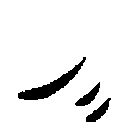
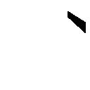
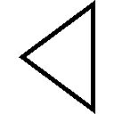
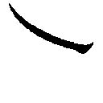
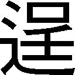

| 憂鬱なヴィランズ ガガガ文庫 憂鬱なヴィランズ | |
| カミツキレイニー | |
| (2012) | |
小学館ｅＢｏｏｋｓ
憂鬱なヴィランズ
カミツキレイニー
イラスト キムラダイスケ
登場人物
笠木兼亮（かさぎ・かねすけ）●高一の眼鏡。
煮雪日和（にゆき・ひより）●兼亮の親友の妹。中一。サイドテール。
帯刀月夜（おびなた・つきよ）●蒼い瞳の少女。高二。
生駒千鳥（いこま・ちどり）●不機嫌なおさげ。高二。『白雪姫』の読み手。
村瀬一郎（むらせ・いちろう）●得体の知れない猫目。高二。『青髭』の読み手。
煮雪瞑（にゆき・つむり）●兼亮の親友。高一。目下行方不明中。
好きな食べ物は少女だった。
しかし彼がそんな嗜好を語ったところで、誰に理解してもらえるだろう。
それは例えば、尻尾を振って逃げる三匹の子ブタのように。またあるいは、部屋の隅っこで震える七匹の子ヤギのように。少女という存在には、隠した嗜虐性をくすぐる、扇情的な魅力があるように思えるのだ。
彼は笑った。それはまるで、御伽噺のようだ。
この衝動には現実味がない。舌なめずりをひとつして、男は物語の住人となった。
滴る赤は未成熟の新鮮なブドウ酒。柔肌はまだ温かいパンケーキ。少女の悲鳴を爪弾いて、甘い涙に舌を這わせる。
少女は恐怖に身を震わせた。
しかしこの恐ろしさを語ったところで、誰に理解してもらえるだろう。
この首に食い込む爪の力強さを。この私を見るぎらついた瞳の残酷さを。
──ああ、なんて大きな口をしているのだろう。
少女は泣いた。それはまるで、御伽噺のようだ。
霞みゆく視線の先、その姿にオオカミを重ね、少女はひとり、絶望を見る。
バスの中では本を開かない。それは集中できないとか、酔ってしまうからといった理由ではなく、むしろその逆、集中しすぎてしまうから、夢中になってしまうから読まないのだ。
一度ページを開けば没頭し、通学時間の二〇分そこらでは物足りなくなってしまう。学校前のバス停へ到着し、非日常な世界から顔を持ち上げた瞬間の失速感には、容易に一日の気力を奪われてしまう。
物語に惑わされ、登場人物に心奪われると現を生きられない。
だから笠木兼亮が、登校中のバスの中でページを開くことはない。
雨の中をバスは行く。兼亮は後部座席の窓際に座り、足を組んでいた。毎朝の日課になぞって購入した缶コーヒーのプルタブを開けつつ、その眼鏡に蛍光灯の光を反射させる。
乗客はほんの数名で、吊革に摑まる者もいない。あと数十分もして通勤ラッシュを迎えれば混雑するであろう車内も、今はまだ空席の方が多い。バス停で一緒に乗り込んだ手ぶらのサラリーマンや地味なＯＬなども、どこか疲れた表情で各方向に着席していた。
バスの振動に合わせて視界が揺れた。寝起きのぼんやりとした感覚を引きずったまま、兼亮は欠伸を嚙み殺した。
休み明けの倦怠感が尾を引く、陰鬱な月曜日。
退屈な、お決まりの光景。
ブラックの缶コーヒーを啜る。
しかし兼亮は気付いていなかった。異変の始まりはいつも、退屈な日常の中にある。
前シートの縁からすすす、と頭を出したのは、カメラ付きの携帯電話。そのレンズは確実に兼亮の顔を捉えている。
「......」
携帯電話には見覚えがあった。
兼亮は目を細め、そのレンズを睨み付ける。
「盗撮は犯罪だぞ」
「では許可を要求します。撮ってもいい？」
「......俺の顔なんか撮ってどうするのさ」
「フェイスブックに載せるの」
「......じゃあダメだよ、日和ちゃん」
「けちー」
顔を出したのは、こめかみの上の片方だけで留めたサイドテール。チェック柄の襟が特徴的なセーラー服は、この区内の中学校のものだ。
煮雪日和は兼亮の親友、煮雪瞑の妹だった。
「兼亮さんって朝早いんですね。意外」
頭を下げた日和は、今度はシートとシートの間から目だけを覗かせて呟く。
「悠々と遅刻して堂々と言い訳を並べる姑息なキャラを期待していたのになあ」
「悪かったな、期待に添えなくて」
「ううん、大丈夫。その無愛想な不機嫌オーラに関しては、期待以上の陰気っぷりだよー」
「ちっとも嬉しくないんだけど」
「褒めてるんだよ？」
「喜ぶべきところ？」
「もちろん」
「それはどうも」
「ふはは。貶してお礼言われるなんて、少女って無敵だね。写メ撮っていいですか？」
「......ダメだってば」
「ぶう」
シートの隙間から覗いた携帯電話のレンズに向かい、兼亮は人差し指を突き刺す。「きゃあ」っと非難を含めた小さな悲鳴。
「......通勤ラッシュの人いきれが苦手なんだよ。だから朝はいつもこの時間」
「人混みに呑まれるくらいなら、早起きした方がマシってことですか」
「そうだな」
「確かにそれは、兼亮さんっぽいや」
バスが屋根のない停留所に止まり、数名の乗客が傘を畳んで乗り込んでくる。
早朝である今の時間帯、住宅地に近いこの停留所で降りる乗客はいない。
カバンと傘を手に立ち上がった日和は兼亮の隣、後部座席の真ん中へ勢いよく腰を落とした。そして独り言のように小さく、疑問符を打つ。
「......人混みっていうか、人、自体を避けてるみたいな？」
「......中学生になって、大人びたことを言うようになったな」
「兼亮さん、日和はまだ一二です。子供ですよー」
膝の上のカバンを抱いて、日和は唇を尖らせる。
そのまま黙ってくれたので、兼亮は一息ついてシートへ背をもたれた。指で弾いた缶コーヒーのプルタブがパチン、と小さな悲鳴を上げる。
車内アナウンスが流れ、バスが発進する。
「子供なら子供らしくするべきだ。例えばそうだな、〝さん〟付けなんて他人行儀な呼び方ではなく、......いいんだぞ、こう、例えば、〝お兄ちゃん〟と呼んでも」
「やですよ。兼亮さん、ロリコンっぽいもん」
「ふ。健全な高校生に向かって何を。俺はロリコンなどでは──」
「健全な高校生ならやらしー本、兄に渡さないでもらえます？」
「やらしー本？」
「問い詰めたら兄、兼亮さんに無理やり持たされたって言ってましたけど？ 何、『月刊ツインテール』って。言っときますけど、スクール水着の時は頭にぴっちりフィットするダサい帽子被ってんだからね。〝スク水×ツインテ特集〟なんて、あのやらしー写真全てがむなしい幻想にすぎないんです。分かってます？」
「お......おう」
兼亮は眼鏡の奥、視線を泳がせた。やらしー本を発見された言い訳に自分の名が使われたことは、なに、責めまい。煮雪瞑、不運な彼を庇って汚名を被るのもまた親友の務めか、と兼亮は缶コーヒーを口元へ運ぶがさて、何と答えればよいものか。
「ならば......そのやらしー本......、返してもらうとしようかな。日和ちゃんには、目に毒──」
「もう捨てました」
「手間が省けたぜ」
兼亮は窓の外を向いて話題から逃げる。
二人の間には気まずい沈黙。
おまえのせいだぞ瞑、などと胸中で友を非難しながら、何となく結露した窓ガラスから外を眺める。後方へ流れてゆく住宅街を背景に、自分の顔と、その奥の日和の姿が反射して映っていた。どこか顔色のよくない日和は、凍えるように夏用のセーラー服から伸びた細い腕をさすっている。
寒いのだろうか。
ガラスに映る日和は俯いたまま、再び口を開く。
「......失踪してる女の子たちもまさか。兼亮さんが誘拐してたりして」
「なっ......そんなわけないだろ」
慌てて振り返る兼亮。
日和の話は、一週間と五日前から始まった、連続する生徒三名の失踪事件にまで言及する。ある男子高校生の失踪を皮切りに、日和と同じ中学校の少女が二名、忽然と姿を消していた。
「いいか日和ちゃん。確かに俺は少女を嫌いではない。けれど絶対に、誘拐したりなんかはしない」
「......ロリコン」
「ぶひぃ」
兼亮に向ける日和の眼差しはジト目なんて可愛いものではない。蔑視だ。
冷たい視線から逃れるように兼亮は立ち上がり、日和の膝の前──バス中央の通路へと出る。それから指先だけで「窓際へ寄れ」と促した。
「？」
一度兼亮を見上げた日和は、それでも素直に窓際へ腰を滑らせた。
日和の座っていた後部座席中央へ腰を落とす兼亮。なるほど、冷房の風が直接当たっていて寒い。腕まくりしていた制服の長袖シャツの袖口を、さり気なく戻す。
「わーい、どうして日和が〝窓際派〟だって知ってるんですか？ 兄から聞いた？」
「知らないよそんなことは。俺の高校の方が早く着くだろ」
「そっか」
日和は窓ガラス越しに、外を眺める。
日和と反対側の窓際には、兼亮と同じ夕陽ヶ丘高等学校の男子生徒が座っている。窓枠に片肘をつき、うたた寝をしているその見知らぬ生徒の邪魔にならないよう、兼亮は声を潜める。
「日和ちゃんの方こそ、今日は早いんだな。バスで会うのは初めてじゃないか？」
兼亮を見ることなく、日和は答える。
「最近、朝早くに目覚めちゃうんですよね。日和の方こそ健全たる中学生です」
その言葉とは裏腹に、日和の顔色は悪い。よく眠れていないのだろう。彼女が今現在、一二歳にしてたった一人で生活しているという異常事態にあることを、兼亮は知っている。
両親を失っている日和の、唯一の家族にして兼亮の親友である煮雪瞑。彼こそ渦中の、最初に失踪した男子高校生であるからだ。
一週間と五日前。簡単な書き置きを残して、瞑は日和の前から姿を消した。
日和はシートへ背を預ける。その表情は暗い。
兼亮はさらに声量を落とし、日和に尋ねた。
「あれからまだ、瞑から連絡は来てないのか？」
「......」
日和はただ、無言で頷く。
この短い期間で、瞑を含む三名の生徒が立て続けに行方不明となっているのだ。警察も動いており、それが二人をより動揺させた。日和は叔母と共に事情聴取も受けている。瞑は重要参考人として、警察からも捜査対象と見られているようだった。
何か大きな事件が起こっているのではないか。町は不安に揺れていた。
「書き置きには一週間で帰ってくるって書かれてあったのにな。どこに行っちゃったんだろ。妹がこんなに心配してるってのに」
「......」
「帰ってこられない理由でもあるのかな」
「帰ってきます。兄はちゃんと」
中学に入ってから、日和は人前で瞑のことをさす時は〝兄ちゃん〟ではなく〝兄〟と呼ぶようになった。小学生からの付き合いである兼亮の前でさえ頑なに〝兄〟と呼ぶのだ。
不安を隠そうと唇を結ぶ日和の横顔が見ていられなくて、兼亮は声のトーンを少々上げる。
「日和ちゃんが怖くて帰れないとか」
「それはあり得ません。日和は兄には優しいもの」
「俺も日和ちゃんにとっては、第二の兄みたいなものじゃないか？ もっと優しくしてもいいと思うけど」
「兄はひとりで充分。ロリコンの兄なんて要らないです」
「......ロリコンにも人権はあるんだよ......？ 日和たん」
「わ。たん、とかつけないでもらえます？ キモいから」
「おふっ......」
日和の言葉にはトゲがある。朝から相手をするには少々こたえる。
兼亮は再び視線の逃げ場所を探し、天井を仰いだ。バスの振動に合わせて、オレンジ色の吊革が一斉に揺れていた。
「......一週間と五日前、ね。もう帰ってくることはないんじゃないかな」
唐突に、兼亮の右隣から柔らかな男の声が聞こえた。
「一週間と五日。一介の男子高校生が行方をくらますには長すぎる時間だ。異常と言っていい。ワクワクするね。異常。例えばそうだな、僕の場合こうあってほしいと想像するよ。彼は行方をくらまして、煮雪日和、君と同じ年頃の少女を殺して回っている、なんて」
「......はい？」
さっきまで目を閉じていた男子生徒の言葉に、兼亮は素っ頓狂な声を漏らした。男は先ほどと同じ姿勢のまま窓枠に肘をついているが、その目は薄く開いている。
兼亮の肩から顔を覗かせた日和も首を傾げ、兼亮に尋ねた。
「......誰？」
「さあ。俺は知らないけど......」
兼亮と同じ夕陽ヶ丘高校のブレザー。兼亮はまだブレザーは着用していないが、冬服への移行期間であるこの時期、早くもブレザーを着ている生徒も多い。雨の降る今朝の空気は確かに冷たい。きちんと前ボタンを留めているその姿は、いくらか優等生にも見えた。
目元を隠すように伸びた前髪はくるりと外側にカールしており、それが妙な可愛らしさを演出している。だがバス内に灯る蛍光灯のせいかその顔色は青白く、兼亮は底知れない気味悪さを感じる。
「瞑の友達、ですか？」
兼亮の質問に、男は初めて視線を向けた。笑みを浮かべているように目尻は丸みを帯びてはいるが、しかしそれでも、黒く沈んだ瞳に友好の色はない。笑っているのか、笑ってはいないのか。距離感が摑めずに、兼亮は警戒した。
「僕が〝煮雪瞑〟の友達？ まさか。だって彼は、〝煮雪瞑〟という人物は、眉目秀麗、成績優秀、その上、運動神経抜群で誰にでも優しいんだよ？ ああ、なんて気持ち悪いんだ」
「......気持ち、悪い？」
兼亮は眉間に皺を寄せる。
男は兼亮のそんな仕草に全く気付いていないかのように、滔々と喋る。
「そうさ。だって〝完璧〟というのは人工的に生み出すものじゃないか。校内の様々な人種に彼の印象を尋ね回ってみたけれど、彼を悪く言う人は皆無だった。なるほど。誰もが彼に完璧な印象を抱くのなら、誰もが彼の、作り物を見ていたんだろうね」
男のその意見には、さすがに二人とも強い嫌悪を示した。当然だ。煮雪瞑は兼亮の友人であり、日和の兄でもあるのだから。
「あんたが誰かは知りませんが......決め付けるのは、よくないんじゃないですか」
兼亮が意図して睨み付けても、男は柔らかな笑みを消そうとはしない。
「もちろん、これは僕の主観でしかないし、また個人的な意見でしかない。正解はないだろうし、僕は彼を、人づてでしか知らない」
「会ったこともない人の悪口が、よく言えるもんだな」
「悪口のつもりはない。一意見さ。彼を評価する、彼の知人たちの話を聞いてのね。ある学者の言葉を知っているかい。『──誰の友にもなろうとする人間は、誰の友でもない』」
「その学者はずいぶん捻くれてますね。瞑にはたくさんの友達がいた。俺だってその一人です」
男は兼亮を正面にして、愉快だと言わんばかりに顔を綻ばせた。
「へえ。友達？ 一週間と五日もの間、行方の知れない彼の行動を、『どこ行っちゃったんだろうねえ』で片付けられる君が、友達？ それとも、ただ嘯いているだけかい。案外君が、彼に〝絵本〟を渡していたりして」
「絵本......？」
終始淡々とした口調で話す男だったが、眼差しは兼亮を観察するようにじっと見開かれている。その視線が不気味で、心地悪い。
彼が言葉を放つたび、口の端を歪めるたびに、その一挙手一投足が油断ならないものに見えてくる。まるで殺気に当てられているかのような危機感が、兼亮の気をそぞろにする。
男はさり気なく、ブレザーのポケットに手を入れた。
「君は〝絵本〟を、持っているかい？」
心境を悟られないよう、兼亮は変わらない口調を意識する。が、唇が震えた。
「......？ 何、言ってんの？」
「はあ。まあいいか、取り敢えずはどっちでも」
唐突に、男はポケットに入れていた手を振り上げる。その手に握られた、蛍光灯の光を反射するそれは──。
「──は？」
男の腕が振り下ろされるのと、兼亮が横っ飛びでバスの通路へ飛び出すのは、ほとんど同時だった。兼亮が落としたコーヒー缶が床で跳ね、カランコロンと音を立てる。
兼亮の座っていたシートに深々と突き刺さっていたのは、刃渡り三〇センチ以上もあるであろう、ナタ。
その湾曲した木製のグリップを握り、男はナタをシートから引き抜く。
兼亮は通路に尻をつけたまま、立ち上がった男を見上げる。あんなもの、カバンさえ持っていない男がどこに隠し持っていたのか。いや、それ以上の疑問は一体どうして自分は今、頭上にナタを降らされたのか。
「反撃を期待しよう。君も絵本を持っているならね。そうでないなら、死ぬしかないけど」
男はナタをくるりと半回転させ、それを抜き身のまま、ブレザーのポケットに沈めた。
「んな......」
兼亮自身も同じブレザーを持っているのだからよく知っている。刃渡り三〇センチ以上もの長さの刃物は、明らかにポケットの許容を超えている。入るわけがないのだ。なのにナタはまるで手品のように、男のポケットへ吸い込まれていった。不自然な膨らみも破けた様子もない。ナタは綺麗にどこかへ、消えてしまった。
『──お客様、走行中は危険ですのでお座りください』
車内に響くくぐもったアナウンス。場違いな運転手の気怠い声が、兼亮にはひどく遠くから聞こえたように思えた。
「......何するんだいきなり......！」
粋がってみても足に力が入らない。床板に尻をつけたまま、兼亮は男から距離を取る。
「絵本って何だ。瞑と何の関係が......？ あんた何者なんだ」
兼亮の質問からしばし間を置いて、男は小さく息をついた。
前髪の隙間から冷雨を降らせるように、失望たっぷりに兼亮を見下ろす。
「......まずはハズレか。じゃあ、君は？」
「ひゃっ」と小さな悲鳴。男の標的は、窓際に座る日和に変わった。
仰け反る日和を無理やり立たせ、まるで人質を取る犯人のように後ろから腕を回す。日和の頭は男の胸の位置。二人並んで初めて、男の背の高さに気付く。
「ふやぁあ──！」
開かれた日和の口元は、すぐに男に手で塞がれた。
「悲鳴はよくない煮雪日和。少女のそれとは、どんなに洗練された歌声よりも甘く扇情的であることを、君は自覚しなければいけないよ」
「ひ、日和ちゃん......！」
座席の肘掛けに手を乗せ立ち上がる兼亮を、男は日和を抱えたまま目で制する。
「おっと......動くなよ、この子がどうなっても知らな、い......ぜ、って、んん......。なんか悪役の死亡フラグっぽくない？ この台詞......」
「おい！ 何であんた、日和ちゃんの名前を知ってる？ その子をどうするつもりだ」
「やれやれ。全ての疑問に答えが用意されているなんて思うな。世間はそんなに甘くないことを君は──」
『お客様──？ どうかされましたか』
と、そこに再び間の悪い運転手のアナウンス。男が虚空に溜息をつく。
車内のアナウンスが止んだ直後に、男は日和の唇をなぞりながら言い直した。
「世間の残酷さを君は、──知らなくてはいけないよ」
言下に男は固く閉じる日和の唇の間に、人差し指と中指をねじ込んだ。
「んぐっ......!?」
日和は抵抗して唇を閉じるが、男の指が止まることはない。日和の体を抱き押さえたまま、第一関節、第二関節と指をゆっくりと口内へ沈めてゆく。
「お、おい......！」
次いで薬指、それから小指──。
「少女の魅力は紀元前から変わらないと見える。古代ローマの喜劇作家に言わせてみればこうだ──」
「やっ......。んあっ」
男は日和の額に鼻を近づけ、にたりと笑った。
「──『何も香水をつけていない女性こそ、一番いい匂いがする』」
「おい......」
男の指四本が根元まで入れられた時、兼亮は耐えかねて叫んだ。
「おいやめろ！ 俺は動いてないだろうが！」
直後、兼亮の全身を怖気が駆け上がり、鳥肌が立った。目の前で発生している信じられない光景。男は指の進行を止めなかった。根元まで入れられた指は、ずぶずぶと日和の口内に沈んでゆく。親指、手の甲、それから、手首。
「......っ！」
頰を紅潮させ、目に涙を溜めた日和はもう、呻き声すら漏らせない。
バス内はいつの間にか、張り詰めた空気に満ちていた。
理解を超えた光景を目の当たりにした時、人々は硬直し、困惑する。異変に気付き後部座席へ目をやる乗客たちの口からは、数々の疑問符が漏れる。何あれ？ 手品？ 彼らの日常にはあってはならない状況だった。少女の喉奥深くに、男が手首まで腕を突っ込んでいる光景など。
「ひよっ......、やめっ......」
親友の妹が目の前で襲われている。さっきまで笑い合っていた女の子が。動揺の極みに達した兼亮は呼吸困難に陥った。
男はその様子を眺めながら、腕を引き戻し始める。
日和の体内に入っていったのと逆に、手首が徐々に見えてくる。手の甲、親指。握られていたのは、木製のグリップ。それから見えてくる、銀色の装飾、鉄製のトリガー。
「んあっ......」
男が手を抜き出していくと、日和の吐息も再び漏れ始めた。
「......え」
口内から登場したのは、ピストル。男が日和の体内から取り出したのは、グリップ部分が緩やかに湾曲した銃だった。その形状は馴染みがなさすぎて、銃というよりも、まるでアンティークの装飾品のようだ。
バス内の空気が、ざわめいた。
男に背を押され、通路につんのめった日和の体を兼亮は受け止める。顔は赤く、呼吸は荒いが、意識を失っているわけではない。
「ひ、日和ちゃ......」
「......っ」
名前を呼ぶと兼亮に抱き付き、背中に回した手でシャツをしっかりと握ってくる。その小さな肩が、震えていた。
『──蟹田診療所をご利用の方は、この停留所が便利です』
車内に、次の停留所を告げる機械的な女性のアナウンスが流れた。
『お客様──、いかがされましたか？』
続いてマイクを通して、再び運転手の声。先ほどよりは幾分か、強張っている。しかし乗客の誰も、答えなかった。恐らくは答える、余裕がなかった。
伸びた片腕の先に握られたピストルは、走るバス車内の通路に沿って真っ直ぐに、日和を抱く兼亮へと向けられる。
「どうやらその子もハズレなのかな。まあ、ただ尋ねたって素直に答えてはくれないだろうけどさ。でもひとつ、君たちを調べる方法を思い付いたよ」
言いながら男は撃鉄を起こし、グリップにもう片方の手を添えた。
「君たちが重要なキャラクターであるなら、この程度の窮地など難なく切り抜けることができるだろう。ただしただのモブキャラなら、弾に当たって死んじゃうかもしれないよね？」
「......？」
「眼鏡の君。名前を聞いておこうか」
「か......笠木、兼す──」
名乗っている最中、破顔一笑した男に悪意を感じ、兼亮は日和を庇うように銃口に背を向けしゃがみ込んだ。
運転手がマイクを通して何かを言った。しかしそれはすぐに、臓腑へ響く銃声に搔き消される。その音には装飾品やモデルガンなどではない、本物の重さがあった。
車中に立ちこめる硝煙と、鼻をつく火薬の臭い。兼亮は顔を上げる。
正面のフロントガラスが、蜘蛛の巣状に割れていた。
バスが大きく傾ぎ、体が揺れる。
一度止まった時が再び流れ出したように、兼亮の耳に、乗客の悲鳴がフェードインしてくる。
「......残念。まあ普通は命中しないか。精度が悪いんだよ、これ。マッチロック式でないだけマシだけど」
男はピストルを矯めつ眇めつ眺めながら、悪戯に成功した少年のように無邪気に笑った。
それからブレザーのポケットに手を突っ込み、紙で包まれた薬莢を摑み取る。それを口で嚙み切ると、トリガーの上部にある火皿へ薬莢を傾け、火薬を入れる。
悲鳴を上げる乗客たちへ銃口を向け、そんな非日常的な行動に出ているにもかかわらず、やはり男は淡々とした口調を崩さない。
「余計なモブは要らない。バスはただ走り続けろ」
男の一言で、今にも停止しようとしていたバスのスピードが上がる。
「動いたら殺す。喋っても殺す。前に出るな。息をするな。目についた者から順に、理不尽に不条理に呆気なく殺すよ。いいね、今、君たちに課せられている仕事は舞台袖で息を殺すこと。名前を持つな。それが正しいモブキャラの在り方」
言い終わるや否や、男は銃口を下げ弾の装填を続ける。銃口に込め矢と呼ばれる棒を突っ込み、チャカチャカと弾を押し込む。
兼亮にとって男は最早、同じ学校の生徒ではなかった。あれは夕陽ヶ丘高校の生徒に擬態した、異常者だ。この日本のどこに登校中、ピストルを放ってバスジャックをする高校生がいるだろう。それも、隣席の乗客に話しかけるような気軽さで。
乗客たちは頭を屈め、座席シートの裏から男を警戒していた。的になるのを恐れているのだろう。従順に誰も声を発しようとはしない。中年のサラリーマンも、ポニーテールのＯＬも、皆シートの下にしゃがみ込んでいた。
兼亮も日和を抱いたまま、身近なシートへ体を寄せた。
バス前方のシートは後方と違い、横向きに設置されている。隠れるにしては心許ないが、通路の中央に座り込んでいるよりはマシだろうと、その座席へ身を投げる。
そして体を隠した目と鼻の先、思わぬものと遭遇する。最初に確認したのは、組まれた白い太もも。夕陽ヶ丘高校のプリーツスカートに、カーディガン。
「......？」
上げた視線の先に座っていたのは、気怠そうにスマートフォンを耳へ当てた女子高校生。
これもまた、異様な光景だった。
バスジャックなど素知らぬ様子で悠々と、おさげの女子高生は足を組み替える。
体を斜めにして座るおさげ女は窓ガラスへ片手を添えながら、もう片方の腕を、兼亮へと差し出した。つまりスマートフォンを、持っている方の手を。
「......あんたに」
兼亮の鼻先へ突き出されたのは、まさにその女子高生が今し方まで耳に当てていたスマホ。兼亮は怪訝におさげの女を見上げる。
「......俺？」
突然、目の前に出された携帯電話に驚く兼亮。バスジャックをされている最中、電話などしている場合ではないし、もちろん相手に心当たりなどない。
「はーやーく」
面倒くさそうにスマホが振られ、兼亮はついそれを受け取った。
おさげ女は口をへの字に曲げたままシートへ片膝をつき、窓ガラスへ、両の手を添えた。
「......え。ちょっと、危ないですよあんた」
慌てた兼亮は声を潜め忠告した。
バスの後ろにピストルを持ったバスジャック犯がいる。今、シートの陰から体を出すのはどう考えても得策とは思えない。
しかしおさげ女の行動に恐れや躊躇いは見られない。恐る恐るバスの後方を覗う兼亮。バスジャックの男はおさげ女の動きに気付いていながらも、しかし銃口を向けようとはしなかった。
握るスマホから声。
警察だろうか、と兼亮は思惑した。警察に通報したから、おさげ女はこうも落ち着いていられるのか、と。兼亮は日和を抱いたまま背を丸め、シートに隠れてスマホを耳に当てる。
「も......もしも──」
『立って』
言い切る前に耳朶を打ったのは、若い女性の声だった。
「えっと......警察ですか......？」
『その子を連れて、立って』
「立ったら、撃たれます」
『撃たれない。私が君たちをここから連れ出す。だから立って』
その声には、凜とした強さがあった。
『彼の狙いは君たちじゃない。君たちが〝絵本〟を持っていないなら、狙われる理由はないんだ。君は絵本を持っているの？』
また、絵本──。
自分たちは何に巻き込まれているのか。訳が分からず、兼亮は歯嚙みする。
「い、いえ。そんな物持ってません」
『なら、立つべき』
猜疑心は強い方だと、兼亮は自負していた。名乗りもしない知らない声に従うほど、単純でもないつもりだった。だが奇妙なことに、この耳を打つ声に惹かれた。
何が起こっているのか分からない。何をすべきか分からない。そんな状況においてこうあるべき、と指示されれば、取るべき選択はそれしかないように思えてくる。現におさげ女は、撃たれていないじゃないか、と。
兼亮は混乱していた。疲弊していた。誰かに助けてほしかった。
だから声に、従うことにした。
「......日和ちゃん、立てる？」
「......けほ」
返事は小さな咳で返される。日和は兼亮に抱き付いたまま、その腕に力を込めた。
先ほどとは打って変わって不安に満ち満ちた運転手の震えた声が、マイクを通してバス車内に響いた。
『......交差点です。止まります』
「ダメだ。ノーブレーキで」
男は声を上げ、前方の運転手に無茶を要求する。
『いえしかし、このままでは──』
「頑張れ。なおかつ、事故らないでね」
どうかしてる。兼亮は男を注視しながらゆっくりと、日和を胸に抱き立ち上がった。
「......立ちました」
『知ってる──』
電話口の声を搔き消すように、バスのスリップ音が聞こえた。車内が大きく揺れ動き、遠心力に体が傾く。男女混じった絶叫が車内を満たす。
バランスを崩し、通路へ足を踏み出した兼亮の視線もまた大きく振れた。一斉に同方向へ揺れる吊革。シートから飛び出すカバン。かの男はシートに足をかけバランスを取り、遠心力に抗っていた。
それから、おさげの女。不意に見えたその様相に、兼亮の心臓は跳ね上がる。女は指先だけを、窓ガラスにつけていたはずだった。それが今やその肘近くまで、左腕が丸々ガラスの中へ消えている。
それはまるで日和の口に手を突っ込んだ男のように──。
この女も、男の仲間......？
だからバスジャックにも動じなかったのか。バスの傾く刹那、電話の声に従ったことを後悔したその直後、バス後方から男の声。銃口が再び兼亮と日和に向けられる。
「さて、帯刀月夜が来るんだろう？」
「......お、おび、なた？」
「名残惜しいけど最後の確認だ、笠木なんとかくん。君たちは〝悪役〟を持っているかい？」
ヴィランズ。傾く視界の中で、響く混沌の中で、兼亮は初めて、その単語を耳にした。
──瞬間。
兼亮の視界に、蒼い瞳の少女が降る。
窓ガラスに手を突っ込んだおさげ女が引き抜いたのは。
車内の傾きに合わせ、遠心力に乗って兼亮の目前に現れたのは。
──漆黒の髪を纏う、蒼い瞳の少女だった。
『「お待たせ」』
携帯電話を手にした鼻先の少女と、耳元から聞こえるスマホの声が一致する。
銃口と兼亮の間に現れた少女は、スマホを握る兼亮の腕を摑み、バスの遠心力に任せた勢いそのままに、向かいの窓ガラスへ背中から飛び込んだ。
「ちょっ、待っ......！」
少女はまるで鏡の中に溶けてゆくように、窓ガラスへと吸い込まれていく。腕を引っ張られ、日和を抱いた兼亮もまた、窓ガラスへ向かってつんのめる。
背後に聞こえる銃声。
混乱する兼亮はただ、少女の蒼い瞳だけを追っていた。蒼。深い蒼。その瞳に惹かれてゆくように、兼亮もまた、吸い込まれていく。
長い黒髪がひらめくあとに、石鹸のいい香りがした。
暗、転。
× × ×
という、夢を見ました。
額のコブと、腕や膝に残る青あざの原因を尋ねられ、兼亮はそう答えた。よれた白衣に身を包んだ老いた医者は、ボールペンを片手に握ったままポカン、と口を開けていた。
シワだらけの顔に空いた穴は、口、というより洞穴のようだな、と兼亮は思った。
「え、夢なの？」
医者は分厚いレンズの眼鏡のつるを摘んで位置を直し、妙に裏返った細い声で兼亮に確認した。
「当たり前でしょう。そんな登校途中にピストルをぶっ放す学生なんて、日本にいるわけがない」
「......そう、ねえ」
医者は男性でありながら、その仕草や口調はまるで女性のようになよなよとしている。
「それにあの蒼い目の女の子。うちの学校の制服を着ていた気がするけど、それこそおかしい。俺は、学校であんな人見たことないですから」
「......ふうん」
医者はデスクの正面に向き直った。それから黙々とバインダーに挟まれたカルテを眺める。
手持ち無沙汰となった兼亮は緑色の薄いスリッパを見下ろし、座っている丸椅子を右へ左へ揺らした。寂寞とした診療所に、キィと錆びた金属音が響く。
兼亮は辺りを見渡した。ここはなかなか年季の入った診療所のようだ。壁に貼り付けられたポスターのナースなどは、一昔前の髪形をしている。
レントゲンを撮ったと言っていたから、医者の正面にあるパネルに貼られたレントゲン写真は兼亮のものなのだろう。パネルの上に飾られたアニメキャラクターのぬいぐるみは埃を被り、笑顔が淀んでしまっている。あれでは子供だけでなく、子供を預ける保護者の不安まで煽るだろうと、兼亮は眉をひそめる。
患者は他に誰もいないのか、窓の外に降る雨音以外は何も聞こえない。
まだ昼過ぎのはずだが曇天のためか、眩しすぎる蛍光灯が必要以上に白く室内を照らしていた。視界をぼやけさせる強い光と雨音にあのバスを連想させられ、落ち着かない。
磨ガラスの窓を眺めていると、医者に声をかけられた。
視線を移すと、医者は机上のノートパソコンの画面を兼亮の方へ向ける。
「そのバスってこれ？ このバス？」
マウスを操作した医者がイヤホンのピンを外すと、パソコン本体から女性アナウンサーの声が聞こえてくる。ネット上で見られるニュース速報の映像だ。
──市営バスが交差点を曲がりきれず、道路脇のガードレールと接触。
スピーカー部分から聞こえてくる言葉に、兼亮の心臓が収縮した。
『──運転手と乗客合わせて六名が軽傷を負いました』
アナウンサーの言下に映像が現場のものへと切り替わる。画面に映し出されているのは見慣れた交差点。その一角に止められているのは前方部分を痛ましくへこませた、例のバスだ。そして──。
『フロントガラスには二発の銃弾を受けた跡があり──』
アップで映し出されたガラス面は、さらに兼亮の顔を青ざめさせた。
『同署では乗客から話を聞くなどして、事件と事故、両方の面で調査を進めています──』
「君、もしかしてこれに──」
「乗ってませんけど」
「ほら、でもバスで銃って──」
「知りませんけど」
医者はじりっと粘着質な視線を向けてくる。兼亮は無表情のままその視線から逃げるように、そっぽを向いた。
顔が近い。鼻息が頰に触れる。
医者が唸った。
「......ふうん」
断固として口を強く結んだ兼亮の態度に観念したのか、医者は前屈みの姿勢を正し、再び机上のバインダーを手に取る。
医者が胸ポケットから取り出したペンを走らせるのを横目に見ながら、兼亮は気付かれないよう静かに、深呼吸をした。
兼亮には、あのバスで窓ガラスに飛び込んでからの記憶がない。自分は窓ガラスに突っ込んだのかそうでないのか、それすらも曖昧だった。突然目の前に現れた少女の蒼い瞳は強く印象に残っているが、考えれば蒼い目の黒髪少女など、その印象こそ神秘的すぎて夢に近しい。
目が覚めたら診療所のベッドに寝かされていた。隣には医者がいて、額のコブには氷水の入ったビニールが乗せられていた。肩にかけていたショルダーバッグも、ベッドの側に置かれていた。
通学中にどこかで頭を打ったのだろうと、兼亮はまだその可能性を捨てきれてはいなかった。頭を打ち、妙な夢を見たのだろうと。だがニュースを見る限り、ピストルを構えたあの男も現実だった。そうでなければ、まだ夢から覚めていないかだ。
男が引き金を引く直前の、人を食ったような笑顔を思い出し、兼亮の胸中に嫌悪と恐れが蘇る。
「──まあ、診察代の方はオビナタさんから貰ってあるから。保険証も必要ないわ」
「......おびなた？」
「そういうことでね、うん。吐き気や目眩がないなら、帰っていいわ」
バインダーを机上へ置き立ち上がった医者を、目で追う兼亮。
「いや待って！ 〝オビナタ〟って、誰ですか」
「......え？ 何？ これ言っちゃまずかったの？」
兼亮の表情に光が差すのを見た医者は、苦々しく顔を歪めた。
「先生！ オビナタって、もしかしてあの蒼い目の女の子のこと？ あの人を知ってるんですね？」
立ち上がった兼亮に気圧され、医者は「ひゃぁあ」といやに可愛い悲鳴を上げ後退りした。
医者は小柄だった。兼亮はその細い二の腕を握り、尋問する。
「知っているんなら教えてもらえませんか。あの子は現実なんですね？ いるんだ！ この町に」
「わかんないよ、わかんないわかんない。かっ、ぺっ！」
「っおう」大人げない仕草に、兼亮は反射的に医者を突き離す。
乱れた白衣を整える医者。
「私にだって言えないこともあるわ......貰うもん貰ってんだから。ひとつだけ教えてあげられることは、彼女はもうこの院内にはいないってこと。君たちを連れてきて、すぐに出ていっちゃったわよ」
「君、たち......？ 日和ちゃんのこと？ 煮雪日和も、ここにいるんですか？」
「......その子も、診察受けてすぐに出ていったわ」
「え？ どこに？」
「はんっ。確かに優秀な医者の目はクランケの体内にも届くわ。でもそれは院内に限って。外へ出ていっちゃったあの子の行方なんか知れないわよ」
「......」
兼亮はバスの中での日和の様子を思い返す。震えて自分にしがみついていた姿を。口の中に手を突っ込まれ、あまつさえその口から取り出されたピストルで狙われるなんて酷い体験をした直後だというのに、どこへ行ってしまったのか。
自分のアパートに帰ってしまったのだろうか。
「......日和ちゃんは、どこかケガしてました？ 喉とか」
「喉？ ああ。君の見た夢のように？ あの子に外傷は見られなかったし、もちろん喉にも異常はなかったわ。ただ神経衰弱の気はあったけれども。あの肌色は睡眠不足と疲労困憊。それから食欲不振ね」
「......それは、そうでしょうね」
よく見ている。兼亮は初めてこの医者に感心した。
日和は強がる子だから、いつも笑顔を絶やさない。兄が消えた不安など、全く感じていないかのように振る舞う。日和は、たったひとりの兄である瞑にしか甘えないのだ。
「でもあの子、何も話してくれなかったから、心の問題は私にはお手上げだわ」
「それは仕方ない。俺にだって話してくれないんですから」
「あなたは恋人？」
「いえ、あの子の兄の友達です」
「......ふうん」
兼亮が部屋の出入り口へ歩くと、医者が「待って」と呼び止めた。振り返ると目の前に出される小さなバスケット。中には小袋に入れられた飴玉がいくつか入っている。
「小さな子が来た時用に用意してるんだけどね。余っちゃうのよ、来ないから」
「......ありがとうございます」
一袋摘むと、医者は「もっと」とバスケットを揺らした。
「オビナタさんの分と、それからあの子の分も」
「......どうも」
兼亮はもう二つ、適当に選んで摘み取った。
電気の落ちた待合室でソファーに腰かけ、兼亮は携帯電話を確認した。
日和からのメールを受信していた。件名は、おはよう！
『日和も診察所で休んでたんだけど、用事ができたので先に帰ります！ 心配だから起きたら電話して（）』
あんな体験をしたあとだというのに元気そうな文面だったから、兼亮は取り敢えず胸を撫で下ろした。しかし彼女が強がりだというのも知っている。兼亮はすぐに日和の携帯番号を探す。
仄暗い待合室は雨音に満たされていた。携帯電話の明かりだけが、ぽっと灯っている。
「もしもし」
『もしもし!? 兼亮さん？』
日和の声は、明るかった。
『目、覚めたんですね？』
「ああ、覚めた。少し、頭がズキズキするな」
『兼亮さん、頭打ったんですよ。覚えてない？ 日和、兼亮さんが撃たれて死んだと思って超焦ったんだから』
喧騒の中、声を張っているようにも聞こえる。日和は自分のアパートではなく、どこにいるのだろう。兼亮は思考する。
「日和ちゃん、どこにいるんだ？」
『駅のホームです。うるさい？』
「いや、声は聞こえるけど、体は大丈夫なのか？」
『うん、日和は別にケガしてないですから』
「......喉も、大丈夫？」
『それがね、何ともないの。声も出るし、さっきジュースも飲めたし。驚きなんだよ』
「そうだ、あのバスの男。あいつが何のために瞑を調べていたのかは分からないけど、警戒した方がいい。また現れるかもしれないだろ。一旦合流して──」
『大丈夫だよ。オビナタさんが説明してくれたんだ。あの人が日和たちを襲うことはもうないんだって。あの人はね、自分自身と同じ、超能力を持っている人を探しているらしいんだよ』
──超能力。
それは容易に飲み込めない不可解な単語ではあったが、それ以上に、兼亮は日和の口から飛び出した〝オビナタさん〟という言葉に惹かれた。
「喋ったのか？ その、〝オビナタさん〟と」
『喋ったよ。不思議な人だったな。......あの人の目、何色か知ってます？』
「青だろ」
『スケベ』
「待て待て。何でスケベになるんだ」
『だって兼亮さん気絶してたのに、何で知ってるわけ？ 薄目開けて見てたの？』
「瞳の色だけは覚えてるんだよ。目が合ったのは一瞬だけだったけど、バスの中で、窓ガラスに頭をぶつける前に見たのを覚えてるんだ」
『へえ。うーん、信じてあげてもいいかな。印象的ですもんね、あの目は』
「上から目線だね、日和ちゃん」
『ってか、窓ガラスに頭をぶつけたって言いました？ 兼亮さんがぶつけたのは、窓ガラスじゃないですよ。うける。ホントに気絶してたんですね。窓ガラスを通して、どこへ出たか覚えてない？』
「通して......？」
遠心力に支配されたバス車内。蒼い瞳の少女が、兼亮から見て右側の窓ガラスから登場したのは目撃した。それから兼亮の腕を摑み、出てきたガラスと対面の、左側へ走り抜けていったのも見た。それから少女は背中から窓ガラスへダイブし、腕を引っ張られた兼亮も一緒に──。
「どこかへワープでもした、のか？」
『しました』
「どこへ出たんだ？」
『ふふふ、それはね。と言いたいところだけど、電車来ちゃった！』
──危ないですので、白線の内側までお下がりください。
電話口からアナウンスが聞こえた直後、電車の到着する騒音で何も聞こえなくなる。
兼亮は携帯電話を耳に当てたまま、日和の声を待った。
騒音が鳴り止んですぐに、日和は声を張り上げる。
『じゃまたあとで！ 日和は大丈夫です。兼亮さんも今日はちゃんと休んでね？ じゃね』
電話は一方的に切られた。
雨音だけが響く静かな待合室に取り残され、兼亮は少しだけ寂しくなった。
あんな目に遭ったというのに、日和の声はどこか弾んでいた。不思議体験をして心躍るお年頃なのだろうか。兼亮は顎に指を添え考える。自分にとってあれは、恐怖体験といえるものだった。
窓ガラスを通して、自分はどこへ出たのか。
兼亮は額に貼り付けられた冷却用湿布に指先を触れる。
「......俺は何に頭をぶつけたんだ？」
謎だらけで混乱する。
指の腹で軽く押すと刺すような痛みが走り、兼亮は顔をしかめた。
夕陽ヶ丘高校の文芸部部室は、先ほど兼亮がいた診療所の待合室と同じように、閑散としていた。未だ降り続く雨音が、蛍光灯の照らす室内を満たしている。
兼亮はまず、窓を開けた。
陰鬱な雨音が直に聞こえ、同時に冷たい空気が頰に触れる。
校舎の四階に位置する部室からは、緑豊かな中庭が見下ろせた。芝生の中央にはしい樹木が一本だけ、今は緑豊かなソメイヨシノが屹立している。
授業中である今、そこに人影はない。
向かい側の校舎へ視線を上げると、教室に並んで座る生徒たちが確認できた。
雨の校舎とはどうしてこうも青白く見えるのか。鉄筋コンクリートの校舎内にはたくさんの人がいるのにひっそりとしていて、規則に縛られた空間は重たい。
嘆息を外気に溶かし、兼亮は窓枠にもたれ部室を見渡す。
文芸部部室はひとつの教室を丸々使用しているため、かなり広い。ただし窓際の兼亮から見て右側、黒板のない教室の後ろ半分以上は、図書館のようにずらりと本棚が並んでいる。
教室の三分の二ほどを占めているのにもかかわらず、本棚と本棚の間は狭い。文芸部に集められた書物の量は棚の収納許容さえ超え、あぶれた本は床に雑然と平積み状態になっている。
普段使用しているのが、残り三分の一のスペースだ。そこに会議室用のロングテーブルがひとつと、窓側には部長用の勉強机がひとつ。今の文芸部の規模を考えれば、それで充分であった。
学校中の生徒が勉学に勤しむこの時間、部室に誰かが入ってくることはまずない。たとえ今が放課後であっても、部室を訪れる者はいないだろう。現在活動中の文芸部部員は、今のところ二人しかいない。兼亮と、そのもう一人の部員というのが、行方不明中の煮雪瞑なのだ。
文芸部部室は、今や兼亮のプライベートルームと化していた。だから授業の欠席を母親に知られたくない兼亮は、午後の授業が終わるまでの間、この部室で時間を潰そうと考えていた。
窓際の部長机へ腰かけようとして、机上に置いたショルダーバッグが雨でだいぶ濡れてしまっていることに気付く。確かロッカーにハンガーがあるはずだ。兼亮はバッグを干すために、ロッカーのある出入り口へ足を運ぶ。
部室で読書でもしようと思っていたのだが、やはりどこか落ち着かない。
思考を止めればすぐに今朝の出来事が脳裏を過ぎる。
バスの男。
振り上げられたナタ。
日和ちゃん。
その小さな体から取り出されたピストル。
自分に向けられた銃口を思い出すと身は震えたが、直後に少女の蒼い瞳が連想される。すると恐怖は和らぐのだ。恐れや怯えが一時的に消え、ただ魅せられている自分に気付く。
少女は一体何者なのか。
神秘的な瞳を思い返せば、あの美しい人が自分と同じこの日常に存在しているとは思えない。
やはりあれは夢だったのか。
しかし日和や医者は実際に言葉を交わしている。ならば現実なのか。
考えたところで堂々巡り。答えはひとりでは導けない。
少女とまた会うことができるのなら、どうか夢でありませんように、と願うばかりだ。
ロッカーの取っ手に指をかける兼亮。引き開けようとした扉に、激しく抵抗されていることに気付いた。
「......？」
錆ついて動かないわけではない。カギが掛かっているわけでもない。開けさせまいと内側から、抵抗されているのだ。力を込め数センチ開けた扉は、瞬時に向こうへ引っ張られ閉まる。
ぱたん。
「......！」
鳥肌を纏って取っ手から腕を引き、兼亮はロッカーを警戒した。
──誰かいる！
「......あ、あの」
胸を打つ動悸を抑え、兼亮は恐る恐る誰何する。
「誰、ですか......？」
返事は、なかった。
「......もしもし？」
「......」
「え......どうしよ。泥棒、ですか？」
「......」
やはり回答は得られない。
兼亮は再びロッカーの取っ手に指を添える。変わらずロッカーは抵抗した。
不審な人物が入っているのなら、不用意に開けるのは危険だ。ひとりで開けるのは勇気がいる。携帯電話を取り出す兼亮。しかしそのディスプレイを見下ろしたまま、固まってしまう。
今は授業中。応援を呼べる相手がいない。
「......え、と......。じゃあ、警察......？」
「にゃー」
警察、に反応したのか、呟いた直後ロッカーから声がした。若い、女性の声だった。
「......」
「......」
「......なんだ、猫か」
「にゃー」
「──んなわけあるかっ」
取っ手に飛びつく兼亮。抵抗する扉。だがしかし引く力を中から制するなど敵うまい。兼亮は高を括って扉を引くが、相手もなかなか諦めない。
ぱたん、たん。
数センチ開いては閉まり、引いては引かれての繰り返しが続く。手強い。兼亮はますます腕に力を込めた。すでに隠れていることを忘れたのか、ロッカーの中でふうふうと息を荒らげる何者かを、扉一枚挟んで睨み付ける。
「くっ......まあ、いいや」
兼亮は作戦を変えた。引いてダメなら、もっと引く。
「......猫か。じゃあいいや、猫なら。猫なら仕方がないや」
言って踵を返す。沈黙はたっぷり五秒。相手の油断を誘い、兼亮は一気に取っ手へ手を伸ばす。
雨音だけが聞こえる静寂な室内に再び、ガシャンと扉の開く音が響いた。
「......っ！」
中にしゃがんでいた黒髪の少女は完全に油断していたのだろう。
驚愕に開かれた瞳は深い蒼。口を三角にして固まっていた。
「......え」
兼亮を見上げる少女。しかしそれも一瞬で、すぐに俯いてしまう。
──夢じゃ、なかった！
兼亮もまた、目を丸くする。
会いたいと切望した少女だ。まさかこんなにもすぐに、しかも部室のロッカーの中で発見できるとは。
「......な、何、してるんですか、そんなとこで」
「......」
一冊の本を胸に抱いたまま、少女は不意に立ち上がった。きめ細かな頰を薄紅に染めて、目を伏せたまま一歩二歩と前に出る。
兼亮は合わせて後退りしながら、俯く少女の全体像を眺めた。
少女は、兼亮が思っていたよりも小柄だった。兼亮の身長よりも頭ひとつ分くらいは低い。
蛍光灯の光を弾く艶やかな黒髪は胸下に達するほど長く、華奢なシルエットにボリュームを加えている。それでいて全体的な印象が〝黒〟ではなく透明な〝青〟なのは、深雪のように白い肌と、瞳の色のせいだろう。
その存在は、奇異だった。
奇や異だなんて言葉を女性に使うのは失礼に当たるのかもしれない。兼亮はそう考え思い改めようとするが、その単語はしっくりきていた。神さまが、「そうだ、美人を作ろう」と思い立って丁寧に粘土を捏ねれば、きっとこんな人間が誕生する。均整の取れた顔立ちや透徹した雰囲気は、例えば乱暴に扱えば壊れてしまう飴細工のようで、動いて言葉を発すること自体が不思議で、不自然で、不条理で、不気味。
そんな少女が、ここ夕陽ヶ丘高校の制服を着ていることに、多大な違和を感じる。
「......ふう」
少女は数秒前の驚愕などなかったかのように静かに、吐息をひとつ。髪を乱暴に搔き上げると、片手を腰に添え凜とした。
「ここの責任者は現在、〝煮雪瞑〟のはず。君は誰」
抑揚なく言葉を紡ぐ。だがその視線はそっぽを向いたまま、兼亮へは向けられていない。
「......え、と、俺に言ってるんですよね」
教室には二人きりだ。少女が言葉を発するなら、それが独り言でなければ自分への問いと考えていいだろう。
「俺のこと、覚えてません？」
「？ ここの部員？」
「そうです」
兼亮は自分の顔を思い出してもらおうと、少女の視界へ侵入を試みた。しかし少女は兼亮を見ず、今度は下を向いてしまう。頑なに視線を合わせようとしない。
「あの、ありがとうございました」
兼亮が感謝の気持ちを表わし一歩前へ出ると、少女は一歩後ろへ下がる。
「何が」
「朝、助けてくれたじゃないですか。診療代まで払ってもらって」
「ああ。バスの」
本当に覚えてくれていないのか......？ 少女の反応は少しだけ、兼亮を悲しくさせた。
額にかかる前髪を上げ、兼亮は冷却用湿布を見せる。それでも少女は、床に視線を落としたままだ。
「額にコブができてました。診療代、払いますよ。いくらでした？」
兼亮が額を突き出すと、少女はまた一歩下がり、小さな声で呟く。
「診療代。気にしないで」
「......」
無表情のまま抑揚のない口調。少女の態度に、兼亮は戸惑う。自分は何か変なことを、言ってしまっているのだろうか。
「え、と。そんなわけにはいかない。払います」
「他の部員はいないんだよね」
「他は幽霊部員で、しばらく顔を見せてません。あの、どうやってロッカーに入ったんです？」
「〝煮雪瞑〟はいつから部室へ来ていないの」
「一週間と五日前まではちゃんと来てましたけどね。いつからロッカーに入ってたんです？ それも今朝の、魔法みたいなやつで？」
「一週間と五日。姿を消す直前までは、きちんと部活にも出ていたんだね」
何だこのキャッチボール。自分だけ受けてないか？ 会話ができない。兼亮は少々怖くなった。その見た目通りに、彼女は違う次元に生きているのだろうか。
「......」
「......」
兼亮が質問を止めると、少女も口を閉じる。気まずい沈黙が続いた。
何か別の話題がいいのかもしれない。思考を巡らせて、兼亮は少女が胸に抱いている本を指差す。
「それ、アレイスター・クロウリーの『法の書』ですよね。確かこの部室にもありますよ。どっかで見たけどな」
黒地に赤や黄色で魔方陣を描いたような毒々しい表紙は独特だ。すぐに分かった。兼亮は爪先の方向を変え、窓の側の本棚へ足を運ぶ。
「ええと、確かこの辺に」
「あったよ。これがその本」
振り返る兼亮の背中に、俯いた少女は持っていた本を突き出した。
「......お、おう。いつの間に取ったんですか......？ ロッカーの中にいたのに」
「取ってから、入ったんだよ」
「へ？ バスの時みたいに、ロッカーの中に突然現れたってわけじゃないんですか？」
「違うよ。廊下から部屋を覗いていたら、本棚に並ぶタイトルが読めたの。あれに見えるは、かの有名な魔術師アレイスター・クロウリーの著書ではないか。世界中で恐れられていた禁書がまさかこんな一般の高等学校の一角で息を潜めているとは思ってもみなかったから、私はすごく驚いたよ。二度見や三度見どころじゃない、四度見くらいはしたと思う」
兼亮は、驚愕のあまり四度見する少女を想像してみた。噓っぽかった。
「読んでみたいな。そう思った途端、ドアが開いたの。たぶんアレイスターの呪いだね。気がついたら、私は部室に足を踏み入れていたんだ」
無断侵入を何十年も前に死んだ魔術師のせいにして、少女は哀愁たっぷりにかぶりを振った。呪いだから仕方がなかったの、と言わんばかりに。
「つまり本が読みたくて、普通にドア開けて入ってきたってことですね」
だからロッカーに隠れていたのか。
兼亮は思い返す。確かに部室へ来た時、カギはかかっていなかったかもしれない。部員が二人しかいない部室の管理は、だいぶずさんだった。カギは一応持ってはいたが、普段二人以外に訪れる者のない部室のカギは開けていたり、閉めていたりだ。
「ごめんなさい。返す」
差し出された本を、兼亮は手の平で押し返した。
「読みたいのならどうぞ。気に入ったら持って帰ってもいいですよ」
『法の書』は別に、禁書というほど大げさな書物でもない。恐らくネットでも定価で買える一般的な代物だ。
「え。いいの」
少女はやはり俯いたままだったが、その声は朗らかに跳ねた。
「どうぞ」
「文芸部のものでしょ。勝手に持って帰ってもいいの」
「ここに集まるのは、二階の図書室から流れてきた、廃棄されるはずの本なんです。それだってもうボロボロでしょ」
少女は改めて『法の書』へ視線を落とす。ぱっと見ただけでも、ハードカバーの角が削れて丸くなり、本の側面には茶色い染みがついている。
「たぶんページが抜け落ちてるとか、破けてるとかでまともには読めないですよ。それでもよければ、どうぞ」
「やった。ありがとう」
少女は謝辞を述べ、深々と頭を下げた。
礼を言われるほどのことではないが、喜んでもらえるなら悪い気はしない。兼亮は微笑みを返した。
しかしまたひとつ、疑問が増える。
──どうしてこの人は、笑わないんだろう。
言葉は弾んでいるし、挙動だって嬉々としているのに、少女の整った顔は表情筋が強張ってしまっているかのように、無表情だった。
そしてふと兼亮と目が合うと、少女ははっと視線を外すのだ。まるで人の視線に怯えるように。人を見ないように、しているかのように。
言動や仕草と一致しないその顔はやはり不自然で、得体の知れない不気味さがあった。
少女は『法の書』を抱いたまま、教室の大半を占める本棚ゾーンを見渡す。
「ここにある本、全部廃棄なの？ もったいないね。見てもいい？」
「どうぞ。気に入ったのがあれば持ってってもいい」
「本当？ 遠慮しないよ」
「カビ臭いのでよければ、ですけど」
本棚ゾーンは普段使っていないため、電気は落としてある。
兼亮は部室のドアの側にある、電気のスイッチを押した。所狭しと並ぶ本棚の行列が、蛍光灯に照らし出される。
電灯の一部がチカチカと明滅していた。蛍光灯の寿命が切れかかっている。電気を点けたのも久しぶりだから、気にも留めていなかった。
「眩しいな。あっちだけ消せないかな」
「平気。気にしない」
個人経営の小さな古書店のように、本棚と本棚の間のスペースはひどく狭い。教室の後ろ半分以上にぎっしり詰まった本棚ゾーンを初めて見た時、人並み以上に読書を愛する兼亮でさえ威圧感に尻込みしたものだが、少女は何の躊躇もなく足を踏み入れていった。
兼亮はドアの側から、本棚を見上げる無表情な横顔に尋ねた。
「本、好きなんですか」
「好き」
でしょうね、と兼亮は腕を組む。本をあげると言った途端に、少女の警戒は緩くなったような気がする。バスの男について、窓から現れたカラクリについて、少女に尋ねたいことは山ほどあったが、まずは距離を縮めることを優先した。
「どんなジャンルが好きなんです？」
少女は本棚に並ぶタイトルを眺めながら、ぽつりと言葉を漏らす。
「ラブストーリー」
「へえ。やっぱコメディとかじゃないんだ」
「どうして？」
「笑いそうもないから」
言った直後に、失礼だったかと後悔した。
しかし少女は、意に介さず会話を続ける。
「コメディも好きだよ。ファンタジーもミステリーもホラーもＳＦも。掌編もエッセイもライトノベルもボーイズラブも」
「ボーイズラブも？ それはまた意外」
「登場人物が苦難を乗り越えて成長する物語が好き。困難が大きいほど、登場人物たちを応援したくなるでしょ。同性に惹かれてしまうなんて、そんな彼らの葛藤を想像すると胸が苦しくてドキドキしてしまうよ。絡み始めればもっとドキドキしてしまうけど」
「......っおう」
返答に困った。兼亮の周りに、ボーイズラブを好む女の子はいない。
少女は一列目の棚を見終わると、本棚と本棚の間を二列目に向かって移動した。ドアの側からはその姿が見えなくなってしまったので、兼亮も少女と同じ方向に平行移動する。
「もしかして、腐女子ってやつ？」
少女は『法の書』を後ろ手に持ちながら、二番目の棚を通り過ぎる。
「ふじょし？ 腐った、方の？」
少女の「腐った」という言葉を聞いて、兼亮は再び失言だったかと顔をしかめた。
「すみません、悪い意味ではないです」
慌てて弁解するも、やはり少女が意に介することはない。
「何をさして〝腐女子〟と言うんだろ。ボーイズラブを嗜んだら？ だったら私も腐女子だと思うよ」
本棚と本棚の間を少女は行く。
四番目の棚を抜けたところで、兼亮は少女を見失った。
「でも変なの。どうして〝腐った〟なんて表現を？」
どこからか声はする。兼亮は踵を返して少女を捜しながら、本棚ゾーンから聞こえてきたその問いに意見を述べる。どこにいるか分からないので、少々声を張った。
「一般的でない嗜好を面白く自嘲して言うんじゃないですか？ 自分たちは腐ってる、なんて」
「男性同士の恋愛を楽しむことが？」
「とか、既存のアニメのキャラクターや、実在する男性アイドルなんかのカップリングを妄想することとか」
「そんな楽しみ方もあるんだね。それは未経験だな」
少女を発見して、兼亮は足を止めた。
少女は先ほどは通り過ぎた二番目の奥側の本棚の前で爪先を立て、腕を伸ばしていた。そしてその態勢のまま、誰にともなく呟く。
「いろんな考え方をする人がいる。だから人間は面白い」
「......俺には理解できないですけどね。奇妙というか、普通じゃないというか」
「何かを好きになるのに、〝普通は〟だとか〝一般的には〟だとかを気にするなんて無粋だよ。好きになる気持ちは、右に倣えではないでしょう」
少女はこちらを見ることなく、取り出した深緑色のハードカバー本を開いて二度、小さな咳をした。埃にむせたのだろう。
「......おお、ロミオ。あなたはどうしてロミオなの」
開いているのはシェイクスピアの『ロミオとジュリエット』なのだろうか。兼亮の位置からは遠くて判断できないが、少女が呟いたのは有名な台詞だ。対立する家柄の相手に恋心を抱いてしまったジュリエットが、ロミオの生まれを嘆いて言った台詞。
「これ例えばジュリエットが男だとして。『あなたはどうしてロミオなの』じゃなく『あなたはどうして男なの』に変えても、同じことじゃない？」
「同......じ......。ではないでしょうよ」
「二人は愛し合っているんだよ？ なのに世間が認めていない、という点において、ほら。同じ」
「強引だな」
兼亮は苦笑する。
「ラブロマンスが台無しだ」
「ラブロマンスは二人のものだもの。私たち読者のためのものじゃない」
「二人の問題だとしても、ですよ。それはもう世間が認めてないどころか、神すらも認めてない。だって男同士じゃ繁殖できないでしょ。例えば神さまが生き物を創ったとして、活動力摂取のために〝食欲〟を、生命力保持のために〝睡眠欲〟を、子孫繁栄のために〝性欲〟を与えたとしたら、その〝性欲〟が神さまの思ったことと別の方向に向いてしまっているじゃないですか。だから不自然に感じるんじゃないかな。だから端から見て、あるいは嫌悪の対象になったりするんじゃないかな」
「だから、いいんだよ」
少女は蒼い瞳を本へ落としたまま、やはり独り言のように呟く。
「神さまの思惑通りじゃないからいいんだよ。誰にも認められなくたって、嫌悪を抱かれたって、それでも二人にとっては大切な物語なんだ。それは不自然なのかもしれないけれど、不自然だからこそ、人間は面白いんだよ。人間が面白いから、本が面白いんだよ」
人工的な雰囲気を持つ少女は、表情を崩さないまま、一度だけゆっくりと、瞬きをした。
「だから私は、本を通して人間を読むの」
「......」
蛍光灯が明滅する。
雨音の反響する室内は、世間から隔離されてしまったかのように静寂に満ちていた。
「でもバッドエンドは苦手」
そう言うと少女は、深緑色の本を元の位置へ戻す。
「作者別だとか、ジャンル別に整頓されているわけじゃないんだね」
再び歩き出した少女を追って、兼亮も本棚ゾーンへ足を踏み入れることにした。
「......廃棄が決まったのから順に流れてくるみたいですから」
「一番古くてどのくらい」
「さあ。学校ができた頃の本もあるかもしれませんね」
少女を見失わないよう、その後ろ姿を目で追いながら、兼亮は答える。肩を隠す長い黒髪が明滅する光に晒され、見え隠れする。
──不思議な少女だ。
その存在を怪訝に思いながらも、少女の抑揚なく発せられる言葉には外連味を感じない。作り物のような少女。しかしその内面は、人や本について熱く語るくらいに感情が満ちている。それが外部に反映されていないような印象だ。
見失わないように、と気をつけていた兼亮だったが角を曲がった途端に、彼女の姿を失った。
「児童書もあるんだ」
「......そうみたいですね」
その声はすぐ近くに聞こえたのに、姿は見えない。
「絵本まである」
「誰が読んでたんでしょうね。高校の図書室なのに」
声を辿って歩いてみる。
本棚と本棚の間は人ひとりやっとが通れる狭さだ。その上、足もとには棚からあぶれた本が積まれているため、歩くことも困難だった。
「図鑑まで。百科事典もある」
声は後ろから聞こえた。慌てて兼亮は踵を返す。
「素晴らしい部室だね」
「何十年も前は、小説家なんかを輩出した立派な部活だったって聞きました。今使っているのは、俺ひとりですけどね」
「どうして他の部員は来ないの」
「うちの文芸部、今は活動らしいことはしてないですから。先輩たちも部長職を瞑に押しつけて来なくなりました。退部しなかっただけマシですよ。人いなかったら廃部ですもん」
「だから〝煮雪瞑〟は、一年生にして部長を務めていたんだね」
声を辿っていくと、雨粒の浮かぶ窓際に突き当たる。少女の姿は見えない。
起伏のない少女の声が、急に真面目さを帯びた。
「......魅力的な書庫を前に有頂天になって、危うく本題を忘れてしまうところだったよ」
窓ガラスに、少女の影。
振り返ると、兼亮のすぐ後ろに目を伏せた少女が立っている。いつの間に選んだのか数冊の本を、体の前に重ねて持っていた。
それから少女は、名乗ってもいない兼亮の名前を呼ぶ。
「〝煮雪瞑〟のことを教えて。笠木兼亮くん」
少女は静かに顔を上げる。
兼亮を見つめる蒼い瞳が、明滅する光の中で輝いていた。
× × ×
小学生の頃。煮雪瞑は、謝らない子供だった。
しかしそれは強情で頑迷で分からず屋で、というわけではなかった。決して謝らない、それは彼が、決して間違ったことをしない結果だった。つまり謝る必要が、なかったのだ。
時に頭を下げることが正解である大人の世界とは違う、小さな彼らの世界において。決して大人に媚びない煮雪瞑の態度は、子供たちの憧憬の的だった。
だから女子から、というよりも、どちらかといえば男子から人気があった。
瞑は正しく、それでいてユーモアがあり、そして格好よかった。彼は正義の味方などではなく、彼自身が正義そのものだったのだ。
笠木兼亮が瞑と同じクラスになったのは、小学三年生の時だった。
瞑は当時すでに学校でも有名な少年だったから、兼亮もその評判は聞き及んでいた。きっと誰もが自分を好いていると勘違いした鬱陶しい奴なんだろうと、兼亮は漠然と思っていた。そういう人間は妙に馴れ馴れしく話しかけてくるものだ。そしてその恩恵に笑顔で答えなければ、〝あいつは暗い奴〟というレッテルを勝手に貼られる。
瞑と同じクラスだと知った時、兼亮は静かに嘆息した。
しかし黒板の前で自己紹介をする煮雪瞑は、兼亮の思っているような人間ではなかった。近くで見れば背はさほど高くなく、頰には無数のそばかすがある。
教卓の前で背筋を正し、震えた声には緊張が覗えた。
しかし彼は、一生懸命だった。
「あのっ。俺の名前は、煮雪瞑っていいますっ......」
たかが自己紹介だ。ぼそぼそと聞き取れないような声で話す生徒や、笑いを取りにいく生徒たちがいるなか、瞑は懸命に声を張り、緊張しながらも真面目に、自身のことを紹介した。
それから彼を観察するようになった兼亮は、程なくして気付くことになる。どんなことに対しても真摯で、その直向きさに誰もが心を奪われる。それが彼の、煮雪瞑の魅力なのだと。
自己紹介が終わり拍手を貰った途端に緊張が解けたのか、瞑は強張った表情を緩ませて照れ笑う。その笑顔は人懐こくて魅力的であったし、格好よかった。
そんな少年だったから、誰もが瞑を応援した。
ある日、クラスの女子が友人の誕生日プレゼントにと学校に持ってきたオルゴールを、先生に没収されてしまったことがあった。瞑はクラスを代表して先生と交渉し、なんとそのプレゼントを取り返してしまった。
瞑は、オルゴールに装飾された模様が版画工作の参考資料、つまり授業に関係あるものだったと主張したのだ。その上で先生に対し女の子に頭を下げさせ、オルゴールを持ってくる前に確認しておくべきだったと相手の顔も立て、事態を丸く収めてしまった。
女の子は泣いて感謝し、瞑に飛びついた。
瞑は戸惑い、照れ笑いを浮かべる。その一枚絵が学級新聞に大きく取り上げられ、大げさに広まった英雄譚は彼をクラスのリーダーへと押し上げる。
男女の違いが顕著に現れ始める年齢である小学三年。他のクラスでは男女分かれて幼稚な抗争などが行われていたが、兼亮たちのクラスだけは瞑を中心に、強い団結力を見せていた。
誰にでも分け隔てなく接する瞑の性格が、クラス中に影響したのだろう。ひとつにまとまったクラスは強く、運動会や音楽発表会など、イベントごとに軒並み素晴らしい成績を飾った。
模範生として教師からも一目置かれ始め、瞑はその地位を確固たるものにしてゆく。しかしそれでも、瞑が手を抜いたり、傲慢になったりすることなどなかった。
瞑はいつだって真面目で、優しかった。
瞑が笑うと皆が笑う。兼亮は教室の端で頰杖をついて、その様子を眺めていたのだった。
× × ×
蒼い瞳の少女は、黒板に書いた〝煮雪瞑〟の名前の後ろに、（16）と書き足した。
一週間と五日前。九月二四日の深夜から早朝にかけて。煮雪瞑は妹、日和と二人で住むアパートから忽然と姿を消した。
「それから六日後の九月三〇日火曜日に、夕陽ヶ丘中学の一年生女子が学校から帰宅せずに失踪。その四日後の一〇月四日土曜日、つまり一昨日だね。同じように中学二年生の女生徒が部活帰りに友人とコンビニへ寄り、別れたあと帰宅せず失踪」
言いながら、少女は黒板に〝女子中学生〟と学年を書いていく。
しかしその上に描かれたファンシーな絵は何なのだろうか。
「......そのウサギみたいのは、何ですか」
「ウサギだけど」
「必要？」
「必要」
少女自身は無愛想で大人びた雰囲気を醸しているくせに、絵柄はやけに幼稚で可愛い。二匹の女子中学生ウサギは、丸くつぶらな瞳をしているが、耳の側に〝失踪〟と、日付つきで添えられている。
兼亮は部長机に頰杖をつき、せっせと絵を描く少女を眺めていた。
雨は窓の外に降り続く。
授業は五時限目の終わりに差し掛かっていた。
自身の腹の音で、兼亮は昼ご飯を食べていないことを思い出した。しかし無我夢中で黒板に白のチョークを突き立てる少女に、離席は提案しにくい。
四匹目のウサギは、眼鏡をかけていた。そのウサギの顎下に〝笠木兼亮〟と漢字で書いた少女は、名前の後ろに（16）と書き足す。
「......どうして俺の名前や年齢を知ってるんです」
「調べたからね」
さらりと少女は白状した。悪気はないのだろう。だが調べられた側としてはもちろん、いい気分ではない。
「〝煮雪瞑〟と〝笠木兼亮〟。二人はいつから友達なんだろう」
黒板にチョークを走らせながら、少女は呟く。
「......小三の時に、同じクラスでした」
「幼なじみだね」
「そうなるんですかね」
「成績優秀で運動神経も抜群。クラスのリーダーで、それもガキ大将ってわけじゃなく誰にでも優しい兄貴的存在。中学校の卒業文集では〝彼氏にしたい男子〟第一位。まさに完璧な友達だったみたいだね」
今朝のバスの男のように、少女は瞑の人となりをすらすらと口にする。
「ちなみに〝クラスのベストカップル〟一位はこの〝煮雪瞑〟と、君、〝笠木兼亮〟。二位と三位は男女なのに。君たちは、デキてたの？」
「違いますよ。しょっちゅう一緒に行動してたから、ふざけてそう書かれたんじゃないかな」
「なるほど。君が腐女子を苦手とする理由が分かった気がするよ」
「......どうして、俺たちのこと調べてるんです？」
「消えた〝煮雪瞑〟を、捜しているんだ」
少女は瞑の名前の下に、成績優秀、運動神経抜群と、彼の特徴を箇条書きで書き足してゆく。
「〝煮雪瞑〟は、小学三年生の頃からこんなに非の打ち所がなかったの？」
「あいつは......まあそうですね」
「もてそうだね」
「もてましたね。女子からだけじゃなく、男子からも」
手を止めた少女に蒼い瞳を向けられ、兼亮は慌てて手を振った。
「いやいや、ボーイズラブ的な意味じゃなく！ なんて言うか......格好よかったんです」
「......」
少女は黒板に向き直ると、眼鏡の兼亮ウサギから瞑ウサギへ矢印を引っ張り、その線にハートを重ねる。
「待て！ 違うってば。ええと、例えば、こんなことがありました。小三の頃、クラスでウサギを飼っていて、ある女の子がそのウサギをとても可愛がってたんです。時間さえあれば小屋へ行って、大好きなチョコレートを分けてあげるくらいに。でもある日、女の子が小屋へ行くとウサギじゃなく、クラスの男子が立っていたんです。そいつはおかっぱで、黒縁の分厚いレンズの眼鏡なんかしている奴で......そうだな、今思い出してもまあ、不気味な奴で──」
怪訝に小屋の中を覗く女の子に、その男子は言ったのだ。
──ウサギは逃がしちゃった。だからそのチョコレートは、僕に頂戴。
女の子は泣きながら先生に報告したという。このことはもちろんクラスで問題となり、その男子生徒は結局先生に問い詰められ、皆の前で涙を流して謝った。
話しながら兼亮は、その光景を思い出す。
「その男子はたぶん、チョコレートをあげてた女の子が好きだったんでしょうね。毎日その子からチョコを貰うウサギに、焼きもちを焼いたんですよ。あいつはそのせいでますます嫌われちゃったんだけど──」
「死んでたんだね」
「......え？」
少女は黒板の前の会議用テーブルの縁にもたれ、じっと上履きの爪先を見下ろしながら呟いた。
「ウサギ。女の子のせいで死んでしまったのを隠すため、男の子はそんな噓をついた」
「......何で、分かるんですか」
「チョコに含まれるカカオはウサギには毒。よかれと思ってあげ続けていたチョコのせいで大好きなウサギが死んだのだと知ったら、女の子はひどく悲しむだろうね。だから──」
「その通りです。だからそいつは、逃がしたと噓をついた」
兼亮は驚いた。概要をほんの少し話しただけでその噓に気付いてしまった。あのクラスの誰も、教師でさえも見抜けなかった男の子の噓に。
「その男子は、話すのが極端に苦手だったんですよ。どもってうまく喋れなかったんです。だから説明とかが下手で、人付き合いがうまくいかなくて。ウサギの時も、説明することを諦めたんでしょう。瞑は、学校の裏山にウサギを埋めるそいつの姿を発見したんだそうです。そいつは謝りました。噓をついてごめんって。でも、瞑は許さなかった」
「許さなかった？」
「そうなんです。そいつ、瞑にも説明を省いて、自分ひとりで悪役になろうとしてたんだそうです。瞑は〝ごめん〟が聞きたいわけじゃなかった。どうしてウサギを埋めようとしたのか、どもってもいいからちゃんと説明しろって、怒ったんです。最後まで聞いてやるからって」
「......」
「で、真相を聞いた瞑はそいつを責めなかった。逆に『おまえ、いい奴だったんだな』って笑って、一緒になって、ウサギが死んだことを隠したんです」
「友達思いの人だったんだね」
「ええ。あいつは相手を選ばないんですよ」
少女は再び黒板に向き直り、瞑の名前の下に〝友達思い〟と書き足す。
「誰の目から見ても人格者のようだね。彼を知る何人かにも尋ねてみたけど、彼を悪く言う人はひとりもいない。じゃあそんな彼はどうして、突然失踪してしまったんだろう。幼なじみである君にも、彼は何も言わなかったの」
「......様子は、おかしかったのかもしれない。でもあいつは決して弱音を吐かない奴だったから、俺も周りの人も、瞑の異常に気付けなかった」
今朝の男の台詞が、兼亮の脳裏を過ぎる。
──誰もが彼に完璧な印象を抱くのなら、誰もが彼の、作り物を見ていたんだろうね。
兼亮は目を伏せて、その言葉を閉じ込める。
少女は淡々と、質問した。
「予兆があったのかな」
「分かりません」
「思い出してみて」
コトリ。
雨音に包まれた教室に、少女がチョークを置く音が響く。
「様子がおかしかったかもしれない。いつもとは違った行動をしていたかもしれない。思い出してみて」
「え、と......」
兼亮は僅かな逡巡の後、口を開いた。
「一度だけ、それも一瞬だけ、様子がおかしくなったことがありました。あいつはこの机に座ってて......急にこう、机に突っ伏して、苦しみだした。どっか痛いのか？ って訊いても何でもないって......」
少女は一度、瞼を落とし、それからゆっくりと開いて、兼亮へと視線を滑らせた。洗練されたガラス細工のような美しい蒼色が、兼亮の心臓を穿つ。少女の瞳の蒼から、目を外すことができなくなる。
「彼は何か言った？」
「──オオカミが、うるさいと」
「......」
少女の瞳が、僅かに揺れた。視線はすぐに黒板へと逸らされたが、兼亮には一瞬見えたその表情が、悲しみを湛えていたように思えた。
「それはいつのことか覚えている？」
「ええと......。瞑が失踪するちょっと前くらいですけど」
「彼は〝絵本〟を持っていなかった？」
また、絵本。兼亮は顔をしかめる。しかしひとつ、思い当たる節はある。
「......持っていました。タイトルは──」
「『赤ずきん』」
少女は静かに続きを言ってしまう。兼亮は沈黙することで、肯定する。
「ありがとう。それだけでもう充分」
一言、礼を言うと、少女は会議用テーブルに重ねた本を両手で抱え、部室の出入り口へ向かう。
「本もありがとう。大切に読むよ」
「ちょ、ちょっと！ 待って」
兼亮が慌てて立ち上がり呼び止めると、少女は無表情のまま振り返った。
「？」
「何その顔！ 酷くないですか？ 自分だけ納得して。俺だって疑問はたくさんあるんだ。どういうことなんですか？ その〝絵本〟がどうかしたんですか。何で絵本を持っていたら、充分なんです。俺は答えたんだ。あなたにも答えてもらいますよ」
「嫌」
「嫌!? 予想外だ。酷い」
「......ん。でも確かに、君からは有力な情報を貰った。バスでは巻き込んじゃったし。何より本も貰っちゃったし。このまま去るのはよくないね。じゃあ三つだけ、質問に答えてあげるよ」
少女は黒板の前に戻って、会議用テーブルの上に本の束を置いた。
「......たった三つなのか......。自分はいろいろ訊いてきたくせに......」
「質問するだけで答えが得られるとは思わないことだよ。世間は冷たいんだ。そして私は、その世間以上に冷たくあろうと努力しているのだから」
「やな決意表明だな」
似たようなことを、今朝も言われた気がする。
──全ての疑問に答えが用意されているなんて思うな。世間の残酷さを君は、知らなくてはいけない──。
青白い男の冷雨のような視線を一々思い出し、兼亮は嫌な気分で着席する。
できる質問はたった三つ。
となれば、迂闊に不必要な質問はしたくない。しかし訊きたいことが多すぎて、どれを選べばよいのか決断できない。
兼亮は顎に指を添え考えた。
「銃を持っていたあの男も......瞑のことを知っていた。瞑だけじゃなく、日和ちゃんのことも。たぶん調べたんだ。あんたの不思議な力に助けてもらわなければ、今頃俺も日和ちゃんも、死んでたかもしれない......」
兼亮が視線を上げて少女を見ると、少女はその視線を避けるようにそっぽを向き、会議用テーブルにもたれる。さっき、兼亮を尋問するように見つめたあの仕草とは打って変わって消極的な態度だ。
「......さすがに殺したりはしないんじゃないかな」
ぽつりと、少女は言葉を漏らす。
「あんたも見たはずだ。あいつは銃を俺と日和ちゃんに向けてぶっ放したんですよ」
「でも当たってない」
「当たるとこだった！ ニュースにもなっていたんです。フロントガラスに銃弾の跡が......。あいつはこの学校の制服を着ていた。けど捕まったって報道はなかったし、学校に警察が来てる様子もない。たぶんカモフラージュなんだろうけど......制服を着て、学校に侵入して瞑のこと調べてたのかも」
「......」
「質問の一つ目です。あいつは、何者なんですか？」
「......意外。〝絵本〟について尋ねられると思ったけど」
「あいつも絵本を探していました。俺、訊かれたんです。襲われる直前に」
──君は〝絵本〟を、持っているかい？
「あいつが何者なのか教えてもらえば、あいつが〝絵本〟を探している理由も分かるでしょ。そうすればその絵本が何なのかも分かるかもしれない」
「質問二個分の情報を得ようというんだね......こすっからい」
「こすっからい!? そんな単語、今時、口頭で使う人いませんよ。ぜひ知的だと評価していただきたい」
少女は黒板下の溝からチョークを摘み、黒板に突き立てた。
「カモフラージュじゃない。彼は正真正銘、ここの学校の生徒だよ」
「......は？ 制服で事件起こしたんなら、もう逮捕されててもおかしくないでしょ。目撃者もいるし、あのバスから逃げるなんて不可能じゃ──......ない、のか」
可能なんだ。現に自分が、あのバスから何事もなかったように抜け出せたのだから。
例えば、あの理解の及ばない能力を目の当たりにした乗客たちに対し、自分の存在を漏らすなと脅せば、その効果はどれほどだろう。あの男には常識が通用しない。それを知っている乗客たちや運転手が、男の言葉に逆らうことはできるのだろうか。
「つまり......あいつも、あなたみたいな魔法を使えるってことですか」
ポケットに仕舞ったナタ。日和の口内から取り出したピストル。考えてみれば、窓ガラスから飛び出した少女の力と比べても遜色ないイリュージョンだ。
「魔法じゃない。ヴィランズの能力だよ」
「ヴィランズ......？」
「そう。悪役」
少女がチョークを動かす手を止めたので、兼亮は黒板を覗き込んだ。
さっきまで空いていたスペースには、またもやファンシーなウサギのイラストが描かれていた。ウサギのくせに猫目で、口元にはうっすらと笑みを湛えている。
少女はウサギの顔の下に、村瀬一郎（17）と名前を書いた。兼亮の知らない名前である。
「......誰？」
「君の質問の答え。青髭」
「......あおひげ？」
兼亮がすぐに連想したのは、剃り残して青くなった顎ヒゲだった。だが思い返す今朝の男の顎には、青ヒゲどころか無精ヒゲさえ生えてはいなかったように思う。
「その意味を尋ねたら二つ目の質問消費、だなんて姑息な真似しないでくださいよ......？」
「いいよ。私は世間以上に冷たくあろうとしているけれど、世間以上に卑怯ではありたくないからね。君は、シャルル・ペローの『青髭』という物語を知ってる？」
「それなら知ってます。でも著者ってシャルル・ペローでしたっけ？ グリム童話にも載ってたような」
少女の硬い表情が、仄かに緩んだように見えた。
「そうだね。さすがは文芸部」
少女は淡々と感心すると、村瀬一郎ウサギの隣に再びイラストを描き始めた。
「グリム童話の初版には掲載されていた。けれど第二版からは削除されたんだ。そのあまりの、過激な内容ゆえに」
──青髭。妻とした若い娘を次々と拷問部屋に監禁し、惨殺したある大金持ちの物語。タイトルは、その男がもっさりと蓄えた顎ヒゲの色から来ている。
「その物語を元に、一冊の絵本が作成されたんだ。『青髭』の結末は覚えてる？」
「ええ。確か、拷問部屋を発見してしまった娘が青髭に襲われるけれど、偶然にも屋敷を訪れた兄たちに助けられるんですよね。青髭は兄に刺されて死んだ」
「そう。けれどそれをモデルにして作られた本の『青髭』は、兄に倒されることはない。二人の兄は屋敷を訪れはするけれど、間に合わないんだ。娘は拷問部屋へ連れて行かれ、絶命するその瞬間まで『神さま、神さま』と祈りながら、残酷に嬲り殺されるの」
少女の語る内容に、兼亮はぞくり、と鳥肌を立たせる。
「......悪役の大勝利ですか。それ、結末変えちゃってますね」
「そう。読むととても憂鬱な気持ちになる、残念な本だよ。でもこの本を、このシリーズを読んではいけない理由はもうひとつあってね。読むと、物語の悪役に魅せられてしまうんだ」
「魅せられる......？」
少女が猫目のウサギの隣に描いたのは、一冊の本だった。立体的に描かれたそれの表紙部分に、〝青ひげ〟とタイトルを書き足す。本から引っ張られた矢印は、〝村瀬一郎〟と名前のついたウサギに向かって伸びた。
「魅せられた読み手は本の悪役から、その能力を一時的に借り受けることができる。ただし一定期間以上借りたままでいると悪役に感化され、取り憑かれてしまう。村瀬一郎はこのシリーズのひとつ、『青髭』の読み手なんだ」
少女は呟き、猫目ウサギの顔下半分を、青いチョークで塗り潰した。
兼亮は思い巡らす。一郎は〝絵本〟を探していた。そして少女は、瞑が『赤ずきん』を持っていたと知るなり質問を切り上げた。つまり瞑が持っていたあの絵本こそ、そのシリーズである可能性が高いのだろう。
「......じゃあその村瀬一郎は、『青髭』に取り憑かれていたってことですか？」
「彼はまだ取り憑かれてはいない。魅せられ、能力を借りているだけ。あのまま借り続けていれば、いずれは取り憑かれてしまうだろうね」
「......取り憑かれてしまうと、読み手はどうなるんですか？」
「それは彼に関する質問ではないね」
「む......じゃあ、今のは二つ目の質問です」
「ん。作られた絵本は全部、バッドエンドなんだ。『白雪姫』は毒に冒され二度と目を覚まさないし、『桃太郎』のパーティーは赤鬼に惨敗しておしまい」
「酷いな」
「酷いよ。その絵本はこう呼ばれた。〝最低な結末の絵本〟、ワーストエンド・シリーズって」
「ワーストエンド......」
兼亮は顔をしかめる。
「このシリーズはね、一般的にはバッドエンドだけど、描かれた悪役やその悪役に魅せられた読み手にとってはハッピーエンドなんだよ。最後のページで微笑んだ人間に、悪役は囁くんだ。『力を貸してやろうか』って。ただし、期限付きでね」
少女は黒板を向いたまま、無感情に話し続ける。
「期限を過ぎてしまうと読み手の体には能力だけでなく、悪役そのものが取り憑いてしまう。
自意識を蝕まれ、欲望を剝き出しにされ、悪役と一体化してしまう。これが取り憑かれた状態。例えば『赤ずきん』の噓つきオオカミに取り憑かれたなら、読み手は〝少女嗜好〟という獣性を抑えきれなくなるだろうね」
「少女......嗜好？」
「そう。つまり物語の悪役たちが、人間の体を介して現実に現れるんだ」
──瞑の失踪から始まる、女子中学生の連続失踪。
兼亮の脳裏に、二人の女の子が行方不明となっているその事件が連想される。
「......じゃあ瞑は。オオカミに取り憑かれて、女の子たちを襲っているのか......？」
「......三つ目の質問？」
「違う。今のは独り言です」
唐突に、閑静を打ち破るチャイムの音が鳴り響いた。五時限目の授業が終わり、校舎全体に緊張の解けた緩い空気が漂い始める。
少女は、六匹目のウサギを描画し始めていた。〝煮雪日和（12）〟と書かれた名前の上に描いた半円を、黒板消しで消したり、また描いたりして修正している。
廊下を、誰かが駆けてゆく。
パタパタという足音が遠のいてから、兼亮は口を開いた。
「......今朝の男が、そのワーストエンド・シリーズってやつの読み手なら、あいつが取り憑かれた状態になったらかなりやばいですよね。青髭はたくさんの娘を拷問して殺した快楽殺人者です。あいつこそ、連続殺人鬼になり得る。能力を借りているあいつは、いつか取り憑かれるのをよしとしているのでしょうか？」
「それが三つ目？」
「違います。これは一つ目の質問の続き。〝あいつは何者か〟です」
「......こすっからいやつめ」
「褒めるところだと思うけど」
「ずる賢いって長所？」
「長所じゃないですか？ 賢い人って大抵ずるいですよ。ずるくないならただの勉強バカだ。頭がいいなんて言えない。なら俺は〝賢く〟よりも〝ずる賢く〟、ありたいと願うな」
「頑張って勉強するよりも、頑張ってカンニングの方法を編み出すほうが正解、かのような言い方」
「バレなければ、ですけどね。バレれば悪党。バレないことが前提です」
「その言い草はすでにずる賢いよ」
「......ありがとうございます」
言いながら少女は、眼鏡をかけた兼亮ウサギの名前の下に、〝ずる賢い〟と記入した。それからウサギの口の端をニヤリ、と吊り上がるように描き足す。ずる賢そうだ。
「......あれ......。長所とは言ったものの何か、全然嬉しくないな......」
「君は〝ずる賢さレベル〟としてはまだまだなんだよ。自分で言ったでしょ。バレれば悪党。真にずる賢い者は、他者に『ずる賢いなあ』とさえ思わせない」
「......精進します」
「うむ」
頷く少女は会話の最中もずっと黒板を向いたまま。基本的に兼亮と視線を合わせることはない。
「それで質問は、村瀬一郎は取り憑かれるのをよしとしているのか、だね。答えは、否。彼は取り憑かれる気なんてないよ。いくら魅せられているとはいえ、自ら取り憑かれたいなんて願う読み手はいないんじゃないかな」
「......取り憑かれるのを回避する方法があるんですね」
「君が本当に訊きたいのは、それのようだね」
「......」
少女は、日和ウサギの描画を再開していた。可愛いウサギの片耳から、長い毛が生えている。日和のサイドテールを表現したいのだろうが、それではまるで片方だけ異様に長い耳毛に見え、ことのほか気色悪かった。
描いた本人も納得がいかないらしく、少女は唇に人差し指を添え眉根を寄せながら言う。
「......彼は、絵本の貸出期間の延長を繰り返しているんだ」
「え。そんなことも可能なんですか。じゃあ延長さえし続ければ、取り憑かれることはないんだ」
「そうだね。ただ、それには条件がある。ある物に、あることをしなければ」
「ある物......って？」
「三つ目の質問だね」
「待って。ある物、くらいは想像できます。それは、絵本だ」
「......」
兼亮は部長机から黒板の前に立つ少女を注視するが、その横顔は僅かにも動かない。
「青髭──村瀬一郎は、絵本を探してました。あいつは自分の『青髭』以外にも、本を欲してた。それももしかして、延長する条件であったりするんですか？」
少女は黒板へチョークを走らせたまま、唇を動かす。
「......彼に関しては答えてあげるよ。村瀬一郎が絵本を探している理由は別のもの。彼には個人的な理由で必要な絵本がある。それを探しているんだ」
「......じゃあ延長は、自分の絵本さえ持っていればそれ単体でできるんだ......？」
「〝煮雪瞑〟を助けたいの？」
「──っ」
手を止めた少女は再び、視線を兼亮へ向ける。
蒼い瞳が、蛍光灯の光を受けて煌めく。
──しまった。
兼亮は視線を外しそびれる。その蒼い視線は苦手だ。当てられていると呼吸が止まる。息が詰まる。まるで何もかも、見透かされてしまうような──。
「〝煮雪瞑〟のために、君はワーストエンド・シリーズの延長方法を知りたいんだね」
「......あ、あいつが本当に取り憑かれているなら......助けたいとは思います」
「君は彼の居場所を知っているの？ 君の言い当てた通り、延長には絵本が必要なのだけど」
蒼い瞳がじっと兼亮を見据える。
兼亮は目眩を覚えた。ただでさえ人の視線は苦手だが、酔うのは初めての経験だった。
「......い、いえ、まあ、だから、方法を知ったところであいつには伝えられないんですけど。それに一度取り憑かれた人間も、その延長ってやつができるのか分かんないし」
「......不可能ではない。ただ、取り憑かれてしまえば自我が悪役と一体化する。悪役はこの時を待っていたんだから、みすみす延長してくれるはずないでしょう」
「じゃあ例えば自我が......。取り憑かれてもなお、自分の意思を保っていたとしたら......？」
「そんなことはあり得ないよ。仮に一度取り憑かれた人間が自我を取り返したとしても、その人間が延長を望むとは思えないけど」
「望むに、決まってるじゃないですか」
「どうかな」
少女は視線を再び黒板へ戻した。途端、兼亮は金縛りから解かれたかのように脱力する。
「......どうしてそんなこと言うんです」
「もしも取り憑かれているのなら、二人の少女を殺しているのなら、その事実は一生消えることはないからだよ」
「だっ......だってそれは、取り憑かれていたからでしょ？ 自分の意思ではないのに」
少女はそっと、かぶりを振る。
「自分の意思ではないのかもしれないけれど、暴走した自分の欲望であることには変わりない。悪役は誰にでも取り憑くわけじゃないんだよ。絵本の物語に魅せられ、絵本に描かれた彼らに感情移入できる読み手にだけ、能力を貸すの。その方が、取り憑きやすいから」
「......瞑が、そんな欲望を隠してたとは思えないんだけど」
少女は表情を変化させないまま、ゆっくりと言葉を紡いだ。
「普通、自身の醜い欲望は隠しておくものでしょう。それ自体は罪ではない。でも例えば犯人が、『悪魔に取り憑かれて欲望を抑えられなくなった』と弁解したとして、殺された少女たちは納得するかな。残された遺族は。殺した〝煮雪瞑〟自身は。親友である君はそれで、納得できるの？」
「......」
「逃亡生活を続けるにしても、自身の手で殺したのだから少女たちの姿は記憶に残っているはずだよ。取り憑かれたことによる衝動的な犯行ならなおさら、正気に戻った時の罪悪感は大きい」
「じゃあ、あいつがもしも女の子たちを殺していたなら......もう、救えないのでしょうか」
「彼が、自分の犯した罪の原因を『取り憑かれてただけだから』と開き直れる悪党であれば、あるいは」
「......それは......悪役の鑑ですね」
「でも彼は、そうではないんでしょう。話を聞く限り」
「......あいつは、ヒーロー側です。まあどっちにしろ瞑を救うためには、まずあいつを見つければいいんですよね。延長には瞑が持ってるはずの『赤ずきん』が必要なわけだし......。ちなみに延長の方法ってどんな......？」
「三つ目の質問をここで使うの？」
「い......いや、それは得策ではないですね......。手元に本がないんだから方法だけ聞いても意味ないし、本を見つければあんたに渡せばいいわけだから、俺が知る必要はないか。今の質問はナシで」
「そう。よかった。延長の方法は話したくないんだ」
「？ どういう意味です？ ──っと」
不意に兼亮の携帯電話が振動した。日和からの着信だった。
「電話、取っても大丈夫ですか？」
少女を一瞥すると、再び黒板にチョークを走らせている。
「それが三つ目？」
「......こすっから」
少女を無視し、兼亮は携帯電話を耳に当てた。
「もしもし」
『あ、兼亮さんですか？ 家？』
「家......ではないな。学校」
『え!? もしかして授業中？ すみません！』
「いや、授業はサボってるよ。どうかした？」
『へえ。意外とワルだったんですね。学校にいるって言われた瞬間、げ、日和は休んでるのに、眼鏡はこれだから好きになれねえぜ、とか思ってすみませんでした』
「うわぁ。お兄さん知りたくなかったなあ、日和ちゃんのそんな暗黒面」
『女子中学生ってのは誰もが別の顔を持っているものなんです。次に女子中学生と接触する時は気をつけてくださいね？ 白目剝いてたらそれは裏の顔だから』
「大丈夫。白目剝いてる女の子には、怖くて近づけないよ」
『よかったー。日和心配してたんです。兼亮さんって人がいいから騙されやすそうだなって』
「心配ご無用。日和ちゃんが思っているより、俺は大人なんだぜ」
『あと、ロリコンみたいだから』
「......抉るねえ、日和ちゃん。もしかして今、白目剝いてないかい？」
『こんなこと言うの......兼亮さんにだけなんだから』
「デレるの下手だな！ おまえは俺に妹キャラのいろはを教わるべきだ。まずはさあ、お兄ちゃん、とでも呼んでごらん」
『兼亮さんにそんな甘い声出すくらいなら、舌嚙んで死にます』
「人ひとり殺せるくらいの自分の嫌われっぷりを誇りたいよ俺は。日和ちゃんは、家？」
『うん。さっき帰ってきたんだ。それでね』
「どうした？」
『うーん。あのね......』
日和は内緒話をするように、声を潜める。
『あの、暇なら、あとぶつけた頭平気なら、来てほしいな、なんて。落ち着かないんですよね、部屋にひとりだと』
あんな経験をしたあとだ。ひとりで部屋にいるのは確かに不安だろう。元気そうに見えても、日和はまだ一二歳なのだから。
「分かった。これから行くよ。何か買って行こうか？」
『大丈夫ですよー。にひひ』
落ち着かない、なんて言うわりには上機嫌だった。
電話を切り、黒板へ目をやると、片耳を曲げたウサギが描かれていた。日和のサイドテールは、曲げた耳で表現することにしたらしい。賢明だ。
その日和ウサギの隣、矢印で〝兄妹〟と結ばれた相手のウサギには牙と三本線のヒゲ、尖った耳が付け加えられ、オオカミと化していた。その瞑ウサギの隣には『赤ずきん』の本のイラスト。本から瞑へ引っ張られた矢印に添えられたのは〝読み手？〟の文字。クェッションマークがあるだけマシかと、兼亮はこっそり嘆息する。
黒板を向いたまま、少女は言った。
「延長の方法を教えたくない理由というのはいくつかあってね」
「何ですか」
「まず、無関係である君を深く関わらせたくないということ。それから、絵本の存在を公にはしたくないということ。そして最も恐れているのが、〝煮雪瞑〟がまだ取り憑かれていない可能性なんだ」
「取り憑かれていないなら、それこそ早く延長の仕方を教えてやらないと」
「取り憑かれていないなら、彼は自分の意思で少女を襲っているかもしれないんだよ」
「......」
「そんな犯罪者に延長の方法を教えてしまえば、悪役の能力を巧妙に使用して犠牲者は増え続ける一方でしょう。能力を持った殺人鬼と追いかけっこするくらいなら、まだ獣として対峙する方がまし」
言いながら少女は瞑の特徴を示す箇条書きの欄に、三つの特徴をクェッション付きで書き足した。
「......確かにあんたは、冷たいや」
足された特徴は〝噓つき？〟と、〝ずる賢い？〟。それから、〝少女嗜好？〟。
兼亮は、話しを終わらせようと立ち上がる。
「......俺はこれから学校を出ます。部室、開けときましょうか」
「質問、あとひとつ残ってるけど」
「保留で。それよりも名前を、教えてください」
「それが質問？」
「違います。名を名乗るのは礼儀ですよ」
兼亮は黒板の前まで行き、空いているところにチョークで絵を描いた。丸を書いて頭に耳を二つ。青いチョークで目を足せば、ウサギなんて簡単に描ける。
少女が絵を覗き込む。
「......可愛くない」
「うまく描けたほうです。〝オビナタ〟って、漢字はどう書くんですか？」
兼亮はウサギの顔の下にチョークを構えて尋ねた。
「タイトウ」
「たいとう？」
少女は兼亮を押しのけて、青い目のウサギの下に〝帯刀月夜〟と書き足した。
「月夜......」
「〝煮雪日和〟の所へ行くんだね。私も行く」
「え」
「傘取ってくる。正面玄関に来て」
そう言うと少女は、会議用テーブルに置いた本もそのままに、部室から出ていってしまった。
残された兼亮は黒板に描かれたウサギたちを眺める。
帯刀月夜。結局、彼女に関することは名前しか分からなかった。
兼亮は白のチョークを摘み、自分で描いた月夜ウサギから眼鏡の兼亮ウサギへ矢印を引っ張った。書き添える文字は〝味方？〟。それから〝or〟を挟んで〝敵？〟と。
六時限目開始のチャイムが鳴り響き、校内は再び雨音に包まれた。
× × ×
小屋でウサギの死体を発見した時、兼亮は咄嗟に「隠さなきゃ」と思った。あの子がこの事実を知ったら、どれだけ悲しむだろう。よかれと思ってあげ続けていたチョコレートで、逆に殺してしまっただなんて。
だから兼亮はカギ付きの小屋の金網を破り、中に横たわるウサギをビニールに包んだ。そして僅かな躊躇の後、自分のランドセルの中に隠した。
女の子が小屋を訪れた時、兼亮はまだ小屋の中にいた。
「笠木くん？ どうして小屋の中にいるの？」
ふわふわの髪をした女の子は首を傾げ、兼亮の足もとを見渡した。昨日までいたウサギがいない。当然、兼亮に質問が及ぶ。女の子はウサギの名前を口にした。
「笠木くん、さっちんは......？」
破られた金網、空っぽの小屋。兼亮の手の平に汗が滲み、声が震えた。
「に、に......逃がした。だ、だからチョコレートは、僕に頂戴」
兼亮が望んだチョコレートは、赤土の上に落ちた。女の子は顔を真っ青にして、職員室へ駆けてゆく。
その日の帰りの会で、兼亮は起立させられた。質問が繰り返される。
「どうしてさっちんを逃がしたの？」
「野犬に食べられたらどうするの？」
「椎名さんが頑張って世話してたんだよ？」
「可哀相だとは思わないの？」
兼亮は立ったまま、言葉を詰まらせた。
「......ご、ごめん。ごめん、なさい」
教卓の上から兼亮を見下ろしていた学級委員長が、埒が明かないとばかりに溜息をつく。
こうしている間にも、さっちんが遠くへ行ってしまうかもしれない。誰かがそう言って、クラスメイトたちは教室の外へ飛び出していった。
ぽつんと教室に取り残された兼亮に、担任の先生は黒板側の教員机から言い捨てる。
「おうちに連絡しますからね」
兼亮は俯いたまま何も言わなかった。
何も、言えなかった。
分かってもらうことを諦めたのはいつからだろうと、兼亮は考える。喋ろうとすると喉が詰まり、うまく言葉が出てこない。小さな頃からそうだった。うまく喋れと叱られたって、どうすればいいのかが分からない。
自分が喋ると、大抵の人は苛立ちを覚える。理解ある大人たちや、心の広い友人たちなどは話を聞いてくれることもあった。しかし兼亮が頑張って話そうと思えば思うほど、喉は閉まり、声が潰れる。話を聞いてくれる彼らは、辛抱強く頷いてはくれるが、やがて兼亮は気付くようになる。優しい彼らが話の途中、徐々に飽きてゆく雰囲気に。無理をしているような仕草に。気を使った苦笑いに。自分に興味を失っていく眼差しに。
それは、失望に似ていた。兼亮にとって、最も辛いことだった。
声を絞り出すくらいなら、沈黙の方が遥かに楽だった。誰かと接触するくらいなら、傍観している方が楽だった。兼亮は人が、人の視線が、何よりも怖かった。
クラスメイトたちが学校の周りを捜索する中、兼亮はこっそり、夕焼け色に染まる学校の裏山へ登った。一番天辺の樹木の根元に、花壇用の小さな赤いスコップで穴を掘る。
ランドセルから取り出したのは、ビニールにくるまれたウサギの死体。ビニールから取り出した方がいいだろうかと悩んだ。その方が早く細菌に分解されて、早く成仏できるかもしれない。
ビニールの外に出したウサギを穴の底に横たえ、土を被せた。一度、二度、土を放った時だった。
「笠木ー、何してんだ？」
突然降ってきた自分の名前に、体が硬直した。
声の主を捜して見上げると、茜色の空を背景に、煮雪瞑が宙に足を放り、樹木の枝に腰かけていた。
「......っ」
「おまえ、それ......。さっちん、殺しちゃったのか......？」
兼亮は慌てて手元を隠したが、すでに遅かった。
するすると器用に木の幹を伝い、瞑は兼亮の側に着地する。兼亮の小さな心臓が、ばくばくと鼓動していた。
「に......煮雪くんこそ、何してるの？」
「さっちん捜してたに決まってるじゃん。この裏山のどっかにいるかなーってさ」
「......」
「俺は別にさ、さっちんが楽しそうに裏山でも駆け回ってんならそれでよかったんだよ。小屋の中ってほら、狭いじゃん？ 外で楽しく遊んでるならさ、もうほったらかして帰ろうと思ってたんだけどさ。......死んじゃってんじゃんかよ」
尻すぼみに力をなくしてゆく瞑の言葉を聞きながら、兼亮は申し訳ない気持ちで一杯になった。責められるよりも、怒られるよりも、悲しまれる方がよっぽどこたえる。瞑の言葉の端々に覗える失望の色が、兼亮を苛む。
しゃがみ込み、穴を覗いて瞑は訊いた。
「何で、殺しちゃったんだ......？」
「ご、ごめん」
「俺が聞きたいのは謝罪じゃなくて、さ。どうして殺したんだよ」
「いや、ちが......ごめんっ」
「だから」
立ち上がった瞑は兼亮の肩を摑み、真っ直ぐに目を向けてきた。厚い眼鏡のレンズに、瞑の真摯な表情が映る。しかしそれも一瞬で、兼亮はすぐに顎を引いて俯いてしまう。
「......ごめん、なさい」
「笠木。俺は殺した理由を訊いてんだよ。理由がなくても、何となくやっちゃったとしてもさ、だったらそう言えよ。どうせ理解されない、なんて思うなよ？ ちゃんと聞いてやっから」
「......っ」
兼亮はやはり、何と言っていいのか分からなかった。焦って、動揺して、緊張して、心臓がうるさかった。だからいつものように、謝ってやり過ごそうとした。
瞑は乱暴に頭を搔き、俯く兼亮を睨み付ける。
「よし、殴る！」
「えっ......」
「さっちんとみんなの分。それから泣いて謝るおまえの分だ。俺が殴ってやるから、そんなうじうじ泣いてんなよ」
そう言って瞑は、兼亮の眼鏡を奪い、逆の腕を大きく振りかぶった。
「いくぞ！」
瞑の拳は、強く目を閉じる兼亮の左頰を打ち抜き、兼亮は雑草の茂る土の上へ転がった。
ズキズキと頰が痛んだ。薄く目を開くと、涙でぼやけた梢が風に揺れている。
ハァ、ハァという息遣いは瞑のものだった。
「いってえ」
瞑はその場にあぐらをかき、殴った右手を振っていた。
「人殴ったの、初めてだよ。大丈夫か？」
「......そ、そうなんだ。殴り慣れてなきゃ、殴るなんて選択肢、出ないと思うけど」
「おまえが泣いて謝りまくるから、相当罰してほしいのかと思ったんだよ」
上体を起こした兼亮に向かって、瞑は眼鏡を差し出し口を尖らせる。
「悪いことしたって、自分で分かってっから謝るんだろ？」
兼亮は腕で涙を拭った。それから眼鏡をかける。
殴られたせいか、パニックは収まっていた。心臓の鼓動も頰の痛みに引っ張られ、感じなくなっていた。
深呼吸を、ひとつする。
兼亮は思った。瞑はこうして真っ直ぐに突っ込んでくるのに、自分は噓や誤魔化しで返すのかと。自分を理解しようとしてくれる人を、噓の謝罪でやり過ごすのかと。
「......フ、フェアじゃない」
「えっ！ ちゃんと殴るって言ったじゃねえか」
「違う、そうじゃなくてっ」
どうせ理解されない、なんて思うなよと瞑は言った。ちゃんと聞いてやるからと。
だから兼亮は、「悪いことをしたって、分かってんだろ？」の問いには答えなかった。頷くことを、嫌がった。
「......ほ、本当は」
「ん？」
風が吹き、ざわざわと擦れる樹木の葉音は兼亮の小さな声を搔き消してしまう。
風は兼亮の頰をも撫でた。すると殴られた頰がひりひりと痛む。兼亮は悔しかった。
だから、勇気を出した。
「本当は、こ、殺してない。さっちんは、死んでたの。し、椎名さんのチョコを食べ過ぎて、だと思う。僕が、見つけた時にはもう......」
「......え？」
兼亮はたどたどしくゆっくりと、自分のついた噓について話した。その説明はひどく焦れったいものだったが、瞑は黙って聞いていた。
山の上からは、兼亮たちの住む町、夕陽ヶ丘が一望できた。海岸線の埋め立て地には大きな製薬工場があり、四本の煙突からは絶えず煙が吐き出されていた。夕焼け色に染まる空に、四つの煙が立ち上る。
「......殴っちゃったな」
兼亮の話が終わると、瞑は開口一番にそう言った。
「でもおまえが悪いんだぞ！ ごめんなんて言うから、早とちりしちゃったじゃねえか。悪いこともしてないのに、簡単に謝んなよ」
兼亮は驚いた。真実を話してなお、怒られるなんて。
「ご、ごめ──ぎゃ」
謝ろうとすると頭突きが飛ぶ。額をぶつけて、兼亮は涙目を側に座る瞑へ向けた。
「い、痛いよ」
「別に謝らなくていいよ。ごめんってのは逃げだ。頑張って頑張って頑張って、もうどうしようもない時に、それしか言えない時に、やっと言うもんだ」
額をさすりながら、兼亮は小首を傾げた。
「に、煮雪くんは、ごめんって言わないの？」
「言わない」
「じゃあさ、も、もし悪いことしちゃった時は、どうやって謝るの？」
「俺は絶対にごめんって言いたくないから、絶対に悪いことはしないんだ」
「す......すごいポリシーだね」
兼亮は笑った。殴られた頰が引き攣れて痛んだが、それでも笑った。
ただ兼亮は幼いながらにも、瞑のポリシーが大人になるまで通用するとは思わなかった。しかし胸を張ってそう言う瞑の言葉を応援したくなったし、そしてやっぱり彼は、格好よかった。
「笠木......。椎名のこと、好きだったのか？」
穴に土を被せながら、瞑は呟く。
「え、え......？ いや、そういうのはよく分からないけどっ」
「......さっちんのこと、俺から椎名に説明しておいてやろうか？」
兼亮は慌てて首を横に振る。
「ダメだよ。言っちゃったら、せっかくの噓が、無駄になる」
「でも......それでも、いいのか？」
瞑はむず痒そうに渋面を作り、唸った。
「このままじゃ椎名に嫌われたままだぞ？ 椎名だけじゃない。クラスのみんなから見ても、先生から見ても、おまえは悪役のままだぞ？」
手を止めた瞑からスコップを奪い、穴に土を被せ続けながら兼亮は頷いた。そんなことは、小屋の金網を破った時に覚悟している。
「み、みんなじゃないよ。......煮雪くんは、僕を、分かってくれたでしょ」
「......ひとつ、訊いていいか？」
「何？」
「どうしてさ、誰かが連れてった、って言わなかったんだ？ さっちんをランドセルに入れたとこは見られてないんだろ？ 小屋に入った時には誰かに盗まれてて、いなくなってたって言えばよかったじゃねえか」
「......そ、それじゃ結局、バッドエンドじゃないかな」
兼亮は埋めた穴を、スコップの裏でペタペタと叩く。瞑の視線を、頰に感じた。
「盗まれた、って、死んだのと同じくらい悲しいじゃないか。さっちんは自由になって裏山を駆け回ってる。煮雪くんもさっきそうあればいいなって言ってたでしょ？ それでいいんだ。死体は、絶対に見つからないしね」
「......変わってんなあ、おまえ」
「......」
変わってる。距離を置く人は皆曖昧にそう自分を評価する。そう言って、少し遠くから兼亮を見る。もう慣れっこだ。少しどもることがあるだけで自分が変わっているとは思わないし、変わってるなんて言われても、嬉しくなどない。
じゃあ変わっていなければ。もっと普通だったなら。
みんな満足してくれるのだろうか。
でも、普通って何だ？
「ホント変わってるよ。おまえ、すっげーいい奴なんだな」
瞑は笑った。
兼亮にはそれがなんだか、くすぐったかった。
× × ×
帯刀月夜は正面玄関先の軒下にひとり、ぽつんと立っていた。並ぶ靴箱に背を向けて、雨雲でも見上げているのか、兼亮の目からは後ろ姿しか確認できない。だがあの艶やかな長い黒髪は、彼女のものだろう。
ガラス張りの出入り口は開けっ放しで、淑やかな霧雨の音が校舎内に響いていた。
授業中のため静かなのは当たり前だが、畳んだ傘を床に突き、ただひとり立ち尽くす月夜の存在は、余計に寂寞を際立たせているように思える。
やけに寂しそうな背中だ。夜を纏う月のような。
「......どっから取ってきたんです」
兼亮は言いながら脱いだ上履きを靴箱に入れ、自分のスニーカーを取り出した。
「何を？」
声で兼亮を察したのか、振り返ることもなく答える月夜の透き通った声が静謐な校舎に響く。
「傘ですよ。帯刀さん、この学校の生徒じゃないでしょ」
兼亮は月夜の右手に視線を滑らせた。月夜が持っているのは真っ白な傘だ。
「君の目は節穴かい。私はこうして制服を着ているというのに」
相変わらず兼亮に背を向けたまま、月夜はスカートの端をちょんと摘んで見せる。
パン。
放ったスニーカーが床を叩き、意外に大きな音が響いて兼亮は思わず顔をしかめた。視線を上げて月夜の様子を覗ったが、動じた様子はない。
「この学校にはもう半年以上在籍してるけど、俺は帯刀さんみたいな人、見かけたことがない。そんな蒼い目は目立つでしょ。加えて〝帯刀〟なんて苗字は珍しいし」
スニーカーを履き終え、月夜の隣に立つ。一歩踏み出せば雨に打たれる位置。ずっと先には正門を挟むように二本、樹木が立っている。
雨降る校内に人影はない。まるで二人きりのような感覚に、兼亮は今さらながら気恥ずかしさを覚え、それを誤魔化すように、早口で喋る。
「少なくとも、一年生ではないですよね」
「二年生だよ。学校に来ていなかったのは、夏休みも含めて五か月だけ」
月夜はやはり隣の兼亮を見ることなく、独り言のように呟いた。
「五か月......？」
空から視線を落とし俯いたその横顔に哀愁を感じ、兼亮はまずいことを訊いてしまったような気がして、後悔した。
孤独な後ろ姿が脳裏に浮かぶ。五か月も学校へ来られなかったというのはつまり、病気であったり、家庭の事情があったり、人には言いたくない理由があるのかもしれない。
そこまで踏み込む権利は、兼亮にはない。
「......え、と。何かすみません」
「保健体育のある日は来てたけど」
「何で!?」
後悔したことを後悔する。元気じゃないか、この人。
「何で？ だって保健体育って興味深いんだよ。精子にちょろん、とついている尻尾。あれの名称、君知ってる？」
その薄紅色の唇が「せ・い・し」の形に動くのはどことなく淫靡で、兼亮は身じろぎした。
「......知りません」
「べん毛」
月夜はここに来て初めて、蒼い瞳を兼亮へと向ける。無表情なその瞳はそれでも「どうだ」と言わんばかりに輝いていたが、兼亮にはそれが残念でならない。
月夜はすぐに正面へ視線を逸らす。
「ちなみにこのべん毛、精子はこう左右に揺らして泳いでると思うでしょ。違うんだ。実はね、こうして、回転して前に進んでるの」
人差し指をくるくると回転させ、月夜は精子のべん毛の動きを再現してみせる。
どうでもよかった。
「......勉強になります。帯刀さんは、精子に興味があるんですね」
自分で言っておきながら、その言葉の恥ずかしさに兼亮は俯いた。もっと卑猥な台詞も思い付いたが、そこまで親しくはないので自重する。どこまで踏み込んでいいものなのか、兼亮には分からない。しかし月夜は全く気にしていない様子である。
「マイブームなんだ」
「そ......それはまた。気が合いそうだな」
「君も精子に興味が？」
「......受精に関してなら少々......」
これ以上話していると失言してしまいそうだと、兼亮は率先してビニール傘を開き足を踏み出した。
「行きましょう。日和ちゃんが待ってます」
振り返った兼亮の前で、月夜は白の傘を開いた。傘にはファンシーなウサギの顔がでかでかと描かれていた。傘の中心に近いところに長い耳が二つついており、それが傘を開いた勢いでぴょん、と雨空に伸び、垂れる。
何だ、その傘。
数分前の、静謐な雰囲気を纏い孤独に雨を見上げていた美少女を探して、兼亮は首を傾げた。
「......ウサギ、好きなんですか？」
「それ、三つ目の質問？」
「......答えなくていいです」
人は見かけによらないものだ。神さまも外見には力を入れたものの、中身にまでは手が回らなかったのだろう。
兼亮は踵を返し月夜に背を向けて、緩んだ頰を軽く叩いた。
日和のアパートへは、タクシーで向かった。兼亮はバスで行くつもりだったのだが、校門を出てすぐに、月夜が手を上げてタクシーを止めたのだ。
「金ないですよ、俺！」
騒ぐ兼亮を尻目に、月夜は傘を畳んでさっさと乗り込んでしまった。
「いいよ。払うから」
「いいよって......」
頑として動かない月夜を見下ろし、兼亮は渋々傘を畳んだのだった。
「金持ちなんですね......」
窓ガラスを伝い流れる水滴を見つめながら、兼亮は呟いた。タクシーの走るスピードに耐えきれず、つつつ、と流れる水滴は別の大きな水滴に吸収される。
いくら年上とはいえ、女の子に奢られるのは何となく悔しい。思い返せば診療所での診察代も払ってもらっていた。しかも保険なしの口止め料込み。さらに日和のも合わせて二人分だ。
この人は、何者なのだろうか。この人もワーストエンド・シリーズの読み手だというなら、どんな絵本を持っているのだろうか。どんな悪役に、魅せられているのだろうか。
残りひとつの質問をこれに使おうか、と少しだけ迷った。
盗み見る月夜はやはり無表情のままシートに体を預け、じっと窓の外を眺めている。
診療所、で思い出した。兼亮はズボンのポケットを漁る。
「帯刀さん」
振り向いた月夜に、飴玉を一袋差し出す。
「？」
「あの診療所の医者から貰ったんです。帯刀さんの分と、日和ちゃんの分も」
「ありがとう」
月夜は素直に飴玉を受け取り、小袋を開ける。
兼亮も一粒口に放った。やけに大玉な飴玉だった。子供の気を引くための飴玉だと言っていたが、こう大きいと幼児の小さな口では舐めづらいのではないかと思えた。横目に見た月夜の頰も、不自然に膨らんでしまっている。
しばらく飴玉を舐め、嚙み砕いた時に兼亮は顔をしかめた。飴玉の中にガムが入っている。なんて飴を子供に配るんだあの医者。子供が舐めるには、ますます相応しくない飴玉だ。
兼亮はガムを嚙みながら、かの診療所のよくない点を脳内に列挙する。藪医者ではないと思うけれど、と兼亮は額の湿布に手を当てる。
そういえば、まだ解けていない謎がある。自分は一体何に頭をぶつけたのだろうか。
「痛むの？」
と、隣席からの声に振り向く。月夜が兼亮の額を凝視していた。
「いや、少し、ですけど」
「そう」
心配してくれているのだろうか。一見、他人に対して無関心に見える少女が、自分のケガに関心を持ってくれたことは素直に嬉しい。
「脳震盪......って言ってたかな、あの医者。気絶するって、結構危険なことらしいんですよね。俺、何に頭ぶつけたんだろう」
「ここ」
兼亮に、月夜が指差して示したのは自分の額だった。
「......え。俺、帯刀さんの額に頭ぶつけたんですか」
「そう」
兼亮は額の湿布を勢いよく引き剝がした。
「大丈夫なの？」
「へっちゃらです」
同じ額をぶつけ女の子の方は無傷で、片や自分は気絶した挙げ句病院へ運ばれただなんて格好悪すぎる。兼亮は自身の脆さを怨んだ。
「帯刀さんは、大丈夫なんですか？」
「何が」
「頭ぶつけて」
「別にあんなの、ケガのうちに入らない」
「そうですか......」
ふて腐れてシートに背をもたれ、フーセンガムを膨らませる兼亮。月夜は蒼い目を丸くしたまま動かない。その視線は、兼亮の口先に膨らんだフーセンガムへ注がれていた。
「......どうしました」
「......」
月夜はそっと指を伸ばす。その人差し指が膨らましたフーセンの表面に触れるか触れないかのところで、兼亮は慌ててフーセンを口内に収めた。
「おおっ......」
「おお、じゃないですよ......。何。何で触ろうとするの」
「それ。どうして膨らむの」
「これ？ フーセンガムだからでしょう」
コロリ。月夜の口内で飴玉が鳴る。
「その飴玉の中にガムが入ってます」
信じられない、といったふうに月夜は仰け反った。
「何ですか、その大げさなリアクション......」
バリボリと飴玉を嚙み砕き、舌で確認したのか、「ホントだ」と呟く月夜。
駄菓子屋などで売っている手軽な値段の飴玉だが、お金持ちには馴染みがないのだろうか。月夜が黙々とガムを嚙み始めたので、兼亮は再び窓の外へ視線を移した。
心地よい冷房と振動。窓の外に降る雨音は、兼亮を徐々に安らかな眠りへと誘う。ぼんやりと窓につく雨粒を眺めていたところへ、右袖を小さく引っ張られた。
見ると月夜が不機嫌な表情を伏せ、シャツを摘んでいた。
「......どうしました」
「もう一回やって。さっきの。膨らませるの」
「？」
言われたままにフーセンガムを膨らませると、月夜は兼亮の口元を親の敵のように睨み付ける。
「何をそんなに怒ってるんです」
「どうして膨らむの」
「え......もしかしてフーセンガム、嚙んだことないの？」
「失礼な奴め。存在は知ってた。嚙んだこともある。膨らんだ状態も漫画で見たことある。ただ生で見るのは......初めてなんだよ」
月夜は唇を尖らせる。
兼亮は驚いた。一体どんな生活をして育ったんだ。ウサギの危険食材や精子の尻尾の名称は知っているのに、フーセンガムの膨らませ方は知らないのか。
兼亮は溜息をつき、それからフーセンの作り方を教えてあげた。
懇切丁寧に指導してやったつもりだが、月夜にとって、フーセンガムは難敵だったようだ。ぷうぷう口を突き出すばかりで、一向にフーセンが膨らむ気配はない。
「教える人が悪いと思うんだ。コツを教えてくれないから」
「コツと言われてもな......。理屈はさっき教えたでしょう」
「理屈は分かってる。ガムをよく嚙んで平たくして、上の歯と下の歯の裏側につける」
「口を少しだけ開けて、舌を突き出しガムを押し出す。空気を入れる空間を作るんです」
「分かってる。あ！ 今喋ったから形崩れた」
兼亮がフーセンを膨らましてみせると、月夜は再びその膨らみを睨め付けた。
それから兼亮の真似をして口を開き、舌を出す。
「いいですね。その動き。......いや、もうちょい舌出した方がいいな」
「もっほ？ ほう？」
「もっとです。そう。もっと突き出して」
「もうひーんひゃはい？ もっほ？」
「そう、もっと。もっとだ。......限界を超えろ。いいぞ、いいっ。何だこの人、エロいな！」
従順に兼亮の言うことを聞き、力一杯舌を突き出す月夜は、今日一番の可愛さを見せた。
「......誰にだって初体験はあるんだよ。頑張ってる人を笑うってのは、最低の行為なんだよ」
月夜は蒼い瞳を滲ませて抗議する。
結局フーセンは膨らませず、とうとうガムを飲み込んでしまうという最悪の結末を迎えて、タクシーは煮雪日和の待つアパートへ到着した。
× × ×
アパートのドアを開けると蒼い目の〝オビナタさん〟が立っていたからか、日和は派手に尻餅をついた。そういえば伝えていなかったな、と兼亮は頰を搔く。
煮雪家に両親はいない。
しかしこうしてアパートに部屋を借り、兄妹で生活できているのは遠方に住む叔父や叔母のおかげなのだと、瞑から聞いたことがある。彼らは時々、アパートを訪れるそうだ。しかしそれも頻繁であるとは言えないらしく、兼亮はその姿を見たことはない。
毎月振り込まれる二人分の生活費は両親の残したものらしいが、部外者である兼亮に詳しいことは分からない。
金を払うことで叔父や叔母は自分たち兄妹を厄介払いしてるんだ、と瞑は笑っていたが、兼亮はそれが冗談だと思っていた。しかし瞑が失踪しても叔父叔母を頼ろうとしない日和の行動を見ると、疎遠であることに間違いはなさそうだ。彼らが甥の失踪を知ったのは瞑が消えた翌週のこと。学校へ姿を現さない瞑を心配した担任から、連絡を受けたからだった。
現在ひとりぼっちとなっている日和のため、この一週間のうちに叔母が何度かアパートを訪れてはいるようだが、仕事の関係からか長く滞在することはないようだ。ひとりでいるよりは、と兼亮の母親の提案で笠木家へ寝泊まりすることも勧めたが、日和は頑なにアパートを出ようとはしなかった。
この日も日和は、ひとりきりで部屋にいた。
「隠れ家みたい」
縦長２Ｋの奥に位置する日和の部屋へ通された月夜は、洗濯物の吊り下がる室内を見回して呟いた。
それって失礼ではないのか、と兼亮は懸念したが、日和はその洗濯物を回収したり、テーブル上に散らばる菓子袋を片付けたりと忙しなく動いていて聞こえた様子はない。
自分が来ると知ってて散らかしていたのか......と、兼亮は月夜との扱いの違いに少々寂しくなった。
「座ってください！」
日和は月夜を二人掛けのソファーへ促した。兼亮も並んでソファーに座る。膝丈テーブルを中央に置いた六畳の部屋には、ベッドや勉強机もありかなり狭い。テレビは勉強机の上に置かれており、それもずいぶんと小さなものだった。
この部屋で最も大きく、存在感を放っているのはテーブルを挟んだソファーの正面。全高二メートル近くもあろうかと思われるキャットタワーだ。
ソファーに座る月夜の足もとへ、太った黒猫が妙な鳴き方をしてやってくる。
「んなあ」
「ほわああ」
猫を見つけるなり、月夜は目を輝かせた。表情の変化は乏しいままであるが、上げる奇声は文芸部部室で本棚を前にした時よりも跳ねている。
その意外なリアクションに兼亮は驚いた。
「気をつけた方がいいですよ。そいつ、他人には懐かないみたいですから」
兼亮はかつて何度も嚙まれ、引っ搔かれた。もう長いこと対面しており、そこそこの顔見知りであるはずなのに、未だ冷たい視線を向けられる。兼亮はこの黒猫が大嫌いだった。
「んなあ」
猫を抱こうと手を伸ばした月夜の指先を、黒猫がかじった。
「ほわああ！」
月夜は瞳を輝かせたまま、目に涙を溜める。
「ほら、だから気をつけてって言ったのに。あっち行け、しっ、しっ」
兼亮に追い立てられ、猫はキャットタワーの上部へ駆け上がった。
「んなあ」
垂らした尻尾を揺らす様がまた憎たらしい。
「大丈夫ですか？ 血、出てません？」
「......」
嚙まれた指を押さえ、月夜は目を細めて黒猫を見上げていた。
「猫は苦手。嚙むから。やっぱりウサギがいい」
「ウサギも嚙みません？」
「......嚙む」
可哀相だな、この人。
「お茶！ お茶でいいですか？」
お盆を両手で挟んで持ち、キッチンに立っていた日和が戻ってきた。
学校を休み、家着に着替えたのだろう。七分丈のハーフパンツに、フードのついた水色のパーカを着ている。その格好が少年のように見えてしまうのは、だぶついたパーカがお下がりの男物だからだろう。
「湯飲み、ちゃんと洗ったんだろうな」
「失礼だよ兼亮さん！ 私とオビナタさんの分はちゃんと洗ってあるし」
「俺のも洗ってくれよ！」
「え......兼亮さんのはないけど......」
「ああ痛いっ。心臓のここらへんがズキズキと痛い。これってもしかして、恋......？」
「ひゃあ大変」
兼亮が胸を押さえてうずくまると日和はすぐに台所へ戻り、湯飲みをひとつ持ってくる。
「日和に惚れられちゃ困るからね」
「抱き締めるぞこのやろう」
「ひぃい」
逃げる日和を兼亮が追う。狭い室内をバタバタ駆け回っていると、机上のお茶へ手を伸ばした月夜が呟いた。
「......金木犀」
「？」
「この部屋に満ちた香り。何だろうって、考えてた」
「おおっ。さすがオビナタさん！ 分かるんだ」
日和はベッドを飛び降り、勉強机へと移動する。
机の上には一輪挿し用の花瓶が置かれており、金木犀が一枝、飾られていた。深緑の葉に囲まれて、小さな橙色の花がいくつも咲いている。
日和は花瓶を両手で挟み、自慢気に月夜へ見せた。
「正解です。金木犀」
「玄関の前にも飾られていたね」
「オビナタさん、花に詳しいの？」
嬉しそうな日和の顔を一瞥し、月夜はすぐに視線を伏せた。それから首を横に振る。
「ただ、この香りを知っていただけ」
「そうなんだ。てかさ、今、目が合った瞬間、ドキッとしちゃった」
日和は金木犀を机上に戻し、膝丈テーブルに肘をついた。
「オビナタさんの目、すごく綺麗ですよね。どうしてそんなに青いんですか？」
俯いた月夜を日和が下から覗き込むと、月夜は逃げるように視線を外す。
「おいおい日和ちゃん、あまりずけずけと質問しちゃ失礼だろう」
兼亮はベッドに腰を下ろしながら、向かいの日和を咎めた。月夜が質問に答えたがらないのは、文芸部部室での会話で承知済みだ。
しかし月夜は、あっさり回答をくれる。
「生まれつき」
「答えるんだ!?」
「へえ！ いいなあ。もしかしてオビナタさんって日本人じゃないの？」
「日和ちゃん。全ての疑問に答えが用意されているとは思わないことだ。いいか？ 世間ってのはおまえが考えてる以上に──」
「日本人。でも母方の祖父はヨーロピアン」
「──マジで!?」
「へえ！ いいなあ！ だからオビナタさんって美人なのかな！」
まじまじと見つめる日和の視線を避けて、月夜は顔を伏せる。
見かねて兼亮は助け船を出した。
「帯刀さんは、瞑を捜しているんだ。ここに来たのもそのためなんですよね」
「兄を......？」
月夜は頷く。
月夜と日和は、朝に一度会っている。兼亮が気絶していた時に、月夜は村瀬一郎のことを、ワーストエンド・シリーズのことも併せて簡単に説明したのだという。つまりあれは女の子の口に手を突っ込むことさえ厭わない、変態超能力者なのだと。
一方、月夜から日和への質問は、瞑が絵本を所有しているのか調べるものだ。しかしそれも、日和が事件直後で激しく動揺していたために詳しくは尋ねられなかった。
質問の続きを、月夜は開始する。
「今朝伝えた通り、村瀬一郎はワーストエンド・シリーズと呼ばれる絵本を探しているんだ。その一冊を、君の兄である〝煮雪瞑〟が持っている可能性があるの」
「え......超能力の本？ 兄の部屋は隣です。本棚もそこにあるけど、日和はそんな本、見たことありませんよ......？」
日和の部屋とキッチンを繫ぐ四畳半が、瞑の部屋だった。玄関へは当然そこを通らなくてはならない。日和は日常の中で何度も、瞑の部屋を行き来しているのだ。
「〝煮雪瞑〟は、『赤ずきん』を持っていなかった？」
「赤ずきん......？」
日和は腕を組んで首を傾げる。
「兄が絵本を読んでいる姿は、見たことないです」
「そう」
月夜も唇に指を添え、思考し始める。そうなると部屋は沈黙に包まれる。雨降る音に眠気を誘われたのか、キャットタワーで丸くなっている黒猫が大きな欠伸をした。
「オビナタさんも......」
先に口を開いたのは、日和の方だった。
「オビナタさんも、その、兄が持っているかもしれないっていう絵本を探しているんですか？」
「そうだよ」
「何のために......？」
それは、兼亮にとっても気になる疑問である。彼女が味方であるのか否か。兼亮はまだ、決めかねている。何しろ月夜自身のことをほとんど教えてもらっていないのだ。質問の数に縛りがあるせいでこちらから尋ねることもできない。
日和の質問に対しては、月夜は簡単に回答した。
「ワーストエンド・シリーズは、ある図書館の書物なんだ。そこから一六冊が盗まれ、非公式にレンタルが行われている可能性がある。散らばった絵本を回収し、図書館に返すのが私の目的」
「......だから兄を、兄の持っているかもしれないっていう絵本を、探してるんだ」
「そう。彼は何らかの形で、絵本を手に入れている可能性がある。持っているだけならまだしも、能力を借り受けているならきちんと返却させなければいけない。ワーストエンド・シリーズは読み手の心を弄ぶ、危険な絵本だから」
日和の顔色が変わったのは、兼亮にも見て取れた。
「ごめんね。少しだけ、読ませてもらう」
「......？」
月夜はやおら顔を上げ、蒼い瞳を日和へ向ける。
「失踪する直前、君は兄に異変を感じなかった？」
「......兄は強い人でした。絶対に挫けないし、優しいし、頼れるし、約束も守る人」
日和の言葉を、月夜はじっと視線を向けたまま聞いている。
「でも......、兄は日和にも何も言わず、突然姿を消しました。父と母が死んでから、一度だってそんなことはなかった。日和をひとりにしたことはなかった。だから異変と言えば、それ自体が異変です」
一度ゆっくりと瞬きをしてから、月夜は日和の顔を見つめ続ける。まるで尋問するように。まるで日和の僅かな動揺をも、見逃さないよう観察しているかのように。
兼亮は見合う二人の側で息を呑む。月夜がなぜ、普段人に目を向けないのか、その理由が何となく分かったような気がした。彼女の瞳は深すぎて、美しすぎて、恐ろしすぎる。じっと見つめられると、吸い込まれてしまうような錯覚に陥る。気が、触れてしまうような感覚に陥ってしまう。
月夜は日和を見つめたまま、尋ねた。
「......君は〝煮雪瞑〟に、オオカミを見た？」
「......オオカミ？ どういうことですか？」
そうだ、日和はまだ瞑がオオカミに取り憑かれているという可能性を知らない。兼亮がそう気付いた時には遅かった。月夜は淡々と、最悪の可能性を告げてしまう。
「君の中学校で、二人の少女が失踪しているでしょう。私や村瀬一郎は、それがワーストエンドの読み手の仕業ではないかと考えているんだ。この町には、少女嗜好のオオカミがいる。『赤ずきん』のオオカミに魅せられた、〝煮雪瞑〟が」
「......そんなはず、ないじゃないですか」
「......彼は君を守ろうとして姿を消したんだね。オオカミと化した、自身の欲望から。だから君は無事なんだ」
「......？ 何言ってるんですか？」
「君を守るために、彼は君と距離を置いた。それによって衝動は、君から君と似た中学生へ向けられた。〝煮雪瞑〟の失踪から六日目。九月三〇日の火曜に、一人目の女子中学生が。それから僅か四日後の土曜に、二人目の女子中学生が──」
「何の話をしてるの？ その言い方、兄がオオカミになって女の子たちをさらって回ってるみたい」
月夜は蒼い目を煌めかせたまま、小首を傾げた。
「そう言ってるんだけど」
「ふ......、ふざけないでくださいっ」
派手にテーブルを叩き、日和は立ち上がった。
「おい、日和ちゃん、落ち着け」
慌てて立ち上がる向かいの兼亮を無視し、日和は月夜を睨み付けた。
「そんなはずないじゃん！ 兄がそんなことするわけない」
月夜は、怒鳴られた理由が分からないかのように目を丸くして、日和を見上げる。
「ワーストエンドの読み手である以上、そういった常識は通用しないんだよ。普段抑え、隠し持っている欲望を剝き出しにするのが悪役なんだ」
「何、欲望を剝き出しって？ 兄が、そういう欲望を持ってたってこと？」
「そう。だから取り憑かれたんだ。悪役は人を選ぶから」
「兄をバカにしないでよ。意味分かんない。兄は強くて、優しくて、格好よくて......完璧なんだよ。そんな人が女の子を襲うなんて、ホントにそう思ってるの!?」
「思ってる」
「だからどうして──！」
「〝煮雪瞑〟は、襲う女の子を選んでいる」
日和の言葉を遮り、月夜は無表情のまま事務的に、事実を並べる。
「一人目の中学生が消えたのは火曜日。帰宅途中の格好はもちろん制服。休校日である土曜に消えた子もまた、部活の関係で、夕陽ヶ丘中学校の制服を着用していた。そしてどちらの髪型もサイドテール。君と、同じ髪型なんだ」
「......っ」
日和は唇を嚙み、口を噤む。
「身長や体型も同じ。手には学校指定のバッグ。〝煮雪日和〟。つまり消えた少女たちの後ろ姿は、君とそっくりなんだよ」
その瞳はやはり蒼く美しく、そして、残酷だった。
「完璧な人間なんていない。君も気付いているはずだよ。君が見ていた完璧は、願望だったと。それは彼の、本当の姿ではなかったんだと」
「......」
唇をきつく閉じた日和は月夜を睨み付けたまま片腕を持ち上げ、サイドテールを乱暴に解いた。
「......オビナタさんは兄ではなくて、その子たちをさらったオオカミを捜しているんですね。あのバスの変態超能力者が、一番怪しいんじゃないですか？」
月夜は目を伏せる。やっと日和を蒼い視線から解放し、それから僅かに首を横に振った。
「彼は違う。仲間だから」
「は？」と、これは兼亮の声。それは初耳だ。
「青髭って、帯刀さんの仲間なんですか？」
「そうだよ」
「聞いてないですよ。だってあいつ、俺や日和ちゃんを殺そうとしたのに」
「殺そうとはしていない。試したんだよ。〝煮雪瞑〟を含む三人の失踪が絵本絡みのものであるとすれば、まず思い当たるシナリオは二つ。三人とも絵本の悪役に取り憑かれ姿を消したのか、一人目が取り憑かれて失踪し、残る二人を襲ったのか」
つまり瞑が取り憑かれて失踪し、女子中学生を襲ったのか。
「消えた女子中学生たちの共通点を考えれば、後者のシナリオである可能性が高い。だって一人目の失踪者だけ中学生ではなく、少女でもなく、サイドテールでもないのだから」
月夜は再び、日和を見上げた。そして表情を消したまま、それでもゆっくりと丁寧に、説明を続ける。
「でもそうすると、〝煮雪日和〟が無事な理由が説明できない。だって君は、消えた二人の女子中学生と背格好や髪型、年代にまで共通点があるのだから。どうして〝煮雪瞑〟は最も近くにいる少女──〝煮雪日和〟を襲わなかったのか。理由をつけるとすれば〝煮雪日和〟、君もまたオオカミに対抗できる力を持つ、悪役の持ち主──ワーストエンドの読み手であるということ」
「......っ」
言葉を失った日和の代わりに、兼亮が質問する。
「つまり......日和ちゃんはあの変態と同じ能力者で、だから瞑の手にはかからなかったと？」
「最初はその可能性を考慮してた。だから〝煮雪日和〟に何の情報もなく近づくのは危険だった」
「だから、あの変態を使って日和ちゃんを調べてたってことですか。どうかしてる。瞑が日和ちゃんを襲おうとしたって？ あり得ない」
「性的嗜好が一方向に向かっているのだから、それに最も該当し、そして最も身近な人物である〝煮雪日和〟が無事でいるのは、極めて不自然なんだよ」
「──不自然なんかじゃないでしょ！ 当たり前じゃないですか。日和ちゃんは、瞑の実の妹なんだから」
「......『獣に人道を期待するほど愚かなことはない。彼らは裂いた腹に石を詰めてさえ、死にはしない化け物なのだから』これは村瀬くんの言葉だけど」
村瀬一郎──青髭。兼亮の脳裏に、バスでの会話が思い出される。日和と共に瞑の無事を案じていた時、彼は出し抜けに会話に加わってきたのだ。
涼しげな顔で。軽い口調で。
瞑はもう、帰らないと言った。
「日和は......あの変態に跡をつけられてたの......？」
顔を青くした日和が、力無く勉強机の椅子に腰を落とす。
対照的に月夜は無表情のまま、音もなく立ち上がった。
「村瀬くんの行動はやり過ぎだった。君が、シリーズのどの絵本を所有しているか分からなかったから、ああいう行動に出たんだ。でももう大丈夫。彼には強く言ってあるし、君たちの容疑はもう晴れたから」
月夜は淡々と述べる。その言い草には兼亮も眉根を寄せた。訳も分からず銃口を向けられ、容疑は晴れたからと言われても不愉快である。
月夜は襖の側に立ち、兼亮と日和を交互に見つめた。
「仲間の失態は確か、仲間が謝るんだよね」
そう一言添えると、二人に向かって深々と頭を下げる。
「ごめんなさい」
しかしそこに感情は見えず、まるで機械仕掛けの人形がただ頭を垂れただけのようで、無意味だった。
「それから〝煮雪瞑〟の部屋を、少し見せてほしいんだ。可能性は低いけれど、『赤ずきん』があれば回収したいの」
自分では答えられないので、兼亮は日和へ視線を移した。日和は立ち上がり、意外にも「いいですよ」と肯定の意を示す。しかしその表情は、敵意に満ちていた。
「でもそんな本、絶対にないですけどね。兄はオオカミなんかじゃないし。兄の容疑を晴らすためだったら、別に見てもいいです」
「ありがとう」
日和に代わって、兼亮が隣部屋への敷居を跨いだ。月夜を先導して、瞑の部屋にある本棚を示す。
横へスライドする前後二重の本棚を前に、月夜は膝を曲げる。表情の見えないその後ろ姿に、兼亮は声を潜めた。
「帯刀さん。瞑の部屋を調べたらもう、今日は帰ってください」
月夜は本棚を見つめたまま、「うん」と頷いた。
物言わぬ後ろ姿を見下ろしながら、やはりこの人は孤独なのだと、兼亮は改めて思った。
結局、『赤ずきん』は見つからなかった。
送ってもらわなくても構わないと月夜は言ったが、兼亮はビニール傘を差して、彼女の背中を追った。月夜がアパートの外階段へ足を下ろす直前に、呼び止める。
雨空に日は落ち、辺りは薄暗くなっていた。
外灯に煌めく雨粒が、向かい合う二人の傘を打つ。
「......帯刀さんは本当に、世間の誰よりも冷たくあろうとしてるんですね」
「......〝煮雪日和〟の憤慨は、予想外だった」
月夜は消え入りそうな声でそう呟き、蒼い視線を足もとへ落とした。
しょんぼり、しているのだろうか。兼亮は戸惑う。この人形のような無表情の少女も、しょんぼり、などするのだろうか。
「あの兄妹は、両親を亡くしてからずっと二人でやってきたんです。両親が亡くなる前だって、留守がちな親に代わって瞑がずっと日和ちゃんの面倒を見てたんだ。日和ちゃんにとって瞑はヒーローなんです。そして瞑も、完全無欠のヒーローであろうとしてた。二人の絆は他人である俺や、今日会ったばかりの帯刀さんに、簡単に壊せるようなものじゃないですよ」
「......」
ドアの前に飾られた金木犀の花びらが、軒下からの水滴を受けて小さく揺れる。
月夜は少しだけ沈黙して、呟いた。
「......分かったことがある。〝煮雪瞑〟は取り憑かれている。失踪する直前にはもう貸出期間を過ぎて、オオカミになっていたはず」
「え。どうして分かったんですか」
「秘密。とにかく〝煮雪瞑〟は取り憑かれて、オオカミと化していた。けれど妹を守るために、姿を消した。私はその絆を、讃えたつもりだったんだよ」
「......」
踵を返し階段を一歩踏み下りた月夜を、兼亮は今一度呼び止めた。
「帯刀さん」
「何」
振り返らない月夜の後ろ姿へ、兼亮は疑問を投げかける。
「帯刀さんには仲間が......たくさんいるんですね。バスの中にいた、あのおさげの女子生徒も、帯刀さん一味のひとりなわけですよね」
「生駒千鳥も確かに、仲間だよ」
「......その、帯刀さんたち一味は瞑を見つけたとして、例えば瞑が絵本を手放そうとしなかったら、帯刀さんやあの青髭は瞑を......。あいつを、どうするつもりなんですか？」
「それは、三つ目の質問？」
「......いえ」
気まずい沈黙が雨中に滲む。
振り返った月夜が先に口を開いたので、兼亮は耳を澄ませた。
「......一晩だけ、待ってあげる」
「......？」
「『赤ずきん』さえ手に入れば、私たちは〝煮雪瞑〟の追跡をやめる。彼の罪を責め立てることもしない。私たちはただ、本が戻ってくればそれでいい」
月夜の瞳は、兼亮を見つめていた。
「だから約束してほしい。もしも『赤ずきん』を見つけたら、君が手に入れることができたなら、必ず私の元へ持ってきて。私が責任を持って、悪役を返却するから」
「......俺が瞑から絵本を奪えばいいんですね。それであいつも、オオカミから解放される」
月夜はそっと頷く。
それから静かに階段を下り、行ってしまう。別れの言葉などなかった。
外灯に照らされるウサギの傘を、兼亮はその姿が見えなくなるまで眺め続けた。
× × ×
「大いに喜べ日和ちゃん！ ネギチャーハンが作れそうだ」
日和の許可を得て冷蔵庫を開けた兼亮は、声高らかに報告した。部屋の奥から、「うへぇ」と気のない返事が届く。
いろいろとショックを受けているであろう一二歳の娘をひとり部屋に残して帰るには気が進まず、兼亮は夕飯を作ってあげることにした。ただでさえ瞑の不在で日和は食欲不振に陥っているのだ。彼女の食事情は、兼亮の心配するところでもあった。
食材なんてないと言い張る日和だったが、冷凍庫に凍った白米、冷蔵庫に卵とネギを発見したので、兼亮は満足して腕まくりをした。
「ネギ、食べられるだろうな......」
取り出したネギの、ラップを外して臭いを嗅ぐ。
「大丈夫ですよ。日和だって自炊くらいできるんだから」
部屋の奥で日和はだらしなくソファーに伏せ、寝そべっていた。台所からは上半身だけが見える。その髪は括らずに垂らしたままだ。背中には太った黒猫が、漬物石のように丸くなっている。
「......綺麗な人だったねー、シュシュ」
日和は伏せたまま、背中の黒猫、シュシュに話しかける。月夜のことを言っているのだろう。
「でもシュシュは浮気しなかったね。さすがは日和の猫だよ。偉いぞ？ シュシュは日和一筋だもんね。愛してるよー」
「そいつ去勢してるんだろ。オカマなんじゃないのか？」
兼亮はキッチンから声をかけた。
「オカマじゃないし。シュシュはシュシュだし」
日和は投げ出した腕に顎を乗せたまま、答える。月夜が帰ってから、ずっとあの調子だった。脱力の極みだ。疲れてしまったのだろうか。
日和が大きく欠伸をすると、背中の黒猫も釣られたかのように欠伸をする。
「寝るなよ？ これからご飯食べるんだから」
「分かってますよー。寝ないし。眠くなんかないし」
キッチンは玄関やトイレ、また『ガス消した？』と自己喚起の張り紙が貼られた曇りガラス一枚で隔たるバスルームと隣接しており、ひどく狭かった。しかしまな板や包丁、フライパンなどは元の家から持ってきたのだろう、どれも小さなキッチンには不釣り合いな上等の物だ。二人暮らしには大きすぎる冷蔵庫の中身が、一杯になることはない。
兼亮は慣れた手つきで包丁を動かし、ネギをみじん切りにする。まな板を叩く包丁の音が、小気味よくキッチンに響いた。
部屋の奥からその様子を眺めていた日和が、ごろりと寝返りを打った。
愛猫シュシュが、「んなっ」と放り出される。
「兼亮さん。このアパートに、越してくる前ね。私たちの住んでたマンションの前に、金木犀が植えられてたの、覚えてます？」
「ああ、覚えてるよ。秋になるたび、橙の花を咲かせて甘い香りをさせてたな」
言いながら兼亮は、冷蔵庫の上にある電子レンジから、解凍されたご飯を取り出した。それを見当たらないボウル代わりのラーメン丼へ移し、生卵を加えて搔き混ぜる。
「日和ね、金木犀が好きだったんです。橙色が可愛くてってのもあるけど、一番の理由は、兄が教えてくれたんだ。金木犀は、日和の生まれた日の花。一〇月七日の誕生花でもあるんだって。知ってました？」
兼亮の、ご飯をかき混ぜる手が止まった。
部屋の奥を一瞥すると、仰向けになった日和の胸に向かって、黒猫がソファーの下からジャンプの態勢をとっていたところだった。
「んっ」
黒猫が日和の胸に飛び乗ると、日和は小さな呻き声を上げる。
「......日和ちゃん。明日、誕生日なのか？」
「そうですよー。明日、日和は一三歳になるの」
「そっか。もう大人だな」
「大人じゃないよ。まだ子供だし」
ラーメン皿を一旦置き、小皿にみりん、醤油と粉末の鰹節を混ぜ兼亮流〝秘伝のタレ〟を作る。調合のバランスにはこだわりがある。兼亮は箸先で味を確認しながら、丁寧に調味料を加えていく。
「じゃあ明日、誕生会でもするか？」
言いながらガスコンロの上にフライパンを置く。ノズルを押し込み、ゆっくり捻ってゆくと、シューッとガスの吹き出す音が聞こえてくる。
「ふふふ。お気持ちだけありがたく貰っておきます。明日は映画を観に行く約束があるので」
「へえ。誰と？」
「兄と」
──パチン。
やけに大きな音がキッチンに響き、炎が吹き上がった。
「......瞑と？」
「はい。失踪する前ですけど、誕生日プレゼント、何がいいって訊かれて、日和おねだりしたんです。知っての通り、我が家の経済状況は困窮しているのですよ。だから日和は映画が観たいなーって。学割も利くし、ちょうど観たいのもあったし。二人で観に行こうって約束しました。できた妹でしょ？」
「......そうだな」
兼亮は日和の方を見ることなく、答えた。
油をひいて、しばらくフライパンを温める。
「なのに兄は、『じゃあ美味しいもの食べよう』って、レストラン検索したりなんかしちゃってさ。結局高くついちゃうじゃないですか」
フライパンが、煙が上がるほどに温まったところへ卵混ぜご飯を投入。ご飯の焼ける小気味よい音と共に、油が跳ねた。
「じゃあ明日、日和ちゃんは瞑に会えるかもしれないのか」
「うん。会えるかもしれない」
「よかったじゃないか」
「うん」
「言いたいこと、山ほどあるだろ？ 怒ったらいいよ。何で急にいなくなるんだって。心配してたんだぞ、ばかやろうって」
「......うん」
「それで帯刀さんに言ってやればいい。『やっぱり兄はオオカミじゃありませんでした』って」
振るうお玉がフライパンの底に当たり、カンカンと音を上げていた。パラパラと躍る米粒を見下ろしながら、兼亮は話し続ける。話しながら、ネギと秘伝のタレをフライパンに加え、さらに混ぜる。フライパンを持って返したりなどしない。家庭用コンロの火力でうまく米粒をばらけさせたいのなら、こうして火から離さずかき混ぜ続けるに限る。
カンカン。カンカン。
兼亮はお玉がフライパンの底を叩く音を聞いていた。カンカン、カンカン。
パラパラになれ。うまく混ざれ。それ以外のことは考えない。視界に入れない。思考しない。無心のままに、腕を振るう。
──と。
「兼亮さん」
「ん？」
とん、と背中に触れたのは日和の額だった。
日和は、いつの間にか兼亮の後ろに立っていた。
「兄、戻ってくるよね？」
「......？」
「兄のダメなとこ、ずっと考えてたんだ」
腕を止めた兼亮は努めて優しく、静かに続きを促した。
「......あいつにダメなとこなんて、あるのか？」
「うん。あのね、兄はものすごく絵がヘタだった。ちっちゃい頃ね、日和が小学校低学年だった頃。兄のクラスで家族の絵を描くことになって、兄は日和を、描いてくれたんだよ。その絵がすごくてね、日和は爆笑したんだ。だって日和の足もとに、真っ黒なキモい生き物がいたんだよ。口をムッてさせたキモいの。聞いたらそれ、シュシュだったの」
「んなあ」
日和に置いていかれた太った黒猫──シュシュが奥の部屋で鳴く。
「ホント、キモくて。でもそれがなぜかツボに入っちゃって。それから兄は、日和がへこんだり、泣きそうになったりするたびに、そのキモいシュシュを描くんだよ。意地悪するみたいに」
「そんなに......ヘタだったっけか」
考えてみれば兼亮は、瞑の絵を覚えていない。小学校からの仲だが、絵を描く授業などでは、当たり障りのない風景画──例えば海などを描いていたような気がする。
「すっごいヘタだった。ひどいよ？ だって足が五本あるんだよ？ それを兄は尻尾だって言い張るの。兄はね、ここに越してきてからも一度、キモいシュシュを描いてくれた。......パパとママが急に消えて。日和が毎日、泣いていたから」
兼亮はそっと、コンロの火を止めた。お玉を動かす手を止めてしまったから、フライパンの底に触れている部分は焦げてしまったかもしれない。皿に移すべきベストなタイミングは、とうに過ぎてしまった。
雨音が二人を静寂に落とした。
静かな夜は、孤独を浮き彫りにさせる。
「......でも泣きたいのは、おんなじだったんだよね。パパやママを失ったのは、兄も、おんなじだった。日和は気付けなかった。気付いてあげられなかったんだ。だって兄はいつも笑ってたから。いつだって優しくて、いつだって強くて。いつだって兄は日和の──」
──ヒーローだったから。
言葉尻は掠れてよく聞こえなかった。
兼亮のシャツを握りしめ、日和は声を殺した。
「兄は無理をしていたのかなあ？ 日和が弱かったから、無理をさせてしまっていたのかな。日和、兄のダメなとこ見つけたよ。もう完璧だなんて思ってないよ。だからきっと、帰ってくるよね......？ 日和を許してくれるよね」
「......許すだなんて。元々瞑は日和ちゃんを責めたりなんかしていないよ。瞑が強くあれたのは、日和ちゃんがいたからだろ。守るべき大切な人が、いたからだろうよ」
「......」
「瞑は日和ちゃんにとって、格好いい兄でありたいんだよ。だから日和ちゃんは、今のままでいいんだと思うぞ。たくさん頼って、たくさん甘えればいい。痛いのを我慢してひとりで泣いている方が、瞑にとって一番辛いことなんだと思う。あいつは、日和ちゃんに笑っていてほしいんだろ。だから変な絵描いて、笑わせようとしてたろ？ 日和ちゃんの笑顔が、それが瞑にとっての、何よりの原動力なんじゃないかな」
日和の小さな息遣いが、狭いキッチンを満たす。
その鼓動が、背中を通して兼亮に伝わってくる。
「明日会えるんだろ？ そんな元気のない顔してたら、瞑悲しむんじゃないか？ ちょっと焦げちゃったけど、ネギチャーハン食べろ。そんで笑って迎えてやれよ。皿に盛ってやるから」
兼亮は日和の言葉を待った。
日和は兼亮の背に額をつけたまま僅かに、頷いた。
「......うん」
皿を取るため振り返ろうとした兼亮を、日和はそのシャツを強く摑むことで拒んだ。
「待って。振り向いちゃダメ。日和、今、白目剝いてるから」
「んむ。珍しく弱気だと思ったら、裏の日和ちゃんだったか」
兼亮はその姿を見ないように天井を仰ぎ、日和の呼吸が落ち着くのを待つ。
空気の読めない太った猫が、ご飯はまだかと足もとで鳴いた。
× × ×
中学に上がった瞑は身長が伸び、顔つきも凜々しくなって、そのカリスマ性はますます強くなっていった。動きにくいから、という理由で学校指定のジャージの裾を切ってしまうと、それを真似た学友たちがこぞって膝丈ジャージを流行らせる。
中学の卒業式では当然のように、別れを惜しむ後輩たちから両手一杯に花束を貰っていた。卒業証書しか持たない兼亮は瞑に、「隣に並ぶな」と悪態をついた。「可哀相だから」という理由で日和から一輪、差し出された時には、義理とはいえ嬉しくなったりもした。
高校に入ってすぐ、煮雪兄妹は両親を交通事故で亡くした。
保護者を失った二人は入学早々の転校を迫られたが、親戚の助けもありそれを回避することができた。その代わり、広いマンションに住んでいた兄妹は、小さなアパートへ移ることを余儀なくされた。
「でも日和といられるんだから、叔父さんたちには感謝だよ。一時は別々に施設へ預けられるとこだったんだぜ？」
瞑は、両親の死など全くこたえていないかのように笑った。葬儀や引っ越しなどが終わればすぐに授業に復帰したし、事情を知ったクラスメイトからの慰めも、全て笑顔で応えていた。
小学校から続けていたサッカーは、あっさりとやめてしまった。瞑が入部したのは、時間を自由に使える文芸部だった。
二人きりになった部室で、兼亮は一度だけ、瞑の弱音を聞いた。敬虔なクリスチャンであった両親を揶揄し、鼻で笑ったのだ。
「教会の人が言うにはさ、あの二人は信仰心が深かったからこそ、神さまが天国にお呼びになったんだってさ。笑っちゃうよな。祈っても祈らなくても結局子供残して死んじゃうんならさ、あの二人は何のために毎週両手を組んでたんだろうな」
２Ｋの狭いアパートで、瞑は日和と二人暮らしをすることになった。生活の遣り繰りは苦しいが、瞑はそれでも不自由ではないと言った。夕食は交互に作り、休日には兄妹揃って町へ出かける。両親を失い、家を失ったけれど、自分には日和がいる。そして日和には、自分しかいないのだ。
「俺が挫けてらんねえじゃん」
夕焼けの当たる文芸部部室で、部長机に座る瞑は、そんなことを言った。
「日和ちゃん、可愛いもんねえ」
兼亮がからかうと、「絶対にやらないからな」と慌てる。瞑の弱点を見つけたような気がして、嬉しかった。
「日和が成長して、大学へ行って、好きな人ができて、結婚するまで。俺は日和の側にいてやるんだ。結婚式の時にさ、新婦は父親とバージンロードを歩くだろ？ あれは俺がやんの。そんで日和は泣きながら言うんだよ。『日和は、兄ちゃんの妹で幸せだった』って。ああこれはやばい。想像するだけでやばい」
まだ見ぬ日和のウエディングドレス姿を想像してか、瞑は涙ぐんで呟いた。
兼亮は、瞑ならどんな困難な事柄もやり遂げられるように感じていた。
ごめんを言いたくない瞑は、できない約束をいい加減に口にしない。彼が妹を幸せにすると決意するのなら、それは可能なのだろう。兼亮はそれを応援しようと思ったし、それが瞑の生き甲斐となるなら、やはり格好いいことだと思った。
しかしその想いは、一冊の〝絵本〟によっていとも簡単に、壊されてしまう。
瞑が失踪する日より数日前。その放課後。
文芸部部室の会議用テーブルにノートを広げ、数学の課題をこなしていた兼亮は、すぐ側の部長机に突っ伏す瞑の異変に気付いた。
「......瞑？」
大きく肩で息をする瞑は背中を丸め顔を隠し、唸るような低い声を発していた。
「腹でも痛いのか......？ 大丈夫か？」
立ち上がった兼亮の手首を、瞑の腕が握った。その力は強く、兼亮は思わず声を上げる。
「いっ......。瞑......？」
「......大丈夫」
充血した三白眼が、兼亮を見上げていた。
それから瞑は瞼を下ろし、呼吸を整える。
兼亮の手首を離した瞑は上体を起こし、椅子に背をもたれて天井を仰いだ。
「瞑......？」
「......」
目を閉じたまま、何かが過ぎていくのを待っているようなその姿に、兼亮は恐る恐る声をかける。
「どうしたんだ、いったい」
「......」
瞑の背後に位置する窓からは真っ赤な夕焼けが差し込んでいて、机上に黒々とした影を落としている。瞑が息を吐き、深い呼吸を繰り返すたびに、机の上の歪な影もまた、肩を上下に揺らしていた。
兼亮は黙って、瞑の言葉を待った。
大丈夫だとは言っていたが、あの苦しみ方は尋常ではなかった。あんなにも苦しそうな瞑の姿を見るのは初めてだ。
僅かに瞼を開いた瞑は、吐息に混ぜて初めて〝オオカミ〟という単語を使った。
オオカミが少々、うるさいのだと。
だが異常が見られたのはその一瞬だけで、それからの瞑に変化は見られなかった。
いつも通りに学校へ通い、いつも通りに文芸部で課題や読書をして、いつも通りに帰路につく。普通に会話もできるし、感情が不安定ということもない。
ただ日和だけが、瞑の異変に気付き始めていた。
『兼亮さん、兄のこと、何か知りません......？』
「何かって？」
『最近変なんです。何だか日和、避けられてるみたいなんですよね。日和何かしちゃったのかな......？』
携帯電話越しに聞こえる日和の声は、ひどく落ち込んでいた。
部室で着信を受けた兼亮は、窓際から中庭に立つソメイヨシノを見下ろしながら、携帯電話を耳に当てていた。瞑は委員会に招集され先ほど出ていった。部室にはひとりきりだった。
「避けられてるって、どんな？」
『朝は一緒に登校してくれなくなったし、夜だってどこかへ出てっちゃうんです。それで帰ってくるのは深夜近く』
「非行少年になってるってこと？」
『兄が何をやってるのかは分かんないです。訊いても答えてくれないから』
あの瞑が非行少年だなんて、と兼亮は笑った。彼が悪に手を染める姿は想像できない。
「兄妹って普通そういうもんだろ日和ちゃん。あいつにも秘密のひとつや二つくらいあるだろう。彼女でもできたかな」
電話口から聞こえた日和の沈んだ声に、はじめ兼亮は何事かと不安になったが、聞いてみると大したことでもない。彼らの関係は、今まで仲がよすぎたくらいなのだ。
兼亮は窓際を離れ、椅子の引かれていた部長机へと座った。
「あまり気にしすぎない方がいいんじゃないか？」
『......うん。でも、他にも気になることがあって』
「気になること？」
『食欲があまりないみたいなんです。兼亮さんも知ってるでしょ、兄はもりもり食べる人だったんですよ？ それは、もう、一緒にご飯食べてるこっちまで食欲が湧いてくるような。それが最近は、台所に立つこともなくなって』
「......恋煩いなんじゃないのか......？」
頰を緩めながらも確かに、思い返せば瞑は最近、昼食時に部室へ現れない。瞑とはクラスの違う兼亮だが、以前は二人とも部室で昼食を取っていたので、自然と一緒に食べることが多かったのだ。
背もたれに体を預け、椅子を揺らしていた兼亮は、机の引き出しから覗く本に気がついた。何の気なしに引き出してみる。それは、絵本だった。縦長のハードカバー。こちらを見上げる赤い瞳に、ぎょっとする。表紙に描かれていたのは、一匹のオオカミだった。
イラストの上に躍るタイトルは、赤ずきん。しかし〝赤ずきん〟という絵本の持つ可愛いイメージとは裏腹に、描かれたオオカミの尖った耳や感情の読めない双眸には、ページを開くことを躊躇わせるおどろおどろしさがある。
兼亮の脳裏に、あの日瞑が呟いた〝オオカミ〟という単語が連想される。
『恋煩いならさ、もっとウキウキしそうじゃないですか？ ......〝煩い〟っていうくらいだから辛いのかな......？ でもなんか違うんですよ。溜息ハァーとかじゃないんですよね。あれは好きな人に気持ちが伝わらないっていう苦しさじゃなくて──』
「......？」
絵本の表紙には、細かな木片がいくつかパラパラと散っていた。
兼亮は携帯電話を耳に当てながら、机の引き出しの中を覗いてみた。
「......っ」
木製の天板の裏側はナイフで削ったかのように抉られ、ボロボロにささくれ立っていた。
耳元に日和の声が続く。
『──まるで何かに、耐えているみたいな──』
突然部室の扉が開き、驚いて立ち上がった兼亮は慌てて携帯電話を切ってしまった。
「くっそ参った」
扉を開けて入ってきたのは、いつもと変わらない瞑の姿だった。
「お......おう、早かったな、瞑」
「いや、終わってない。会議でアンケート用紙が必要だって言うからさ......ん？ どうした？」
硬直する兼亮を笑い、瞑はテーブルの上に置かれた自分のカバンを漁る。兼亮はその指に、いくつも傷テープが巻かれていることに気付く。
「......その指、どうしたんだ？」
「ああこれ？」
瞑は両手を広げて兼亮に指先を見せた。
「食器洗いの洗剤変えたんだよ。やっぱ安物はよくないな」
台所に立っていないはずの瞑は、そう言って笑った。
「......大丈夫なのか？」
気の迷い、一時的なもの。そう信じたかったし、そう信じるしかなかった。
瞑の身に何が起こっているのか、兼亮には分からない。笑顔で「大丈夫」だと言われてしまえば、兼亮にできることは何もなかった。
月夜と兼亮が日和のアパートを訪れた、その翌日の火曜日。昨日の雨が噓のように、頭上には青空が広がっていた。
昼食時に校門前へ訪れる弁当屋から二五〇円の格安弁当を買ったあと、兼亮は日頃の日課をなぞって文芸部部室へ向かっていたが、中庭を抜けたところで方向を変えた。一度、食堂へ寄ってみようと考えたのだ。
その理由は帯刀月夜にあった。
少しでも情報が欲しい兼亮は、なるべく月夜と接触したかった。質問の縛りがあるとはいえ、日常会話にもヒントは転がっているはずだ。彼女は味方なのか。信用していいのか。情報が少なすぎる。考えてみれば、月夜の携帯電話番号さえ知らないのだ。たとえ瞑の持つ『赤ずきん』を手に入れたところで、接触することもままならない。
学校へ来てすぐに二年生の校舎まで足を運んではみたが、月夜らしき人物を見つけることはできなかった。しかし昨日、月夜は言っていたはずだ。自分はこの学校の二年生なのだと。
その言葉が信用に足るものかは分からないが、噓をつかれたとは考えたくなかった。それとも今日は、保健体育がない日なのだろうか。考えていても仕方がないので、兼亮は一応、昼食時に全ての学年が交錯する食堂へ足を運んでみようと思い至ったのだ。
新校舎に入り程なく進めば、白を基調とした広いスペースへと出る。兼亮が利用することはほとんどないが、片側の壁一面をショーウィンドーのようにガラス張りにした瀟洒な食堂は、夕陽ヶ丘高校の売りのひとつであった。学校のホームページやパンフレットには、決まって清廉な生徒たちが学校生活を演じた広告写真を目にするが、それらにももちろん、この食堂を背景にしたものが多く見られる。高い天井に回るファンや、ガラス側に並ぶ一本足のテーブルなど、学校というよりはカフェのような洒落たデザインの空間は、規律や常識に縛られすぎない校風を表現しているのだろうか。
常識に縛られない点では概ね正しい。だが兼亮はそれが、学校の食堂で、電話注文したピザを食べている生徒までいるレベルだとは思ってもいなかった。「自由すぎるだろ......」と呆れたのは入学間もない頃。今となっては見慣れた光景である。
兼亮はいつも通りの喧騒を一望する。
それほど期待していたわけではないが、やはり月夜の姿は見当たらなかった。むしろこの見慣れた日常空間に、例えば中央のテーブルなどに蒼い瞳の少女がぽつんと座っていたなら、それこそ不自然であるように思える。
静寂を纏う夜のような黒髪に、早朝に降る雪のような白肌。何よりあの蒼い瞳は思い返してみても非日常的で、兼亮はやはり、どこか夢心地に昨日の出来事を振り返る。
と、感傷に浸っていた兼亮は、フロアの中央に紛れもない現実を発見した。
「......あ」
運よく、と言っていいものか。目が合ってしまった。
昨日月夜から聞いた彼女の名前は、生駒千鳥。バスの中で兼亮にスマートフォンを渡した、おさげの女だ。月夜や青髭と行動を共にしていたのだから彼女もまた、ワーストエンド・シリーズの読み手である可能性は高い。高い、どころか月夜が現れる直前、窓ガラスへ肘まで腕を沈めていたのだ。間違いなく、悪役の力を持つ読み手だろう。
謎の多い月夜について教えてもらえる好機ではあるが、何しろ面識がない。
人見知りを拗らせ、相手の反応を気にしながら喋るのが癖となっている兼亮にとって、初対面の人間に話しかけるのは気の滅入ることだった。さらに彼女はワーストエンドの読み手。得体が知れない。
一瞬の迷いに足を取られ、兼亮は逡巡する。
だが迷っていても仕方がない。もう見つかってしまっているのだ。千鳥はひとりで占拠していたテーブルの空いている席を引き、指差した。「ここ空いてるよ？」とでも言っているかのように。
兼亮は軽く会釈しながら表情に出ないようにこっそりと、溜息をついた。
「昨日は、どうも」
千鳥の側に立ち、兼亮は今一度、会釈をした。千鳥は両肘をテーブルについたまま、握ったスマートフォンから目を離すことなく、「昨日？」とオウム返しに答えた。
「ええと、朝、バスで......」
「ああ。別に？ 礼なら月夜に言いなよ。あんたたちを助けたのはあの子なんだから」
千鳥は気怠そうに机上の紙パックを摑み、ストローへ口をつける。
吊り目だからだろうか、と兼亮は思惑する。彼女はどこか不機嫌で、ひとつひとつの仕草がひどく面倒くさそうである。制服の上から羽織った薄手のカーディガンは細い体には大きいようで、長い袖の先から薄桃色の爪先だけが覗いていた。
ストローを咥える仕草には、どこか色香を纏った倦怠感がある。素材はよさそうなのにもったいない、と兼亮は胸中で呟いた。いやに近寄りがたいのだ。
例えば理不尽に、傷つけられてしまいそうな。
「何突っ立ってんの？ 座れば？」
「......」
兼亮は大人しく、千鳥の引いた空席へ座った。四人がけの四角いテーブルの、千鳥の右隣。
テーブルの中央には、かじりかけのハンバーガーが置かれていた。食堂のメニューなのだろう。この食堂の利用は、食券で商品を購入することが前提となってはいるが、外から弁当を持ち込んで食べる生徒も少なくはない。電話注文したピザを食べる生徒がいるくらいなのだ。校内の至る所で食べ散らかされるよりかは、と食堂側は暗黙の了解で席を提供しているのかもしれない。兼亮も外で買ったプラスチックの弁当箱を、堂々とテーブルの上に置いた。
兼亮が見る限り、千鳥の昼ご飯はハンバーガーを半分と、紙パックのミルクだけだ。
促され席に座った兼亮だったが、千鳥は相変わらずスマホを弄るのに夢中であったため、すぐに手持ち無沙汰になった。千鳥が背にするガラスの向こうで、バドミントンをする女子生徒が二人。羽根が風に飛ばされ笑い合うシーンを、漫然と眺める。
「食べないの？」
スマホに視線を落としたまま唐突に、千鳥が口を開く。兼亮が、机上に置いた弁当に手をつけないのを不思議に思ったのだろう。
「ああ。何か食欲なくて」
知らない人と同じテーブルだと。とは言葉に出さない。コミュニケーション能力の低い人間だと評価されるのも面白くない。
「生駒さんこそ、ハンバーガーだけで足りるんですか」
「ダイエット中なの。察せ」
太ってなんかないのに。とこれも心底に飲み込む。余計なことを言ってこの人を喜ばせるのもまた、面白くない。
「ハンバーガー半個じゃ体調崩しちゃうんじゃないですか。せめて一個食えばいいのに」
「ピクルス」
「？」
目を細めて、千鳥はようやっと視線をスマホから兼亮へと滑らせた。
「ピクルスが入ってんの。信じられる？ レタスもない、ドレッシングもない、なのにピクルスだけが挟まってんの。バカじゃないの？ ピクルスってそんなに優先順位高いの？」
「ピクルス、苦手なんですか」
「大嫌い。〝絶対〟だなんて言葉あんまし使いたくないけどさ。あたし〝絶対〟、子供にピクルスって名前だけはつけないわ」
さっきまで不機嫌に眉根を寄せていた千鳥は、幼稚に唇を尖らせた。その仕草を兼亮は鼻で笑う。
「......まだ見ぬお子さんに『よかったね』と言ってあげたいですね。ママがピクルス嫌いで」
「ちょっと、勝手にあたしの未来の子供に話し掛けないでくれる？」
「ちなみにじゃあ、どんな名前をつけるつもりなんです？」
「今んとこ、考えてるのは......えと......笑わないでよ？」
千鳥はもじもじと、急にしおらしく顔を俯けた。
兼亮は居住まいを正したまま、無表情で答える。
「人名で笑わすことができたなら大したもんです」
「うん......あのね、『あっぷるぱい』」
「......爆、笑」
「表情消えてんじゃん！ せめて笑えよ！」
「何ですか〝あっぷるぱい〟って。俺は人名を尋ねたんだちくしょう。よしいいぞ。それが、あんたが懸命に考えた結果だと言うのなら訊いてやろう。漢字はどう書くんです？」
「〝灼熱林檎〟と書いて『あっぷるぱい』」
「必殺技か！ あんたの息子は必・殺・技か、て。いや待て娘か？ もうどっちだよ！ いいかい生駒さん、よく考えるんだ。仮に息子としよう。彼はこの先漢字を尋ねられ答えるたびに突っ込まれるだろうさ。『必・殺・技か』と。それも一度、読みの方で相手をぽかーんとさせた後にだ。ある日息子はつぶらな瞳を涙で濡らしあんたを見上げるだろう。『ママ。僕、必殺技なの？』と。もしくは『能力名なの？』と。『誰の能力なの？』と。その時あんたは何と言ってその、灼熱林檎くんを抱き締めてやるんだよ。彼の人生に待つ様々な困難を、どう言って、乗り越えさせるんだよ......」
「で、でも......女の子だよ？」
「関係ねえよ！ むしろ余計に抱き締めてあげたくなったわ」
「うぅ......ロリコン」
「そういう意味で抱き締めたいわけじゃありませんよ。ただ、その子があまりに不憫で──」
千鳥は滲んだ目を伏せ、再びスマホに視線を落としていた。見るとぽちぽち指を動かしている。
「......何してるんです」
「......ロリコン発見、なう」
「呟かれてる!? ちょっと、ひどい言いがかりだ。俺はロリコンなんかじゃない」
「......一年のかさぎかねすけ、なうｗｗ」
「なっまっえっ......！ 名前はやめて！ すみませんでした。少々調子に乗ってしまいました。個性的でよい名前だと、俺は思います」
「アッちゃんに謝ってよ！」
「ええと。ごめんね？ まだ見ぬアップルパイちゃん」
兼亮が頭上に向けて手を合わせるのを、千鳥はテーブルに頰杖をつきながら睨み付ける。
「てかさ、何であたしの名前知ってんの？」
「昨日、帯刀さんから聞いたんです」
「そっかそっか。昨日ずっと、一緒にいたんだもんね」
ニヤリ、と千鳥は口の端を吊り上げ八重歯を覗かせた。何だか嫌な言い方だな、と兼亮は眉をひそめる。
「いろいろ聞いたの？」
「聞きました。煮雪瞑の妹が、絵本を持っているかと疑われていたこととか、その絵本......ワーストエンド・シリーズのこととか」
「へえ。月夜、喋ったんだ。ふーん」
千鳥は意味深に何度も頷く。
「何ですか」
「べーつにー？ あの子が喋ったんだーと思って」
「......」
千鳥の言い方は気にかかるが、兼亮にはそれよりも先に、確認しておきたいことがあった。
「生駒さんも、瞑が絵本の読み手で、女子中学生失踪と関係していると思ってるんですか？」
「ツムリって、〝煮雪瞑〟のことよね」
「ええ」
「さあ？ 月夜が『彼が怪しい』と言うなら怪しいし、『彼がオオカミ』だと言うんなら、オオカミなんじゃない？」
兼亮はムッと口を結ぶ。主体性がないのか。それともただ、誤魔化しているのか。
「あんたはどう思うの？」
「え？」
逆に質問を返され、兼亮は調子外れの声を漏らした。
「あんたもそいつが犯人だと思ってんの？ 友達だったんでしょ？」
「......だった、というか。今でも友達ですよ」
「ひゃー。ラブラブだねー。おえ」
露骨に舌を出し、苦い顔をする千鳥。
「何ですか、おえって。そんなんじゃないです」
「友達ならさ、オオカミ化してゆく〝煮雪瞑〟の異変に気付くもんじゃない？ あたしには友達いないから分かんないけどさー」
「......」
兼亮は言葉が返せず、沈黙してしまった。こんな、将来子供に変な名前をつけるであろう女に、言いくるめられてしまったようで悔しい。
負けるようだが、話題を変えることにする。
「......友達いないって。帯刀さんは、友達じゃないんですか？」
「月夜は......友達って感じじゃないかな」
兼亮は悪知恵を働かせる。帯刀さんが答えてくれない質問も、この人なら答えてくれるのではないだろうか。ルール違反じゃないよな、と自問した。そもそもルールって何だ。ゲームでもないのに。
「生駒さん、訊いてもいいですか？」
「ん？」
「帯刀さんの能力って、何なんでしょうか」
「月夜の？」
「はい。能力を持つ人たちって、ワーストエンドの読み手なんでしょ？ なら帯刀さんも、そのシリーズの絵本を持っているんですよね。バッドエンドしか書かれていないっていう絵本。帯刀さんは、どの悪役に魅せられたのかなと」
「あたしの知る限りじゃ、月夜は読み手ではないんだけど」
「え？ だって昨日、バスで俺と日和ちゃんを助けてくれたじゃないですか。窓ガラスから突然現れて、また窓ガラスを通して消えてった。あれも青髭みたいな悪役の能力なんでしょ。日和ちゃんは鏡の世界にワープしたなんて言ってたけど」
「ワープっていうか......。鏡の中、ってのは当たってるわ」
千鳥はミルクを飲み干し、人差し指の腹でストローを紙パックの中に落とした。
「あれは月夜の力じゃないの。あたしが借りてる能力」
「......鏡の中へ、入る能力......？」
「そう。『白雪姫』は知ってるでしょ？」
有名なグリム童話だ。もちろん知っている。
「それが、生駒さんの借りているワーストエンド・シリーズ？」
「まーね」
「『白雪姫』の悪役といえば......老婆に化けて毒リンゴで白雪姫を眠らせたあいつですか」
「ホントはもっと美人な王妃なのよ。白雪姫が現れる前は国一番ってくらいにね。魔法の鏡は覚えてる？ 『この国で一番美しいのは誰？』って訊くと、答えを返してくれる」
「覚えてます。あの空気読めない鏡ですね。あいつが気を使って『王妃が一番』って言ってやれば、白雪姫は襲われずに済んだのに」
「鏡が白雪姫を指したのは仕方のないことなのよ。だって王妃自身が、白雪姫を一番だと認めていたんだから。あれは自分を映す鏡。心の中を、映す鏡」
千鳥は紙パックを潰すと、隣の席──兼亮の向かいの席に置いてあったカバンから、コンパクトミラーを取り出した。
「時間、あるでしょ」
「え」
兼亮の答えを待つことなく、千鳥は開いたミラーに映る自分の姿に、指先を触れた。
つい、と鏡面に円を描くようになぞり、呟く。
「うん、繫がった」
「......？」
「ほら、この鏡」
兼亮へ肩を寄せた千鳥が、コンパクトミラーの表面を見せる。
「何かがおかしくない？」
「何か......？」
鏡面を覗き込む兼亮。異変はすぐに気がついた。
鏡には兼亮が映っている。しかし、隣にいる千鳥の姿は映っていなかった。
「えっ......」
千鳥は次に人差し指を、その鏡へ向かって突き出した。鏡面に水面のような波紋が広がり、人差し指はまるで水の中に沈み込むように、ずぶずぶと鏡の中へ沈んでいく。
「おお......」
昨日のバスの中では、こうしてまじまじと見る余裕などなかった。兼亮はコンパクトミラーの裏を覗き込むが、指が貫通している様子はない。よくできた手品を見ているようで、愉快だ。
「生駒さんって実は......すごい人だったんですね」
千鳥は人差し指を引き抜き、コンパクトミラーを机上へ置く。
「実は、って何よ。しかもこれ、別にあたしの能力ってわけじゃないし。聞いたんでしょ？ ワーストエンドの読み手は、能力を悪役から借りてるだけ。それじゃ行くよ」
言下に立ち上がると、千鳥は兼亮の手首を摑む。
「え？ どこに？」
戸惑う兼亮を見下ろし、千鳥は不機嫌に眉根を寄せた。
「鏡の中に決まってんでしょ。流れ読め」
千鳥に手首を引かれ、兼亮は食堂を横断する。向かう先にあるのは、足もとから天井にまで延びる巨大なガラス張りの一面だ。兼亮をガラスと自分の背に挟むようにして、千鳥は立った。その手は未だ兼亮の手首を握ったまま。
ガラスの中を覗き見て、兼亮は驚いた。磨かれたガラスは食堂全体を鏡のように映していたが、そこには千鳥の姿が映っていないばかりでなく、兼亮自身の姿もなかったのだ。
「こ、これって......？」
「あたしが触れてるからよ」
千鳥は兼亮に背を向けたまま、食堂を見渡して言った。
「うん。誰も見てない。入るなら今よ、楽しんでってね」
「な、何を？」
「だーかーら、人の心を映す〝いじわる王妃〟の見ている世界を、よ」
そう言うと千鳥は容赦なく後退。兼亮の背に自分の背中をぶつけた。
「お、おう......っ」
前へつんのめり、兼亮はガラスへ手を触れる。
ガラスの感触は、柔らかかった。まるで薄い膜を通り抜けたような感覚。ゴムの膜に突っ込んで、そのまま突き破ってしまったような。
ガラスの膜を抜け、兼亮の眼前に広がっていたのは、背中にあるはずの光景だった。雑踏。人影。それは今さっきまでいた食堂と何ら変わらない。ただしこの空間を闊歩していたのは、人間ではなかった。
「......っ」
思わず後退りすると、あとから入ってきた千鳥にぶつかる。
「何よ、つまんないなー。あんまし驚かないのね」
「驚いてますよ。充分に」
人間たちの代わりに食堂を占拠していたのは、制服を着た人間サイズのデッサン人形だった。
彼らの顔部分には簡略化された人間の表情が描かれており、丸や四角などの組み合わせで笑ったり、泣いたり、怒ったりなどの感情が示されていた。デッサン人形ではあるくせに身長や体格などは様々で、カツラを被っているかのように、髪の毛まで生えている。
人形たちは忠実に、現実世界の人間たちを映していた。
彼らは人間のようにテーブルに着き、テーブルの弁当へ箸を伸ばしていたりするが、例えば身振り手振りを交え談笑しているような者たちは、声が出ていない。だから食堂内に足音や物音はしても、喧騒や笑い声などは聞こえてこない。
それはまるでままごとのようだ。箸で器用に摑まれた焼き魚の切り身が、人形の口を模した穴へと吸い込まれるが、あれがどう消化されるのかは理解が及ばなかった。
この食堂には動くものたちがいるのに、温度がない。体温が、ないのだ。
「こいつら、何なんです......？」
「現実の世界の人間たちを映して動く人形よ。気持ち悪いでしょ」
「危険ではないんですか」
「たぶんね」
「たぶんって......」
振り返った先、千鳥が背にするガラスには、本物の人間たちによる食堂の光景が映っている。今いる空間と見比べてみるが、人形たちはガラスには映っていない。人形たちが鏡面に映った姿が、人間のようだ。間違い探しのように注視してみると、柱、テーブル、食堂の出入り口など、全ての物が人形の世界では反転されている。時計の数字も逆になっていた。
戸惑う兼亮を尻目に、千鳥はさっきまで座っていたテーブルへと足を進めた。兼亮も慌ててその背中を追う。
「あ、気をつけなよ？ 人形にあたしたちは見えてないから」
「え？」
聞き返した直後に、横から人形に衝突され兼亮は尻餅をついた。
「うおっ！」
食堂に人形の倒れる音が響く。ぶつかられた兼亮だけでなく、ぶつかってきた人形の方も派手に転んだ。
二人で並んで歩いていた人形は、制服からして女子生徒なのだろう。片方が転んだというのに、もう片方はそれに気付いていないかのように談笑の仕草をしながら歩いていってしまう。
振り返った千鳥は腰に片手を添え、兼亮を見下ろした。
「あたしたちを見ていない、っていうか、人形たちは現実世界を忠実に再現しようとしてるから融通が利かない、って感じかな。あたしたちは今、現実世界にいないイレギュラーな存在だから」
「......現実世界の女生徒が真っ直ぐに歩いているから、この世界でも人形は真っ直ぐ歩くってことでしょうか。俺が前にいるにもかかわらず」
「飲み込み早いじゃん」
倒れた人形はすぐに起き上がり、先へ行ってしまった人形に追いつこうと小走りに兼亮を通り過ぎた。
兼亮は立ち上がり、振り返ってガラスに映る現実世界を見てみる。談笑しながら歩いている人間の方の二人は、片方が転ぶことなく歩き続けている。
「滑稽よね。人形たちは必死になって、人間たちの世界を真似ようとしてるみたい」
「ここは現実世界を映した、鏡の中の世界ってわけですね......」
「そ。左右逆のね」
「けどここでの出来事は、向こうに影響しないんだ」
「そういうこと」
倒れた人形は前を行く人形に追いつき、何事もなかったかのように談笑の仕草を再開する。ガラスに映る、並んで歩く女子生徒二人と全く同じ構図に戻っている。
「この人形たちは、生きてるんですか？」
「生きてるのかな？ よく分かんない」
行き交う人形たちに気をつけながら、兼亮は千鳥を追いかけてテーブルへ辿り着いた。
彼女が座ったのは、向こうの世界での自分の席──兼亮は机上の二五〇円弁当や、現実世界に置いていった千鳥のコンパクトミラーの位置で気付く。そうか、左右が逆になっているんだった。
兼亮は、自分の席に着席した。
椅子を引く音が大きく響いた。喋らないデッサン人形に囲まれたフロアは、物音がよく響く。
びくびくと辺りを見渡す兼亮を、千鳥は頰杖をついて観察していた。
「あんた本当に、ワーストエンドの読み手ではないみたいね」
「その疑惑は昨日で晴れたはずです」
「まあねえ」
そっぽを向く千鳥を尻目に、兼亮は現実世界との違いを探して辺りを見回していた。携帯電話などはどうなっているのだろう。期待を膨らませてポケットへ手を突っ込む。取り出したのはボタンも待ち受けも反転していない、現実の世界にあったままの携帯電話だった。
「......あれ。逆になっていないのか」
「向こうから持ってきたんだから、それは現実世界の物なのよ。ケータイまで反転してたんじゃ、あんた自身も反転してることになるでしょ」
「そうか......。けど、アンテナは立ってない」
「この世界にも電波の基地局はあるはず。反転した状態でね。けどここの電波は使えないみたいなの。何でだろ。反転してるから？ 仕組みは分からないけどさー」
千鳥は机上のコンパクトミラーを手元に寄せ、その鏡面へ指先を差し入れた。
「ほら、もっかい見てみ？」
促され、兼亮は携帯電話のディスプレイを確認する。
「立ちました......何で？」
「今はあたしが鏡に触れてるからね。このコンパクトミラーを通して、向こうの世界と送受信ができる状態なわけ」
「現実世界への扉が開いてるってこと？」
「何それ中二っぽい。まあ、そんな感じだけどさ」
千鳥がコンパクトミラーから指を離すと、携帯電話のアンテナもまた圏外となる。
「......昨日、バスの中でも帯刀さんとケータイでやり取りしてましたよね。......ああ、だからバスの窓ガラスにずっと手をついていたんですか」
「そう。電波の出入り口を作ってたってわけ。頭いーじゃん。さすが眼鏡」
「眼鏡は関係ないでしょう」
兼亮はまた新たな疑問を探し、手元にある二五〇円弁当を観察した。ご飯とおかずの位置が逆になっているような気はするが、食材の配置などしっかりは覚えていない。しかし弁当箱に輪ゴムで添えられた割り箸の袋に書かれた弁当屋の店名は、明らかに鏡文字となっている。
「......ここでの出来事は向こうに影響を及ぼさないってことは、今ここでこの弁当を食べても、向こうの世界の弁当は中身減っていないんですか？」
「減ってないね。でもここの物は向こうに持っては行けないよ。いろいろ試してみたけど、鏡を潜った途端に消滅しちゃうのよね。だからここで食べて向こうに戻っても、胃の中の物は消滅しちゃうってこと」
「え？ それってどうなるんです？ 満腹中枢は満足状態なのに、胃の中はカラ......？」
「そう。ダイエットには持ってこいじゃない？ やばいでしょ。異能力ダイエット。でも月夜に止められた。ここで摂取した栄養素とかも、現実世界に戻った途端に消滅しちゃうから体壊しちゃうかもしれないんだってさ。まあどう考えても不自然な現象だもんね。だからこの世界の食べ物や飲み物は、取らない方がいいよ」
「......なるほど」
兼亮は周りを見渡す。制服を着たデッサン人形たちの徘徊する食堂は、やはり気味が悪い。
「じゃあ極端な話、例えばここでご飯を食べて、生活をして、ここで摂取した物を元に成長した人間とかって、向こうの世界へ行ったら消えちゃうんでしょうか」
「うーん、どうだろ。確かめようがないわ。ここは夜までいられないから」
「え。ずっとはいられないんですか」
「そ。だから日が沈むまでには、出なきゃいけないの」
居心地の悪さが増幅する。制限時間に追われては、落ち着くどころではない。
「その、日が沈んだら、どうなるんですか」
「怪物が出るのよ」
「怪物？」
「そう」
千鳥は両手首を肩まで上げて、指先を曲げかぎ爪を作った。
「怪物が現れてね、生身の人間を食べちゃうのよ。がぶ、もぐもぐって」
突拍子もない話だ。
ファンタジー色が強すぎて、今一ピンと来ない。
「それは......やばいんですか」
「そりゃあやばいよー。まあそれさえ気をつければ、結構面白い世界なのよ」
にやけて千鳥は辺りを見渡す。すぐにガラス面の外でバドミントンをしている女子学生二人を見つけ、指をさした。
「例えばあの人形の表情、見てみ？」
千鳥に促され、兼亮は首を伸ばした。晴れ空の下、シャトルを打ち合う二人の姿は向こうの世界にいた時にも確認している。確か二人は楽しそうに笑い合っていたはずだ。
しかしこの世界で二人を模したデッサン人形の表情は、苦しそうに歪んでいた。
「やめたいんだろうね。けどやめるタイミングが見当たらない。たぶん二人とも、相手が終わりを切り出すのを待っているのよ」
千鳥が、どこか意地悪な笑みを湛えながら説明してくれる。
「......」
兼亮は、食堂内にいるデッサン人形たちの表情も観察した。
グループで談笑している生徒たちの輪にいるひとりは、明らかにつまらなそうに視線を外しているし、ガラス張りに添って設置された丸テーブルで話す男女は、女子の方が号泣しているのに、男子の方がそれに気付かないで笑顔を向けている。ガラスに映る現実世界を見れば、二人とも笑い合っているのに、だ。
「面白いでしょ。人間を忠実に模倣しようとしているあまり、心まで正直に映しちゃってるんじゃないかな。分かんないけど」
千鳥は無関心に言って、だらしなく椅子に背をもたれた。
落涙に咽ぶ女生徒のデッサン人形を眺めながら、兼亮は呟いた。
「......人形には真似できないでしょうね。涙を隠して笑うなんていう複雑な人間の感情は」
「きっと理解できないのよ。複雑にする意味が。笑えば友達ができるわけじゃないのにさ」
「......」
兼亮はそっと、親友であるはずの瞑を思い浮かべる。彼の笑顔は、作り物だったのだろうか。鏡の中の彼は、泣いていたのだろうか。
気付けなかった、と日和は泣いた。それは兼亮自身にも言えることだ。
「ぜひ、帯刀さんのデッサン人形がどんな表情をしているのか見てみたいものですね。あの人の心は全然読めない」
「ふふ。確かに」
千鳥は目を細めてにやける。
「生駒さんは見たことないんですか？」
「もちろん見たことあるよ。けどあの人形については説明しづらいな。月夜はこの世界でも得体が知れないのよ。あんたは月夜が怖い？」
「怖い、というか。あの人自身が人形みたいで近寄りがたいかな、といった印象はありましたけど」
千鳥は突然体を起こし、テーブルに肘をついて兼亮に笑顔を向ける。
「ね。見つめられた？ あの蒼い目でさ」
「......ええ」
「あれさ、どうしてあんなに蒼いのか知ってる？」
千鳥の表情は明るい。 話に花を咲かせる女子高生の顔だ。
話に花を咲かせる女子高生の顔だ。
「......確か祖父がヨーロッパの人だとか」
「ふ。それで蒼いと？」
「違うんですか？」
「元々はね、黒だったらしいよ、瞳の色。でもある事情があって、あんな鮮やかで不自然な色にされてしまった」
「されて......しまった？」
「そう、されてしまったの！ 可哀相でしょ」
千鳥の手振りや言い方は大げさな気がして、誇張されているように感じた。
「あの瞳にはさ、実は隠された秘密があるのよ」
「噓っぽ......」
「信じるかどうかはあんた次第。月夜にはね、人間が見えていないの」
「......は？」
ぽかんと口を開いた兼亮の様子が面白いのか、千鳥は八重歯を覗かせて笑う。
「人間が全部、文字に見えてしまうんだってさー」
「文字......？ 意味が分からないんですけど」
「誰かを見ると、その人の体が文字で構成されて見えちゃうらしいの」
千鳥は言って、兼亮に差し出した片腕の袖を捲る。
「例えば腕は〝腕〟という文字が寄り集まって構成されていて、手首には〝手首〟、手の平には〝手の平〟って具合に文字の群れがそれぞれを形作ってんの。漢字や平仮名、片仮名、英語と節操なくね。しかもそれらの文字はうじゅらうじゅらと蠢いているらしい」
「......『耳なし芳一』のような感じ？」
その様子が想像できなかった兼亮は、体中に般若心経を書いた琵琶法師をモデルに上げる。千鳥は袖を戻し、腕を隠した。
「体に書いたどころじゃないわ。体そのものが文字なんだから。耳だって〝耳〟で構成されてるはずよ」
「......顔は？」
「〝目〟でしょ？ 〝鼻〟でしょ？ 〝口〟に〝唇〟。〝ニキビ〟なんてのもあるのかな。顔は情報だらけだわ」
「いやいや、信じられないな......」
兼亮は椅子に背を預け、乾いた笑みを浮かべた。
「人間がそんなふうに見えているのなら、生活に支障をきたすでしょ。どんな病気なんですか」
「病気じゃないの。悪の組織に悪戯されて、そういう体にされてしまったのよ」
千鳥は眉根を寄せて、兼亮へ人差し指を立てる。ますます戯れ言じみている。
「......どこまで本気ですか」
「まあ面白いのはここからでね？」
兼亮の白けた視線を無視して、千鳥はひとり楽しそうに喋った。
「月夜は人を文字として認識してる。その人物が考えたこともね、頭に浮かび上がるんだって。蒸気のように、もわもわって」
自分の額の前に両手を上げた千鳥は、その指先をわきわきと動かした。蒸気のように湧き出る思考の文字を表現しているのだろう。
兼亮は怪訝に目を細める。
「〝思考を読む〟って言葉が読んで字の如く当てはまりますね」
「そ。〝顔に書いてある〟って言葉だって、月夜にとっては慣用句じゃないわ。本当に書いてあるんだから」
「ふーん。すごい能力ですね。それが本当なら、ですけど」
「そう！ すごいのよ。あの子は人の心を読むの。だからあの子の前では──」
途端、声のトーンを落として、千鳥は兼亮を見据えた。
「あの子の前では、噓なんてつけないの」
「......？」
「見つめられたんでしょ？」
「はい？」
「だから、見つめられたんでしょ、あの蒼い瞳でさ」
「......」
煌めく虹彩。強すぎる視線。異常といえば、異常な瞳。
唐突に、授業開始五分前を告げるチャイムが食堂に鳴り響いた。
辺りのデッサン人形たちが一斉に立ち上がり、動き出す。
ガラスの向こうのバドミントンをする二人の女子生徒も、安堵した表情を浮かべて打ち合いをやめ、駆けていった。
食堂が再び静けさを取り戻してから、千鳥は口を開く。
「だからさ、あたしはあんたのこと、信用してるよ？ 月夜があんたを『読み手ではない』と言うならそうだろうし。まあ読み手であるなら、のこのことこんなとこまで来ないだろうしね」
「......どういう意味ですか」
「そういう意味だけど？ あんたが敵なら、もうあんたの負けってこと」
「負け......？」
千鳥の意味深な笑みに、兼亮は眉根を寄せた。徐々に空気が冷えてゆく。兼亮は気付いていなかった。自分の置かれた状況に。絶対的なピンチに。
「はあ、気付かない？ ケータイの件を聞いて連想できないなら、あんたやっぱアホだわ。電波はあたしが鏡に触れなきゃ繫がらないのよ。ってことは、人間だって同じよね」
「......」
兼亮は立ち上がり、自分たちが入って来たガラス面へと走った。
人形たちの減った食堂を横切り、壁一面のガラス張りへ手をつく。固い。相変わらず自分の姿は映っていないが、これは通常のガラスと変わらない。体当たりしたら割れてしまうだろう。
初めて自分が、閉じ込められていることに気付く。
「あ、あの」
「何？」
振り返った先、千鳥はにやにやと楽しそうに兼亮を眺めながら立っている。
「鏡の世界への出入りは、生駒さんに触れてるってことが条件ですか」
「そう。バスであんたたちを逃がした時だって、私はあんたの背中に触れてたのよ。あんたは手首を月夜に摑まれてたでしょ。そういうふうに、繫がってればオーケーなんだけど」
「つまり俺が自分の意思だけでここから出ることは、難しいと」
「二回も言わせないでよ。〝無理〟だなんて言葉は使いたくないけど、〝絶対〟に〝無理〟」
ぺろ、と千鳥は舌を出した。子供っぽい仕草に苛立つ。遊ばれている気分だ。
「出してほしいんですけど」
「えー？ どうしてー？ もう飽きた？」
「怖くなりました。単純に。てか脅してる？」
「まさか。脅してなんかいないよ？ あたしはただ、あんたとここで遊んでいたいだけー」
ふざけるな、という怒りは、すんでのところで呑み込んだ。この世界で千鳥と対立するのは得策ではない。
「何か焦りすぎじゃない？ 何でそんなに焦ってるの？ あんたもしかして、本当はワーストエンドの読み手？」
「読み手じゃなくったって焦りますよ。ただ、生駒さんが信用できないだけです」
「わあお。傷つくわー」
「出してくれたら信用しますけど。友達になってあげてもいい」
「要らないわ。条件付きの友達なんて」
千鳥はゆっくりと足を進め、兼亮の前に立つ。
「それにホントに、あんたを閉じ込めるつもりはないの。あんたが女子中学生を襲ってるオオカミだってんなら別だけどさ。違うでしょ？」
「当たり前です」
「そうよね。オオカミは今頃もう、青髭が捕まえてるだろうし」
「え？ それって、瞑が？」
驚愕に目を見開く兼亮。
千鳥は人差し指を兼亮の胸元へ突き刺す。
「そ。オオカミの居場所、あたしたちもう知ってんの。昨日月夜が仕入れた情報よ」
「いつの間に......？ 俺にはそんなこと一言も」
「はは。どうして言う必要があるわけ？ ないでしょ、別に」
言いながら千鳥は一歩、二歩と前進した。兼亮もそれに合わせ、後退りする。
「あんたが味方ってんならともかく、さ」
千鳥の人差し指が兼亮の胸元についているからか、兼亮の背に触れた窓ガラスは来た時のように柔らかく、そのまま押され続けて、二人は現実の世界に戻る。
左右が逆ではない、人間たちの住む現実世界。デッサン人形が移動したことから分かるように、生徒たちも教室へ戻ったのだろう。食堂内に人気はない。
千鳥はテーブルへ向かい、自分のカバンとコンパクトミラー、それから食べかけのハンバーガーを手に取った。
「あたしはもう行くよ。次の授業サボれないんだ。ってかこれ完全に遅刻っぽくない？」
千鳥は兼亮の返事を待つことなく、カバンを担いでフロアの出入り口へ歩いた。券売機側のゴミ箱に、食べかけのハンバーガーと潰した紙パックを放り去っていく。
兼亮は呆然と立ち尽くした。
「......瞑が見つかった？ だから帯刀さんは、学校に来ていないのか......？」
月夜はいつ情報を得たのか。先ほどの千鳥の言葉が脳裏を過ぎる。
──あの子の前では、噓なんてつけないのよ。
千鳥の後ろ姿が見えなくなったと同時に、授業開始のチャイムが鳴り響いた。
午後の授業は昨日に引き続き、欠席することにした。
× × ×
陰鬱な雨の降る、昨日の午後のこと。
診療所を後にした兼亮は、その足で煮雪瞑の隠れる教会へ向かった。
日が昇っているうちは見つかってしまう可能性が高くなるから、なるべく昼間の訪問は避けたいところだった。しかし昨日は、緊急事態だった。日和との通学中、異能力を持つ男に襲われたのだ。常識を覆すその力に兼亮は、すぐに煮雪瞑の身に起きた異変を連想した。
兼亮がバスでの出来事を話しても、煮雪瞑はソファーの上にうずくまったまま無反応だった。
「......大丈夫、瞑のことは話してないから、さ」
「......」
光の届かない教会の屋根裏部屋に、オオカミの荒い吐息が満ちる。それに合わせ、フード付きのすり切れた修道服が上下に揺れる。
部屋に明かりはなく、その様子はよく見えない。スポンジのはみ出たソファーを塗り潰す、黒い塊。
「また来るよ、瞑。おまえはなるべく、ここから出ない方がいい」
「......」
この声が届いているのかどうかも、兼亮には分からなかった。
「大丈夫──」
兼亮は自分に言い聞かせるように、小さく呟く。
「──噓は得意な方なんだ」
踵を返した兼亮の足もとで、老朽した板張りの床がぎし、と鳴いた。
× × ×
昨晩、兼亮が日和のアパートを出たあとに教会へ寄った時には、瞑は姿を消していた。
出るな、と忠告しておいたはずだ。
絵本を渡してくれれば、オオカミ化は解決するかもしれないのに。日和が映画に行く約束を楽しみに待っているというのに。兼亮は立腹していた。これでは、守りたくても守れない。
明け方まで待ってみたが、瞑は現れなかった。自分を避けているのかもしれない。その可能性を考えて、兼亮は書き置きを残し、一旦学校へ向かったのだった。
教会裏に屹立する名も知らない樹木が、秘密基地への通り道だった。根元から見上げる景観は、数年前から変わらない。小学生の頃、兼亮は瞑と二人ランドセルを背負ったまま、よくこの木に登った。幹に貼り付く毛虫を触ってしまい、その翌朝体中にぶつぶつと発疹ができて母親を驚かせたのも、今となっては懐かしい思い出である。
昨日と同じく昼間の訪問になってしまった。姿を隠してくれる雨も、今日は降ってはいない。
千鳥の言った通り、月夜が兼亮の心を読み、瞑の居場所を見つけているのなら、彼女や彼女の仲間である村瀬一郎は、この付近にいてもおかしくはない。
周囲に気を配りながら、樹木へ足をかける。小学生だった頃と違って手足も伸びた。教会の屋根裏部屋へ続く小窓へ辿り着くまでに、それほどの労力は必要としない。
兼亮は枝に摑まりながら、屋根裏部屋の小窓を覗く。室内に動く影はない。
上下スライド式の窓にカギはかかっていない。フックがひしゃげてしまい施錠の役割を果たさないのは、あの頃から変わっていない。
元々空き部屋であったこの屋根裏のスペースは、クリスチャンでもないのに親の都合で毎週日曜に連れてこられ、暇を持て余していた瞑によって発見された。理解ある神父の協力もあり、それからこの空き部屋は、瞑と兼亮の魅力的な秘密基地となった。
屋根裏部屋は広く、瞑が中学校に上がり部活に入るまでは、二人してよくこの部屋に宿題などを持ち込んでは遊んでいたものだ。
「......瞑？」
窓を開けた兼亮は声を潜め、部屋の中へ声をかけた。返事はない。
ショルダーバッグを手繰り寄せ、窓枠に足をかける。
部屋の広さのわりに、窓はひとつしかついていない。そのため、室内は昼でも仄暗い。壁際に並ぶ使われなくなったマリア像や、燭台のシルエットなどがぼんやりと確認できる程度の光量だ。
黄ばんだクッション材のはみ出たソファーや一人用の丸テーブルなどは、瞑がどこからか集めた品々だった。改めて見ると薄汚れた、居心地の悪い空間ではあるが、小学生当時はこの空間が、自分たちの部屋よりも上等に感じられた。
〝秘密基地を持っている〟、それは何よりも、格好いい男のステータスだった。瞑はこの秘密の部屋の存在を、日和と兼亮にしか言わなかった。兼亮にはそれが嬉しかった。瞑に選ばれたことが、光栄だった。
屋根裏部屋の出入り口は教会内にもあったのに、あの頃から二人は窓から侵入していた。窓枠からの眺めは兼亮に、使わなくなって仕舞い込んだおもちゃを眺めているような懐かしさを感じさせる。
窓枠から足を下ろすと、ぎし、と板張りの床が鳴った。
もう一度、兼亮は友の名前を呼ぶ。
「瞑......？」
埃を被った床板の上をソファーへ向かって一直線に、無数の足跡が残っている。これは最近、この部屋を利用している者がいるという証でもある。
部屋の中央にぶら下がる傘のついた白熱電球のヒモを引っ張ると、スポットライトのように兼亮の足もとが照らされた。
兼亮は、ソファーの脇にある丸テーブルを見下ろした。今朝方、教会へ訪れた兼亮が瞑に残した書き置きのノートの上には、橙色の金木犀の束があった。それから桃色のリボンで包装された薄い長方形の四角い箱。昨日訪れた時にはなかった物だ。
ソファーの上には、絵本が無造作に置かれていた。かつて部室で、一度だけ見たことのある絵本だ。タイトルは、『赤ずきん』。表紙には赤い目を持つオオカミが描かれている。
一見何の変哲もない市販の絵本に見える。しかし兼亮はその絵本を前にして、手汗を拭う。これが、読み手に悪役の力を貸し与えるというワーストエンド・シリーズ。タイトルの上に小さく、「Worst end series08」と表記されていた。
適当にページを開いてみる。左側に横書きの文章があり、右側にはイラスト。時に絵と文の位置は反転し、また絵が見開き一杯に大きく描かれながら、物語は進む。
一通りページを捲ってみた兼亮だったが、あるシーンで面食らい、手を止めた。
そのページに描かれていた少女は、全裸だった。
赤い頭巾だけを被っているから、この子が間違いなく〝赤ずきんちゃん〟なのだろう。透き通るような白い肌を晒して、パステルピンクのネグリジェを纏ったオオカミの前に立っている。
その理由は文章を読んで分かった。おばあちゃんに化けたオオカミは、赤ずきんに肉とワインをご馳走したあとに言うのだ。
〝着ているものをすべて、暖炉にくべておしまい〟
彼女を食べるためなのだろう。しかしその描写は官能的で、兼亮は心臓の鼓動を速める。
一枚、また一枚と、恥じらいながらも従順に服を脱いでゆく赤ずきん。露わとなる肌や成長しきらない肢体に鼻をひくつかせながら、オオカミは舌なめずりをひとつ。自分の寝ているベッドへと誘う。
〝さあ、こっちへおいで。わたしのかわいい赤ずきん〟
〝はい。わたしのやさしいおばあさま〟
その温もりを腕に抱き、オオカミは少女の細い首に鼻先を埋める。柔らかな頰に舌を這わせ、薄い胸に頰ずりし、白い臀部を爪先でなぞる。
赤ずきんは熱い吐息と共に尋ねるのだ。
〝どうして、そんなに大きなお口をしてらっしゃるの？〟
何も知らない無垢な少女は、オオカミに弄ばれ、嬲られ、食べられてしまう。
猟師など助けに来ない。それで終わりだ。
ちなみに本物のおばあさんは、赤ずきんが来る前に殺され、解体され、肉とワインにされている。赤ずきんが騙されて食べたのがそれなのだから、どこまでも救えない物語だった。
沸き上がる拍手で、肩が跳ねる。
ざわめきは床の下から聞こえた。階下の礼拝堂で催し物でも行われているのだろう。
いつの間にか、絵本に見入ってしまっていた。
コツ、コツと床を歩く音。部屋の隅から現れたのは、兼亮のよく知る神父だった。
「......ふっ。ふっ」
神父は高熱でもあるかのように、深い呼吸を繰り返す。その視線は焦点が定まっていないかのように忙しなくぶれていて、不気味だった。
「......あ。こ、こんにちは」
兼亮は当惑した。どうしてこの人がここにいるのか。この部屋は、現在使われていないのではないのか。瞑は神父に見つかってしまったのだろうか。
神父の不自然な挙動を見ると、彼は瞑に、何かされたのか......？
コツ、コツと革靴を鳴らし、神父は足を進める。
兼亮は咄嗟に絵本を後ろ手に隠し、ショルダーバッグの中に仕舞った。
「......あの、体調でも悪いんですか？」
「ふうっ」
その姿や格好だけは、神父は兼亮が小学生だった頃の姿のままだった。初老である彼の頭は天辺に向かって禿げ上がっており、恰幅のいい体型は足もとまである清潔な黒い神父服に包まれている。胸元に提げられた銀色の十字架まで、あの頃のままだ。ただ、やはり挙動だけが明らかにおかしい。朗らかに浮かべた笑顔が、不自然さを余計に際立たせている。
「あ、あの......？」
兼亮が注視していると、神父がつと窓際へ視線を移した。釣られて振り返った先、窓枠に足をかけ、堂々と入ってこようとしているのは、村瀬一郎──バスで兼亮に発砲した、変態超能力者である。
「青髭......！」
兼亮の驚愕とは対照的に、一郎はきょとんと目を丸くし、兼亮と神父を交互に見ている。
「？」
「ぐるぅ......」
神父の視線を浴びて、一郎は明朗に手を振った。
「ああ、僕？ いやいや神父さん。僕と彼は別に、仲間ではないんです。お友達かと問われれば、その答えは〝いいえ〟。凄まじくいいえ、でしょうか」
ぎし、と床を踏み締めて、一郎は何の遠慮もなく部屋へ侵入する。
「僕は彼を友だとは認めてはいないんだ残念ながらね。彼はどう思っているのかは知らないけれど」
「俺があんたを友達だと思ってるわけないだろ......！ 人に銃向けておいてよくそんなこと言えるな」
「え？ なぜ友人と認めないのかって？ そうだな聞いてくれ神父さん。例えばの話、僕が人を、女子中学生を殺してしまったとして。取り敢えず二人ほど、ね」
「訊いてねえよ！」
悠々と窓を閉めた一郎は兼亮を無視し、芝居がかった調子で喋りながら部屋を奥へと歩き出す。
「──途方に暮れた僕は友人、笠木兼亮に相談したとしよう。すると彼は匿ってくれるだろう。例えば、教会の屋根裏部屋なんかに。優しいね。かの冒険劇を書いた作家の言葉を借りれば──『友人の果たすべき役割は、間違っている時にも味方することだ。正しい時は誰もが味方になってくれるのだから』」
「訊いてねえって......！」
「けど問題はここから。彼は友人として僕を助けるんだろうけど、下手な助けは逆に相手を陥れることを知らない。だから僕は彼を友人として認めないんだよ、神父さん。だって彼はすごく間抜けで、結局跡をつけられ、隠れ家を晒しちゃうことになるのだから」
「は？ つけられ、た......？ どういうことだよ！」
「うるさいな、笠木兼亮。もっとカルシウムを取るといい。生駒千鳥から牛乳を貰えば？ どうして彼女があれを飲むか知ってる？」
「？ 何の話してんだ......？」
一郎は兼亮に人差し指を立て、至って真面目な顔で回答を述べる。
「おっぱいを、大きくしようとしているんだ」
「......？」
「おまえ、適当なこと言うなよ青髭！ 毟るぞ」
突然の声に兼亮が振り返ると、背後の閉められた窓から、千鳥が部屋へ入ってくるところだった。開けて入ってきたのではなく、閉められた窓ガラスから、足を跨いで入ってきたのだ。
続いて手首を引かれ部屋に足を踏み入れたのは、帯刀月夜だった。
「うがぁあっ！」
突然現れた二人を警戒し、神父が奇声を上げる。
兼亮は驚き神父を一瞥したが、すぐに無表情な月夜へ視線を戻した。蒼い瞳はその視線を避けるように俯いてしまい、兼亮は無性に、泣きそうになる。
跡をつけられていた。
彼女たちは自分をつけて、この教会を訪れた。どう考えても、兼亮の失態。
〝瞑を見つけた〟などという千鳥の話は噓だった。カマをかけられていた。騙されていた。月夜が心を読めるだなんて、真っ赤な噓だったのか。
兼亮は悔しさを呑み込み、月夜の側に立つ千鳥を睨み付ける。
「......あんた、サボれない授業があったんじゃ......？」
「はあ？ 噓に決まってるじゃんかー。でもさ、責められるいわれはないよ。先に噓をついたのはあんたじゃん？ 〝煮雪瞑〟を匿ってた」
「っ......」
兼亮はただ、歯嚙みする。ワーストエンドの読み手であるこの能力者たち相手に、自分が何をしたって敵うはずがない。瞑が不在であったことだけが、せめてもの救いだった。
「神父さん」
一郎は神父の前に立ち、朗らかに声をかけた。
「あなた、明らかに様子が変ですね」
「うぅ......」
神父は歯を食いしばり、肩を怒らせている。兼亮の記憶の中に、これほどまでに憤る神父の姿はない。
これは予想以上に一大事なのかもしれない。何に怒っているのか、黄ばんだ瞳を三白眼の形にし、神父は自身より身長の高い一郎を睨み上げる。
「ふうむ。神父さん、貴方オオカミに何かされた？ 〝煮雪瞑〟は神に仕える神父にまでも、その歯牙をかけてしまったのか。罪深きことだ、アーメン......」
「村瀬くん」
唐突に、月夜が声を上げた。この場所に来て初めて発した言葉だ。
一郎は神父への質問をやめ、月夜へ振り返る。少女の蒼い瞳は、神父を捉えている。
「その神父が、オオカミだから」
「......？」
一郎が首を傾げたのと、教会の鐘の音が鳴り響いたのは同時だった。
瞬間、吹っ飛んだ一郎が兼亮の側にある丸テーブルを巻き込み、スポンジのはみ出たソファーへと衝突する。
テーブルに乗っていた橙の金木犀の花びらが舞い上がり、場の空気が戦慄に凍えた。
階下からのパイプオルガンが床を振動させる。奏でられる音楽は──場違いな結婚行進曲。
一郎を殴り飛ばした神父の右腕が、焦げ茶色の体毛で覆われていた。神父の体とは不自然に大きく、しく、まるで獣のように、黒光りするかぎ爪がついている。
「ぐるるる......！」
神父が姿を変える。
左腕が、右腕と同じく獣の腕に。清潔だった神父服が、ボロボロにすり切れた修道服に。それはこの教会で瞑が見つけた使い古された修道服。フードを深く被ったその姿は、昨日兼亮が屋根裏部屋を訪れた時に見た煮雪瞑の姿だった。
昨日は黒衣に隠れて確認することはできなかったが、その両腕は不自然に肥大化してしまっている。
「......瞑！」
瞑は、兼亮の声に応えない。フードの奥、僅かに見えるその瞳は真っ直ぐに、背もたれから倒れたソファーへと向いていた。
ソファーの向こうで、一郎は涼しい顔をして立ち上がる。
「いやあ、びびった。見てよこれ」
ブレザーのポケットから覗かせているのは、そのポケットの許容を明らかに超えた手斧だった。殴られる直前に取り出し、盾にしたのだろう。刃部分の表面には二本の爪痕がついている。
「〝誰かに変身できる能力〟といったところか。なるほど、オオカミらしい姑息な能力だな」
「......」
瞑は、答えない。ただ荒い吐息が、瞑の興奮状態を示していた。
瞑の代わりに、兼亮が一郎に問う。
「あんたのそれは、〝四次元ポケット的な能力〟なのか？」
「笠木兼亮。君は、僕が僕自身の生命線を握るその質問に、バカ正直に答えると思うのか？ 君だって僕の言葉を素直に信用するほど純朴ではないだろう。故にこのやり取りは不毛だよ。ただひとつヒントをやれば、このポケットに未来のひみつ道具なんか入っては、いない」
緊迫する屋根裏部屋で一郎はただひとり、微笑んだ。ポケットを使いやすくするためなのか、ブレザーの前ボタンを外す。
「にしても、甘ったるい匂いだ」
それから前髪に付いた橙の花びらを摘み取り、鼻先へ近づけた。
「どうしてオオカミが金木犀なんか摘んでいるんだい？ ああ、獣臭い体臭を隠すため？ それとも女の子たちを誘拐する、餌なのかな？」
挑発、なのだろう。
両腕が床につきそうなくらいに、瞑は低く構えた。その黒衣が揺れた次の瞬間、一郎の腕からは手斧が放たれる。
回転する斧を紙一重で避け、瞑は一直線に一郎へと飛びかかる。
その動きは速かった。数メートルの距離を一瞬で詰め、鋭い爪先を一郎の頭上へ降らせた。しかしまた、一郎の動きも速い。斧を投げたと同時に、もう一方の左腕はブレザーのポケットへ突っ込まれていた。引き出したのは諸刃の剣。左手用の短剣、マインゴーシュ。細い刃と銀色の鍔で、瞑のかぎ爪を受け止める。
そして、奇妙な笑みを浮かべるのだ。
「......くふ。オオカミめ。会話を楽しむこともできないのか？」
部屋の中央で、瞑はがむしゃらにかぎ爪を振るう。一郎はその全てを短剣で弾き流した。
「教えておくれオオカミ。聞くところによれば、恐怖で分泌されるアドレナリンは肉を柔らかくするそうじゃないか──」
手数や攻撃力は瞑の方が上だろう。しかしそのかぎ爪は一郎に当たらない。最小限の動きで全ての攻撃を弾き、口を開く余裕さえある一郎の方が、優勢に見えた。
「──ならばより残酷に、より惨たらしく殺すほうが旨くなるのかな？ 君は殺して食べたのか？ それとも、食べながら殺したのか？ 『ごめんなさい』と、少女は泣いたろう？ 彼女たちは何も悪くないのにさ。『助けて』と懇願しただろうね。オオカミ。君はその子らを蹂躙し、切り裂き、嬲り殺したのかい？ なあオオカミ、少女は──」
短剣の切っ先を首元に突き付けられ、瞑の動きが止まる。
「──少女は死んでも、甘かったかい？」
フードの向こうで瞑がどんな顔をしているのか、兼亮には分からない。
一郎の短剣を瞑は両手の甲で弾く。短剣は一郎の手を離れ、小気味よい音と共に頭上の梁へ突き刺さった。
丸腰となった一郎は数歩後ろに下がる。頭の後ろで重ねた両腕。袖口から取り出したのは、マインゴーシュよりもさらに短い、銀色のナイフ。
距離を詰めようと前へ出た瞑の額に向かって、ナイフが飛ぶ。
屋根裏部屋に金属音が響いた。急ブレーキを掛け、瞑はナイフを、伸びた犬歯で受け止めていた。
唾棄するように、それを床へ吐き捨てる瞑。ナイフと共に、赤い血液が飛び散る。
気圧され後退りした兼亮の踵に触れたのは、先ほど丸テーブルの上に乗っていた長方形の箱だった。桃色のリボンで包装されたプレゼント。兼亮はそれを拾い、瞑を見る。
ナイフによって勢いを削がれた瞑は、腰を落とし背中を丸めて牽制している。広げた両腕は体と不釣り合いに大きく、とても人間のものとは思えない。
最早兼亮の知っている瞑ではなかった。その人間離れした動きも、口元から漏れる呻き声も、森の野獣そのものだった。
「......瞑！」
前へ出た兼亮のシャツを、月夜が引っ張る。
「取り憑かれているんだ。君の声はもう、彼には届いていない」
「くっそ......！」
部屋中央を、スポットライトのように照らしていた白熱電球が揺れていた。瞑と、一郎。揺れるライトが、距離を取って牽制し合う二人の姿を交互に照らし出す。
瞑に視線を向けたまま、一郎が口を開く。しかしそれは瞑へ向けられたものではなかった。
「帯刀月夜」
ブレザーのポケットに手を忍ばせたまま一郎は、月夜をフルネームで呼ぶ。
「何」
「これはちょっと厳しいな。殺してしまうかも。いい？」
「ダメ」
「相手は殺る気満々なんだよ？」
「ダメ」
「手加減してたら僕の方が──」
「ダメ」
「いや、だっ──」
「ダメ」
「......努力はしてみるけどさ──」
一郎がポケットから取り出したのは、銀で装飾された長い柄。するするとそのポケットから、うねった形の柄が伸びてくる。ある程度まで伸ばすと、今度はそれを手元に引き寄せた。柄の全体像が露わになる。
柄の先についていたのは、大きく湾曲した刃だった。理屈に合わない──。兼亮は改めてその能力に驚愕する。一郎が取り出したのは、彼自身の身長をも超えた、大鎌だった。
多くの死に神がそうするように、一郎は大鎌を肩に担ぐ。
「──腕の一本や二本くらいは、いいよね？」
「ダメ」
「えぇ......。大鎌で峰打ちって半端なく難しいと思うんだけど......」
「じゃ仕舞って」
「仕舞って!? 今出したとこなのに......？ このタイミングで仕舞ったらかなり格好悪くない......？」
「ぐあうっ......！」
咆哮と共に前へ跳ねた瞑に向かって、一郎は躊躇なく大鎌を薙ぐ。横一線を屈むことでかわした瞑は、一郎にではなく、横に、兼亮のいる方向へ飛んだ。
「！」
身を縮めた兼亮を通り過ぎ、瞑は窓へ向かった。
逃げる気だ、兼亮はそう直感した。しかし逃がすわけにはいかなかった。オオカミと化してしまった瞑と兼亮を結ぶ場所はもう、この屋根裏部屋しかない。だがその場所を、兼亮は自分のミスで晒してしまった。瞑の帰る場所が、なくなってしまった。ここで瞑を逃がしてしまえば二度と、会えなくなるような気がした。彼を救うチャンスが、なくなってしまうような気がした。
だから兼亮は腕を伸ばした。翻る黒衣を握りしめる。
オオカミの進む窓の前には、完全に傍観者と化していた千鳥が立っていた。
「ひぃ──!?」
跳ねた悲鳴はすぐに、瞑に喉を鷲摑みにされたことで絞られる。
瞑は窓ガラスを割って、外へ出るつもりだった。千鳥の背中を窓へ押し倒し、自らもそこに突っ込んだ。
その黒衣に、一郎が銀色のナイフを投げる。
屋根裏部屋に、窓ガラスの割れる音が響いた──。
黒衣にしがみついていた兼亮は、全身を床板に打ち付けて目を開いた。瞑と共に窓を割って外へ出たはずだった。しかし兼亮が振り落とされ着地したのは再び、屋根裏部屋の中だった。
左右逆の世界。正面には、ナイフを投げたポーズをするデッサン人形。その頭部には村瀬一郎の、きょとんとした表情が丸い記号で描かれている。
立ち上がり辺りを見回して、兼亮は理解する。瞑が千鳥に触れていたため、〝いじわる王妃〟の能力で窓ガラスを通し、鏡の世界へ入ってしまったのだろう。
兼亮の手には、さっき拾ったプレゼント用に包装された箱が握られている。向こうの世界からそのまま持ってきてしまった。ショルダーバッグに仕舞いながら、慎重に振り返る。
窓ガラスは一郎のナイフによって、外側に割れていた。
窓枠の下には、背中から押し倒されたのであろう生駒千鳥が、みっともなく尻を上げ、仰向けに倒れ目を回している。
「......きゅぅぅう」
「生駒さん。パンツ見えちゃいますよ」
忠告してやりながら、兼亮は光の届かない屋根裏部屋へ気を配る。瞑がいない。一緒にこの世界へ来たはずの、オオカミの姿が見当たらない。
「ぎゃっ！」
可愛くない悲鳴を伴い、千鳥が上体を起こした。後頭部をさすりながら、女の子座りするその片手は膝の間に置き、しっかりスカートを押さえ兼亮を見上げる。
「......見た？」
兼亮は部屋を警戒しながら、真面目な顔で答えた。
「いいえ。アメコミ風にコマ割りされた柄のプリントパンツなんてどこで買うんだそんなの、なんて思ってはいません」
「ヴィレヴァンだよ！ 可愛いじゃんかっ」
「しっ......。静かにしてもらっていいですか」
「は!? 何それ。それが女子高校生のパンツ見た人のリアクション？ せめて喜べよ」
「あとで喜びます。生駒さん、鏡の中へはあんたに触れていれば誰でも入れるんですよね。もちろん、オオカミでも」
「......入れるはずよ。いるんだ？」
瞑は千鳥の喉に触れていた。その瞑の黒衣を握っていた兼亮が鏡の中にいるのだから、当然瞑もこの部屋のどこかにいるはずだ。
「瞑に押し倒された生駒さんの背が窓ガラスに触れて、瞑の服を摑んでいた俺も一緒にガラスの中に引っ張られてしまったんだと思います。青髭が投げたナイフは俺たちがガラスを潜った直後に窓に当たり、ガラスを砕いてしまった」
屋根裏部屋に窓はひとつしかない。鏡のように現実世界を映す物が、なくなってしまった。
「何してくれてんのよ、あのヒゲ。帰れないじゃない」
「......瞑。いるのか？」
兼亮の呼び声に答える者はいない。ただ、部屋の隅の闇が僅かに動いた気がした。
一郎のデッサン人形がこちらへ歩いてきたので、兼亮は道を空けた。彼に兼亮や千鳥の姿は見えていないはずだ。人形は窓の外を見回したり、割れたガラスを摘んだりしている。
「瞑！ いるんだろ？ ここは危険なんだ、戻ろう」
兼亮は部屋の奥へ声をかける。
瞑は部屋の隅から動こうとしない。警戒していた。窓を突き破り外へ出たはずが再び部屋にいるのだ。一郎との戦闘も影響しているのだろう、摩訶不思議な現象に戸惑っていた。
「つむ──いっ!? 生駒さん、変なのがいます」
左右逆となったソファーの位置に立っていたのは、確かにデッサン人形ではあった。
夕陽ヶ丘高校の制服を着、長い黒髪を生やすその人形の性別は女だろう。鏡の世界では珍しくない存在。しかし兼亮が異様だと感じた理由は、その表情に当たる部分が黒く塗り潰されていたからだった。乱暴にクレヨンを塗りたくったかのような黒色の中に、蒼の丸い瞳が二つ、浮き上がっている。
「あれが、まさか......」
「そう、月夜」
その存在は確かに、異様の中の異様であった。心を映すはずの世界で、唯一表情のない人形。あの人はまさか、人間ではないのだろうかと兼亮は眉根を寄せた。しかしその疑問を口にすることさえ憚られる。あの異形を見れば、「人間だよ」と言われた方が不自然に思える。
千鳥はその人形について、説明をしなかった。
「ぐるる......」
月夜に視線をやっている間にも、闇の中から低く喉を鳴らす獣の息遣いが聞こえる。
立ち上がった千鳥は、窓辺でせっせと大鎌をポケットに仕舞う一郎人形の頭をはたいた。
「ホント使えないわねこいつ。この場で戦えるのはこいつだけだってのに......逃がしちゃってんじゃん」
「青髭の能力って、そんなに強いんですか？」
「強いっていうか......こいつの能力の正体はあたしにもわからないの。〝青髭〟は得体が知れないのよ」
そう呟いて千鳥は、隣に立つ一郎人形を睨み付ける。
「こいつが武器を取り出すのはポケットからだけじゃない。あんたも見たでしょ？ 女の子の口からも銃を取り出すんだから。気味の悪い能力であることは間違いないわ」
千鳥は顔をしかめ、嫌悪感たっぷりに言い捨てた。
「......けど、オオカミとは戦えるんですよね。何とか青髭をこちらへ連れてくることはできませんか」
「鏡や現実世界を映すガラスさえあれば。それもこいつの体より大きなサイズのね。けどそもそも、こいつがこの世界へ来ることはないわ」
「どうして？」
「あんたもさっき体験したでしょ。相手のテリトリー内に入るなんて、一度悪役の力を知ってしまえば、そんなこと恐ろしくてできやしないわ」
兼亮は食堂でのことを思い出す。鏡の世界を行き来することができるのは千鳥だけ。村瀬一郎がたとえどんなに強い能力を持っていようとも、閉じ込められてしまえば勝ち目がないということか。
「いや......でも、仲間じゃないんですか。帯刀さんは普通に出入りしてたのに」
「月夜の方が特殊なんだって」
千鳥は言いながら、歩いてくる月夜人形へ視線を上げる。その月夜人形はといえば、歩きながらスカートのポケットからコンパクトミラーを取り出している。千鳥が持っていたのとは違うデザインのやつだ。
「......じゃあ仕方ない。俺たちで捕まえましょう」
「や、こんな言葉使いたくはないけどさ、〝不可能〟でしょ」
「やるしかない。だって日が沈む前にここから出さなきゃ、怪物に食べられちゃうんでしょう？」
「まあ......大丈夫じゃないかな？ ほら、あいつ強そうだったし」
「でも、ほっとけない」
「ほっときなさいよ。あいつは女の子を襲って食べたケダモノよ？」
「そんなの、関係ない！ あいつはそれでも、友達です」
「あたしだって関係ないもん！」
兼亮と千鳥は、額がつきそうな距離で睨み合う。
ふと兼亮は、千鳥の瞳が僅かに潤んでいるのに気付く。
「あたしは別に、あんたたちの幼稚な友情ごっこがどんな結末迎えたって興味はないのよ。さっき〝いじわる王妃〟の能力がなかったら、あたし窓の外に落ちてた......！」
千鳥の震える指先は、自身の首を隠すように添えられている。細い首筋には瞑によってつけられた赤い爪痕が、痛々しく残っていた。
「......ヘタしたら、死んでた。バカバカしいじゃん。興味ないことで死ぬなんて。あたしたち二人だけじゃ、無駄に殺されるだけじゃん」
「......方法が、ないわけじゃないです。幸いにも、俺がいる」
「はあ？ バカじゃないの？ 能力も持たないあんたに何ができるわけ？」
「俺は瞑の友達です。たぶん......そのはずです。何度も呼びかければ、あいつを取り戻すことができるかもしれない。あいつが正気に戻ってくれたら、素直に現実世界へ出てくれるでしょ」
「何、友達って。ホントにバカなの？」
「バカだっていい。諦めずに呼びかければきっと──」
「友達なら、あんなふうになる前に気付いてやれよ！」
「っ......」
「苦しむあいつの声を、あんたは聞くことができなかったんでしょ？ そんなあんたの声がさ、今さらあいつに届くわけないじゃん」
「......」
窓際に立った月夜人形は、コンパクトミラーを虚空へと差し出した。千鳥は近づきそれを奪い、同時にカーディガンのポケットからスマートフォンを取り出す。
片手に持った鏡面へ指先を沈ませ、もう片方の手でスマホを耳に当てた。月夜の鏡を使って電波を確保したのだろう。部屋に簡素な電子音が鳴り、その携帯の持ち主──月夜人形が携帯電話を取り出した。
虚空へ差し出していた手は、スカートのポケットへ仕舞われている。ここでの出来事は向こうに影響しない。この世界で千鳥が受け取ったコンパクトミラーは、今、向こうの世界で月夜のポケットへ仕舞われたはずだ。
千鳥の側に立つデッサン人形──顔を黒く塗り潰された蒼い目の人形は、携帯電話をその顔の側面へ当てる。
部屋には、千鳥の声だけが呟かれる。
「うん......まだ部屋にいる。オオカミもね。......ううん、あたしたちは窓際。あんたの側よ。大丈夫、すぐに出るから。......あの眼鏡がぐずってるけど」
電話をする千鳥と、目が合う。兼亮は千鳥に、頭を下げた。
「あ、あんたの言う通り、俺は瞑の声を聞くことができなかった。村瀬や帯刀さんの言う通り、瞑はもしかして、俺が思っていたほど完璧じゃなかったのかもしれない。でもそれが今、俺があいつを助けない理由にはならない」
「......」
「......テーブルの上にあった金木犀。あれ、昨日はなかったんです。金木犀は今日の誕生花。あいつの妹の誕生花なんです。あんな姿になってしまってるけど、俺はまだ見捨てられない。あれはまだオオカミじゃない......！ あいつは瞑です。妹思いのいい奴なんです」
千鳥はスマホを片耳に当てたまま、顔を上げた兼亮を睨め付ける。
「お願いします。手を貸してください。俺は助けられなかったから。あいつの苦しみに気付いてやれなかったから──」
兼亮は視線に耐えて、言葉を探した。
「──だからこそせめて今、してやれる最大のことを、してやりたい」
その最中にも影は動いた。大きく跳躍した瞑は、一郎の短剣が突き刺さったままの梁に手をかけ、逆上がりの要領でさらに上へと飛んだ。
天井に窓でもあったかと兼亮が見上げた直後、その狙いに気付く。出口は上ではない、下だ。
「......やばい」
頭上にて一回転した瞑は落下。耳をつんざく破壊音と共に、床板をぶち抜いた。
舞い上がった埃の向こう、床に穴が空いている。
「......〝無理〟と感じたら速攻、あたしは全力で逃げるからね」
埃を吸い込まないよう、長いカーディガンの袖口で口元を塞ぎながら、千鳥はそう兼亮に言い放った。それから、スマホに向かって報告する。
「......予定変更。オオカミは床貫いて下に出たわ。あたしたちは追うから」
「......ありがとうございます」
兼亮の礼を無視して、千鳥は屋根裏部屋を駆けた。
床下へ続く折り畳み式の階段は、部屋の隅に設置されている。
× × ×
屋根裏部屋の真下は、やや広めの廊下となっていた。イベント事に使われるのであろう造花や、会議用テーブルなどが所狭しと並べられている。この廊下は、吹き抜けの祭壇場を囲むように伸びた回廊へと繫がっているため、利用頻度も高い。
兼亮は階段を降ろす時間を惜しみ、瞑の開けた穴から飛び降りた。
左手側の廊下を駆けてゆく黒衣を確認する。
「左！ 左へ行きました」
兼亮は天井の穴を見上げて叫ぶ。
穴のすぐ側の床板が開いて、階段が伸びてきた。下りてきたのは、一郎のデッサン人形。
「いっ......!?」
階段を下りている途中の一郎人形の背中を蹴り飛ばして、千鳥がスマホを片手に、もう一方の手にコンパクトミラーを握って下りてきた。階段を転がり落ちた一郎人形が、派手な音を上げて床板にひっくり返る。
「うわ、ひど......」
あそこまで酷い扱いをされても、現実世界の一郎には何の影響もない。ゆえに一郎はこの扱いを知らない。
「左って、どっち？」
「こっちです」
兼亮は、瞑の走っていった方向を指差す。
「右ね」
千鳥はスマホを通して月夜へ、瞑の向かった先を伝える。
「そうか、向こうの世界とは逆なんだ......」
千鳥のあとに続き、そろりそろりと月夜の人形が下りてくる。千鳥の誘導に従い、向こうの世界でも屋根裏部屋から移動しているのだろう。
回廊は、祭壇場を囲んでぐるりと一周している。だから逆の方向へ走っても、瞑とは正面
から衝突できる可能性がある。
「瞑がくるりと回ってくるとは限らないけど......」
そう呟きながら、兼亮は逆側を行くことにした。
「生駒さんはそのまま追ってください。挟み撃ちにしましょう」
「りょーかい」
千鳥が答えると同時に、立ち上がった一郎人形は何事もなかったかのように黒衣の向かった方向へ走り始めた。千鳥や月夜人形も、すぐにその跡を追う。
兼亮は三人と別れ、回廊の右側へ回り込む。現実世界での、左側だ。
瀟洒なデザインの欄干越しに階下を見下ろせば、祭壇場にスーツやドレスを着たたくさんのデッサン人形が集まっていた。彼らは一斉に両手をぶつけ、音を鳴らす。何事かと兼亮は走りながら訝った。すぐに、拍手をしているのだと気付いた。彼らの視線の先には、新郎新婦と思われる着飾った二体の人形がいた。
再び祭壇場より響くパイプオルガン。
不意に照明が落ち、兼亮の進行方向にいるスーツを着けた人形が、スポットライトを新郎新婦に当てていた。またもう一体のスーツ姿の人形は、その隣で白い羽毛を降らせている。挙式が終わったのだろう。羽毛は新郎新婦退場の際の演出なのだ。人形たちの表情は、笑顔に満ちていた。
兼亮は薄暗くなった回廊の対岸に、瞑の姿を捜した。自分よりもずいぶんと先を走っている。彼の後ろには、一郎人形と千鳥。だがとてもオオカミに追いつける速さではない。
やはり回り込むしかないか、そう思った直後、一郎人形が走りながら、ブレザーのポケットへ腕を入れる。
取り出したのは、──一・五メートルはあろうマスケット銃。
「......おいおい、撃つつもりかよ」
人形が銃を取り出したということは、向こうの現実世界でも、一郎は銃を持ったということになる。だがオオカミはここ、鏡の世界にいるのだ。向こうの一郎は、瞑の姿が見えていないはず。
その上、現実世界では挙式の真っ最中。さすがに銃を発砲したりはしないだろうと兼亮は思ったが、その考えはすぐに打ち消した。あの男は、バスの中でさえ辺りを憚らず発砲する、変態能力者だった。
「何する気だ......」
銃の意味が分からず戸惑う兼亮だったが、その回答はすぐに得られた。弾が詰められ、発砲準備の整ったマスケット銃を手に取ったのは、スマホとミラーをカーディガンのポケットへ仕舞った千鳥だったのだ。
「......はっ」
兼亮は思わず口元を綻ばせた。
「仲いいじゃないか。違う次元にいるくせに、武器を共有するなんて」
一郎人形の腕は、未だ銃を持った形のまま。この世界のアクションは現実世界に影響しない。向こうでは一郎が持ったままの銃を、千鳥がここで、使用する。
発砲により物が壊されようが、人形が砕けようが、現実世界に影響はないのだ。
つまりこの世界では、撃ち放題。
急ブレーキをかけた千鳥は、両手で銃を構えた。頰の側に銃身を寄せ、片目をつぶり、トリガーを引く。
パイプオルガンの音を引き裂くように、重い銃声が礼拝堂に反響した。
銃は撃鉄部分から火花と硝煙を巻き散らし、発砲の反動で千鳥は尻餅をつく。
しかしもちろん、デッサン人形たちは銃声や千鳥の悲鳴など気に留めない。
黒衣を翻し、瞑は前へつんのめった。
「──って、おい！ 何撃ってんだ、殺す気か」
回廊の反対側から兼亮が叫ぶ。
弾は瞑の体へ当たったのだろうか。瞑はすぐに態勢を立て直し、逃避を続けた。しかしそのスピードは落ちている。兼亮からは、足を引きずっているようにも見えた。
ちょうど、礼拝堂を半周した祭壇の反対側で、兼亮は瞑と対峙する。
× × ×
フードを目深に被り、肩で息をする瞑は兼亮を前にし、足を止めた。その後方には再びスマホを耳に添える千鳥と、ブレザーから新しくマスケット銃を取り出す一郎人形が迫っている。
瞑と同じように肩で息をしながら、兼亮は言った。
「......初めて見たな。おまえが背中見せて、がむしゃらに逃げてるとこなんて」
「ぐぅ......！」
瞑は唸るばかりで答えない。目は赤く充血し、兼亮を睨め付けるその表情には、友好の色など見えはしない。
「まあ、逃げたくも......な、ちょっ」
瞑は兼亮の言葉を無視し、階下との境である欄干に飛び乗った。そのままジャンプして下の祭壇場へ逃げるつもりだろう。そうさせる訳にはいかない。兼亮はすぐに、その黒衣へしがみつく。
「待てよ！」
撃たれて負傷している瞑は欄干の上でよろける。引っ張られ回廊に足を戻した直後、半回転して兼亮の首を鷲摑みにした。
「ぐがぁあああぁっ」
そして軽い咆哮と共に兼亮の体を、強く欄干へと押しつけた。
「......んぐっ」
兼亮の鼻先に瞑の吐息がかかる。その口内に以前は見られなかった鋭い牙を見つけ、兼亮は顔をしかめた。
「動くなあっ！」
直角に曲がった回廊の先で、千鳥が欄干越しにマスケット銃を構える。銃口を向けて言うことを聞くようには思えなかったが、意外なことに瞑は動きを止めた。ついさっき撃たれたのが効いているのだろうか。
瞑の背後で、壁一面のステンドグラスが色取り取りに日光を反射させていた。兼亮は瞑のフード越しに、その慈愛に満ちたマリア像の微笑みを見上げる。
「つ......瞑。俺のこと、分からないのか」
変わり果てた友へ何と声をかけていいのか分からず、兼亮は首を絞められたまま引き攣った笑顔を作った。瞑の目に自分は映っているのか、この声は届いているのか。
フードの奥には、感情の読めない瞳が二つ。短く息を吐きながら、その視線は真っ直ぐに兼亮へ向けられている。その目を見ていると、自分の行動が本当に不毛なものに思えてくる。
しかし兼亮は震える唇を嚙みしめ、声を絞った。
「な、なあ......」
瞑は話を聞いてくれるに決まっている、理解しようとしてくれるに決まっているのだ。二人でウサギを埋めたあの裏山の夕焼け色を、兼亮はまだ覚えている。
──どうせ理解されない、なんて思うなよ？ ちゃんと聞いてやっから。
そう言った瞑の言葉を、今でもまだ、信じている。
「......瞑。き、気分はどうだ？ 痛くないか？ まあ見た感じ......楽、では、ないんだろうな。何だよこの腕。完全にオ、オオカミみたいになってるじゃないか」
「ふっ......はっ......」
肩で息をする瞑は、金木犀の香りがした。オオカミには似つかわしくない、甘い夕焼けの香り。裏山を染める、オレンジの匂い。
「き、昨日の夜も、俺、教会に来たんだ。今朝までいた。おかげで寝不足だ。おまえを待ってたんだけど、夜のうちにはもう、そんなになってしまってたのか？ それともずっと、そんな状態だったのか......？」
兼亮は笑った。悪い冗談を笑い飛ばすように。
壊れてしまった関係を、修復するように。
「昨日言った蒼い目の女。バスから、俺と日和ちゃんを助けてくれたあの人、からな、いろいろ聞いたんだ。......おまえのそれは、ヴィランズっていう、つまり絵本の悪役に取り憑かれてる状態で......だから。治せるんだよ、瞑」
瞑は兼亮を見つめたまま、何も答えない。
「な、何か言ってくれよ、瞑。おまえは卑怯だ。フェアじゃない。おまえは......！ 俺の言葉を聞いてくれたくせに、おまえは、おまえは何も言ってくれないから、俺は何もできなかったじゃないか。何でだよ......！ 何で俺に、助けさせてくれなかったんだ。俺たちは......友達じゃ、なかったのか」
その黒衣の修道服を握り締める。もう逃がすまいと、手に力を込める。
「ひとりで抱えようとするな。苦しいんだろうよ。辛かったんじゃないのか。そんなんなってさあ、痛くないわけないだろう、瞑！ 日和ちゃんがおまえを待ってるんだよ！」
兼亮は、すがるように、瞑の顔を見上げる。
兼亮の首を絞める力が、弱まる。赤い瞳が僅かに揺れた。
「ひ......より」
「......そうだ、たったひとりあのアパートで！ 今でもおまえを待ち続けてる」
「ひ、よ......！」
瞑の表情が、困惑に満ちた。苦しそうに喘ぎ、妹の名を呟く。
「ど、どうした、瞑」
兼亮の喉元に食い込んだかぎ爪が、徐々に離されてゆく。自らの力に抗うように、オオカミはゆっくり腕を引く。
その大きな口から、掠れた声が漏れた。
「にげろ......！」
「瞑、何を、言って......」
瞑はかぎ爪を、自身の喉に食い込ませた。そこから赤い血が滲むのを、兼亮は見る。瞑は悶え、震わせながらも喉を搔きむしる。
「やめろ、瞑！」
兼亮は見るに堪えず、その腕を押さえようと手を伸ばした。
瞑は呻く。傷ついた喉を振り絞って、咆哮を上げる。
──逃げろ、日和。
混乱の最中、兼亮は瞑の、悲痛な叫び声を聞いた。
「うがああああぁ──！」
──スダアァァンッ。
銃声が礼拝堂に反響し、ステンドグラスが弾けた。
鮮やかな色味を放つガラスの欠片が、光を反射させながら二人の頭上に降り注いだ。
目の前を埋め尽くす赤、群青、橙、緑。様々な色の閃光が瞑の脳を焼き、オオカミの腕を摑んだ兼亮の体を、欄干の向こうへ突き飛ばした。
「つむ──......！」
兼亮の腕は、むなしく宙を搔く。
その視界の先、降り注ぐステンドグラスの向こうに青空が広がっていた。
持ち上がる内臓。脱力し落下する。落下する。落下する。
刹那、大きな毛むくじゃらの腕が、兼亮の目前に伸びてくるのが見えた。その向こうにある表情は、戦慄におののいている。
なんだ、まだ、人間の顔をしているじゃないか。兼亮は嬉しくなって、笑った。
笑いながら、落ちていった。
× × ×
カツカツと打ち合わされる音が拍手だということは分かっていた。盛大な拍手。嫌な音だ、と兼亮は顔をしかめる。追い立てられているようで落ち着かない。
動悸が収まらず、目がちかちかし、指先は震えていたがそれでも、兼亮は生きていた。
深呼吸を一度して、そうして初めて、自分がオオカミの大きな腕の中にいることに気付く。兼亮は瞑に頭を抱きかかえられるようにして、階下の祭壇場に着地していた。
その大きな腕をどかして、体を起こす。
眼鏡をどこかに落としたらしく、視界がぼやけていた。
体中が軋み、首や腰に痛みが走ったが、動けないほどではなかった。二階の欄干を越えて転落したにしては軽傷だ。兼亮は瞑に守られていた。
兼亮を包み込むように落下した瞑は、辛うじて息をしていた。その背中の下には、新郎新婦が敷かれている。兼亮と瞑は、今まさに教会を出ようとしたこの挙式の主役二人の背中に落下したのだ。
頭上の回廊から、千鳥の声が降る。
「ちょ、ちょっと、大丈夫!? 今そっち行くから！」
兼亮はその問いには答えず、瞑の側に座ったまま、うっすらと目を開けたその表情を見下ろした。
「......瞑。動けるか？」
「......ぐぅ」
肩で大きく呼吸する瞑は、充血した目玉だけを動かし、唸った。
片腕が折れているのか、腰を捻って俯せとなる。その動きに呼吸が掠れる。
「おい、大丈夫なのか」
兼亮がその背を支えようと腕を伸ばすと、瞑は威嚇するかのように咆哮を上げた。
倒れた新郎新婦を囲んで、人形たちは拍手を続ける。
白い羽の降る中、何事かと、瞑は片膝をついたまま周囲を見渡す。
「......うう......！」
「......ここは、鏡の世界なんだ。人間の代わりに、ああやってデッサン人形が生活しているんだ」
差し出した手を引きながら兼亮は、人形たちを顎で示し、瞑に説明した。
「おまえと同じ、不思議な能力を持つ奴に連れてこられたんだよ」
「ぅ......」
この説明が通じているのかは分からない。
だが瞑は転落する兼亮へ向かって手を伸ばした。身を挺して助けた。それが兼亮の言葉を後押しする。
「絵本の貸出期間を過ぎてしまって、そのせいでおまえは取り憑かれて、欲望を抑えられなくなったらしいんだ」
兼亮は絵本と、この世界のことを簡単に伝えた。そして訴え続けた。おまえは被害者だ。仕方がなかったんだ、と。
兼亮を見る瞑の瞳には、先ほどの獣じみた気配は感じられなかった。言葉を聞いているのか、じっと兼亮を見据え続けている。兼亮は自分に言い聞かせる。聞こえている。この声は、届いている。
両開きの重厚なドアが開かれ、澄み切った空が覗く。鐘の音が鳴り響き、この時を待っていたとばかりに、外に並んだ式の参加者たちが手を叩き鳴らした。
しかし滑稽かな、そこに新郎新婦の姿はない。瞑の足もとでもぞもぞと動き出すだけだ。瞑は跳ね退き、彼らに向かって身を低く構えた。
体を撃たれ、喉を搔きむしり、二階部分から落下してなお動けるその生命力に感心する。これもまた、オオカミと化したことによる影響なのだろうか。
折れた手足を引きずり、教会の外へ向かう新郎新婦。見るに堪えない二人の門出を祝って、彼らの親族や親友たちは花びらを降らせた。彼らの砕けた状態を気に留めることなく、参列者たちは満面の笑みで手を叩き、カメラのシャッターを切る。
「......日が落ちる前にここから出なきゃいけない。怪物が現れる前に」
その歪な光景を眺めながら、兼亮は意識して穏やかに呟いた。
しかし瞑は、立ち上がる兼亮に再び警戒の色を示す。
「瞑、帰ろう。日和ちゃんが待ってる」
「......ふっ......ふっ」
「......そうだ」
息を荒らげる瞑の気を引くため、兼亮はショルダーバッグへ手を入れた。
「これ、おまえが用意したんだろ」
取り出したのは、桃色のリボンで包装された長方形の薄い箱。屋根裏部屋の丸テーブルに乗っていたものだ。
「げ。リボン潰れちゃってる」
兼亮は努めて笑顔を作った。
「いつの間に用意してたんだ？ 日和ちゃんへの、プレゼントなんだろ」
差し出したそれを、しかし瞑は受け取らなかった。
兼亮は一歩、前へ出る。
「......瞑、聞こえているんだろう。おまえは治る。あの蒼い目をした人が治してくれる。これはおまえの手で、渡してやるんだ」
合わせて瞑は一歩、踵を下げた。
「......瞑」
「......」
「なあ、もう逃げるなよ......」
兼亮が前へ進むと、瞑は同じだけ後退る。
声が震えた。それは。今、兼亮が目前にしているのは。自分の知らない姿。これまで一度も見たことのない、格好の悪い親友の姿。ずっと隠され続けてきた、親友の本当の姿だ。
「──瞑」
呟いた直後、兼亮の耳に届いたのは、ひどく掠れた声だった。
「......俺は......」
兼亮は目を見開き、全身が粟立つのを自覚した。しかし驚きをなるべく表には出さない。大げさな反応を見せて、瞑を傷つけてしまうのが怖い。
何事もなかったかのように、彼が話すのが当たり前かのように、兼亮は話しかける。
「その尖った牙は元に戻る。不自然な腕も普通に戻れる。あの頃に戻れるんだよ。おまえはまた、日和ちゃんと二人で暮らせるんだ。またあの、平穏な毎日に──」
言いながら兼亮は箱を差し出す。瞑は近づくなとばかりにひとつ、唸り声を上げた。
その瞳を見て、兼亮は気付いてしまった。
獣のものではなく、理性を持った、人間の目。強い決意をした、意思を持った瞳だ。
自分の言葉は通じている。確信する。その上で瞑は。
──帰るつもりがない。
兼亮は僅かに首を横に振る。
「......ダ......ダメだ、瞑。日和ちゃんが今でもおまえを......おまえを信じて待ってるんだ。おまえと映画を観るって、誕生日を祝ってもらうんだって、まだちゃんと信じて、待ってるのに......！」
「ぐがああぁ！」
振るわれた爪先が兼亮の持つプレゼントを引っ搔いた。
包装紙が破け、地肌の灰色が覗いてしまった箱は二人の間に落ち、桃色のリボンだけを爪先に閃かせてオオカミは吠える。
兼亮を押し退けて、瞑は教会の外へ跳ねた。
「瞑！」
その後ろ姿に兼亮は叫ぶ。しかし彼が、振り向くことはない。
「......逃げるなよ。おまえはそんな奴じゃないだろう。日和ちゃんにとって、おまえはヒーローだったじゃないか」
透徹した空の下、鐘の音は響く。
歪な拍手の中を、足を引きずり瞑は行く。
「......どんな困難があっても必ず打ち勝ってみせる、おまえはそんな、無敵のヒーローだったんじゃないのか？」
笑みを浮かべた人形たちに紛れ、その後ろ姿はすぐに見えなくなった。
× × ×
「へえ。じゃあワザと撃ったってこと？ ワザとステンドグラスを撃って、そのためにテンパった〝煮雪瞑〟は、笠木兼亮を突き落としたってこと？」
「......いっ、威嚇射撃のつもりだったんだってば」
「へええ、すっごいな。え？ つまり端的に言うと、生駒千鳥が余計なことをしたせいで、オオカミに逃げられてしまったってこと？ 生駒千鳥のせいで、逃げられたってこと？」
「んぐっ......。聞いて？ あたしにはあたしの事情があったの」
「ふ。興味ないね。そんな見苦しい言い訳よりも僕は、君の下着に描かれた骨太な金髪美女の『Help!』の呼び声にどんなヒーローが現れたかの方が気になるよ」
「は？ 何パンツ見てんの？ いつ見たの？」
膝を揃えて小さくなっていた千鳥は、反射的にスカートを押さえる。
教会を正面にした樹木の根元、赤煉瓦で組まれた腰丈の花壇に座って、千鳥と兼亮は鏡の中の出来事を、一郎と月夜に話していた。
教会の敷地内ではあるが、まだ広場には挙式の出席者たちが残っているので、制服姿の彼らが特に目立つということはない。鏡の中では無残にも潰されていた新郎新婦も、この現実世界では仲よく並び、幸せを絵に描いたような被写体となっている。
「銃を持ってなおオオカミを逃がすなんて。猟師失格だな」
ただひとり立っている一郎が腕を組み、ニマニマと楽しそうに千鳥を咎める。
「だって、あたし、猟師じゃないし！」
一郎の嫌味に唇を尖らせる千鳥。見かねて兼亮が助け船を出した。
「まあ、千鳥さんは俺を助けてくれようとしたんだし......。あんな銃、普通に撃ったって当たりませんよ。一発目が奇跡なくらいです」
「あんた、本当はいい奴だったのね！」
「いえ、だってこちらの方が、礼を言いたいくらいですもの。ありがとうございました。瞑を追ってくれて」
「え......。いや、別に。とーぜんのことしたまでというか」
千鳥は顔を赤くし、そっぽを向く。
「どうして黙っていたの」
兼亮の側に座る月夜が、足もとの砂利を靴底で集めながら呟いた。
兼亮は、その言葉が自分に向けられているものだろうと察して、そしてその質問が瞑を隠していたことについてだと想像して、返答の言葉を探した。
「......あいつを、助けたかったからです」
「あたしたちだって、助けようとしてたじゃん」
「生駒さんたちが欲しいのは『赤ずきん』でしょう。帯刀さんたちにとって、瞑は絵本を所有する〝敵〟でしかなかったはずだ」
兼亮は一郎を見上げる。一郎は興味なさそうに、視線を教会の方へ泳がせる。
「あいつが......瞑が、取り返しのつかないことしてるんじゃないかって予感はありました。〝オオカミ〟って言葉は失踪前にも聞いてたし、確かに様子はどこか、おかしかったから」
「彼が女の子をさらっていると知ってもなお、助けたいと思ったの？」
「俺は、あいつを信じてやりたかった。でもだから、たぶんだからこそ、怖くて訊けなかったのかもしれません。『おまえが、女の子たちを襲っているのか』、なんて」
「ふは」
向こうを向いていた一郎が吹き出し、再び兼亮を見下ろした。
「それを信じているとは呼ばない。〝信じる〟という言葉を利用して、相手に理想像を押し付けていただけだ」
「......」
返す言葉もない。兼亮は項垂れる。
「瞑は、間違ったことは絶対にしませんでした。あいつの行動は常に正しかった。でも本当は、あんたの言った通りだった。瞑は完璧なんかじゃなかった。完璧に見せるのが、うまいだけだった」
どこかで小鳥が鳴いていた。昨日の天気とは打って変わって清々しい空に、新郎新婦の飛ばしたパステルカラーのバルーンが吸い込まれていく。
月夜は足で作った小さな山を踏んで均しながら、呟いた。
「『赤ずきん』は今、君が持っているね」
「......」
兼亮は無意識に、肩にかけたショルダーバッグを握りしめる。
隣の月夜を見下ろす。その白い頰に、梢の影が落ちている。
「君に預けておくよ」
その言葉は、月夜たちの狙いが『赤ずきん』だと思っている兼亮にとって、意外なものだった。
「......俺はまだ、瞑が戻ってくることを諦めていません。あいつは鏡の中で生きてる。怪物に食べられたってわけじゃないんだから、最後まで足搔くつもりです。この絵本を取引材料にして、それを手伝ってもらうつもりだったんですけどね......」
「賢明だね。絵本を欲する私たちは手伝うしかない。〝煮雪瞑〟が鏡の中にいられるのは日没まで、あと......どれくらい？」
月夜が尋ねると、千鳥は間を置かず即答した。
「今日の日没は一七時一七分の予定。余裕を持って一七時ちょうどだと想定して、あと二時間もないよ」
「それまでに彼を見つけ出せるのかい。隠れ家にでも待機する？」
一郎の言葉に、兼亮は首を横に振った。
「いえ、あいつが向かった先は予想がついてます」
「んしょっ」と小さなかけ声と共に千鳥が腰を上げる。
続いて月夜も立ち上がった。
「笠木兼亮。知っていてほしい。一度悪役に取り憑かれた読み手が、自身の力で自我を取り戻したなんてことが特異中の特異だということを。取り憑かれた人間がプレゼントを用意したなんて......そんな例は、知らない。君の声が一時でも届いたというのは、奇跡と言って過言ではないんだよ」
兼亮へ視線を落とし、月夜は無表情のまま語りかける。
「だからたぶん次が、彼をオオカミから取り戻す最後のチャンス」
「分かってます」
兼亮は考える。
隠れ家を失った瞑が、向かうであろう場所はどこか。
帰ろうと言った兼亮を振り切って、瞑は消えた。瞑は帰るつもりがない。妹へプレゼントまで用意したのに、どうして戻ろうとしないのか。
ある可能性が、兼亮の胸を締め付ける。
瞑は死を、覚悟しているのではないか。
なら彼が最期の場所として選ぶのはどこか。
最期に会いたいと願うのは誰か。
鏡の中へ入れたことは、その点では、瞑にとって僥倖であったのかもしれない。瞑は少女に触れられない。今となってはもう、妹に触れられない。少女嗜好。それが強い性となってしまっているから。触れると本能を抑えられなくなってしまうから。
しかし鏡の世界であれば、妹の代わりに、妹の姿を映したデッサン人形がいる。
兼亮は確信する。
瞑は最期に日和のもとへ行ったのだ。
日和の待つ、映画館へ。
× × ×
「例えば犬や猫をモチーフにしたマスコット的なイラストに対して、可愛いと思う感覚はあるだろう？」瞑はそう尋ねた。そいつらの、もちもちとしたホッペタを摘んでみたい、涙で潤んだ表情が見てみたいと思うだろう？ と。
それは兼亮が部屋で日和から相談の電話を受けた、その日の夜のことだった。
「そう、か......？」
兼亮は疑問符で答えた。
瞑は、〝イラスト〟だというところが重要なのだと言う。兼亮は想像した。確かに、二次元でないリアルな犬や猫に対して、いじめてみたいとは思わない。それから一瞬だけ考察して、改めて否定した。
「いやいや、二次元の犬や猫に対してだって、特に泣き顔を見たいとは思わないんだけど」
だが瞑は、見てみたいのだと言う。触れてみたいと、摘んでみたいと、踏んづけてみたいと、舐めてみたいと、それから、食べてみたいのだと。
瞑にとって少女とは、そのような存在なのだと。
「いや、けど......。瞑の言う少女ってのはイラストじゃないんだろう。三次元の話なんだろ？」
兼亮が困惑して答えると、電話の向こうで瞑は静かに笑った。
『ああ。だからまるで、御伽噺なんだよな。どこか現実味がなくてさ』
「......一体何の比喩なんだよ。俺はどのタイミングで笑えばいいんだ......？」
『比喩じゃねえんだよ、兼亮。だから無理して笑わなくてもいいんだ。まあ俺は笑い飛ばしてくれた方が気が楽ではあるんだけど』
自室の勉強机でパソコンを開き、動画投稿サイトの閲覧を楽しんでいた兼亮はマウスを動かし動画を止め、デスクトップ画面の右下に表示されている時計で時間を確認した。二三時五一分。電話をするには適さない時間帯だ。しかもかけてきたその相手が瞑である。夕方の日和からの電話のせいもあり、兼亮は自然と緊張していた。
「......それは、衝撃的なカミングアウトだな」
『ああ。俺もびっくりだ』
「でもまあ、あの......分かるよ。うん。少女はいいもんだ。男ならみんな好きなんじゃないか？」
『......そうか？』
「ああ。......っていうか、何の話してるんだよ」
嫌な予感を兼亮は笑い飛ばそうとするが、瞑の声色は依然重たいままだ。
『おまえも......触れてみたいと思う？』
「まあ。触れて......いいなら、触れるかもしれないな」
『......柔らかそうだって思う？』
「ああ。俺はいつだって思ってるぞ。あいつら柔らかいんだろうなって」
『甘そうだって、思うか？』
「そりゃあ、もちろん甘そうだなあって......それは、思わないな」
『そういうことなんだよ』
「どういうことなんだよ」
『つまり俺の中には、〝オオカミ〟がいるっぽいんだ』
またそれか。兼亮は机に両肘をついたまま、電話の向こうに伝わらないよう溜息をつく。
瞑は心の病を煩っているのかもしれない。ここに来て初めて、兼亮は瞑を、学校のカウンセリングルームにでも連れていくべきなのか悩んだ。
「ええと、つまり、今、瞑は思春期特有の〝ムラムラ〟に悩まされてるってことか？」
『恥ずかしながら、否定はしない』
「なんだよ！ 心配して損したな」
苦笑した兼亮は背もたれに体を預け、肩の力を抜いた。バカバカしい。最近の友人に見られた変調は性の悩みによるものだったのか。そう考えるとくだらないが、大したことではなくて一安心でもある。
そしてそんなくだらない悩みにさえ一生懸命な瞑が、可笑しくなった。
「日和ちゃんも心配してるぞ。とは言っても、そうだな......。妹に言えることでもないのか」
『ああ。差し当たってはこの問題をどうするべきか悩んでるんだ』
「珍しいな、瞑が悩み事か」
『まあ、大ピンチだ』
「......？ またどっか痛むのか？」
『いや、ピンチなのは日和の方なんだ』
「......日和ちゃんが？」
『ああ。考えてみてくれ兼亮。言ってみれば〝赤ずきん〟が〝オオカミ〟と二人きりで暮らしてるようなもんだ。どう見ても異常事態だろ？』
突然、パソコンのスピーカーから時報のメロディが鳴り、兼亮は肩をびくつかせた。開きっぱなしであった動画投稿サイト特有のシステムだ。決まった時間になると動画が止まり、強制的に時報が鳴る。時には宣伝などが挟まれるが、一時的なものですぐに消える。
時報が鳴ったということは現在、ちょうど〇時を過ぎたということだ。
「ええと......。つまり、瞑の中のオオカミが、日和ちゃんを食べたがっているってこと？」
『ああ』
「マジかよ。冗談じゃなくて？」
『兼亮、俺は家を出ようと思う』
「......今、家？ 日和ちゃんは、側にいるのか？」
『ああ。部屋で寝ている』
「ちょ、ちょっと待て。今から行っていいか？」
『いや、俺は今すぐにでも、姿を消すつもりなんだ』
「はあ？ 待ってくれ。突然すぎて意味が分からない。直接話そう。おまえが姿消してしまったら、日和ちゃんはどうするんだ」
言いながら兼亮は机上の財布と自転車のカギを手にし、静かに自室のドアを開けた。階下のリビングに光はない。こっそりと抜け出すには好都合だ。
『いや、別に町から出ようってわけじゃないんだ。ちょっとの間、頭を冷やしたいんだ。ずっと耐えてはいたんだけど、このままじゃマジで、日和が危険なんだよ』
玄関前に置いてあるマウンテンバイクのカギを外し、兼亮は携帯電話を片手に跨がった。
九月の蒸し暑い夜空を、白い半月が音もなく溶かしていた。
閑寂な住宅街を、兼亮は行く。高校に上がってからは使用頻度も減ったマウンテンバイクからは、足を動かすたびに錆びたカラカラ音が聞こえてくる。
「何だよ、やばいって......。全然意味分かんないんだけど。なあ、事態は俺が思っているよりも、深刻なのか？」
耳に当てた携帯電話からは、いつか部室で聞いたような荒い吐息が聞こえていた。
『......そうだな』
「何で言ってくれなかったんだ」
『何と言えばいいんだ？ 日和を愛してやまないってか？ それなら小学生の頃から言ってるはずだぜ』
「食べてしまいたいほどだとは思わなかったよ！」
遠くにサイレンを聞く。まさか救急車が瞑のアパートへ向かっているわけではないだろうが、ドップラー効果を伴い消えてゆくその音に急かされ、兼亮のマウンテンバイクはスピードを上げた。
町を横切る大きな川沿いの小道を、自転車は行く。
「どのくらい家を出るつもりなんだ？」
『んん......。一週間か、二週間か......。正直分からない』
「日和ちゃんには何て言うんだ」
『書き置きでも、するかな』
「何て？ おまえを食べてしまいそうだから、一、二週間姿を消すって伝えるのか？ そんなんで分かってくれるの？」
『仕方ない』
「仕方ないって何だよ！」
マウンテンバイクは小石を踏んで跳ね、横滑りして倒れた。兼亮は前につんのめる形でマウンテンバイクを手放し、携帯電話を耳に当てたまま、その足を止めた。
息は切れ、喋るのは困難だったが、それでも言いたかった。
「何でそう、自分で何でも決めてしまうんだよ。残された日和ちゃんはどうするんだ。何も知らず、はい、そうですかなんて言って待ってられるのか？」
『食べられるよりはマシだろ』
「......だから、食べられるって、どういう──！」
『頼む。理解してくれ』
「理解なんて......！」
言って兼亮は言葉を詰まらせた。
瞬間的に、あの日の裏山を染める夕焼け色を思い出したのだ。
ウサギを埋めた自分の行動を、瞑だけが理解しようとしてくれた。
今はその逆の立場。
今は兼亮が、瞑の言葉を聞いてやる番だった。
視線の先に架かる橋の上を、電車が走ってゆく。その車内灯が水面に映り、黄色い光が闇夜を滑っていった。
「......分かった。まだ理解はできないけれど、理解しようとは思う。でもいいのか？」
『何が？』
「帰ってきたら、おまえは絶対に、日和ちゃんに〝ごめん〟って言わないといけないぜ」
『ああ。そうだな。帰ってきたら、兼亮の分もまとめて言おう』
「俺は別にいいよ。絶対に、帰ってくるんだろ？」
『......当たり前だろ』
〝ごめん〟と言わない瞑はできない決意は口にしない。だからその分、彼の言葉には力があった。
『兼亮』
耳朶を打つ掠れた声。
『──日和を、頼むよ』
電車が過ぎ去ったあと、兼亮の周りは再び暗澹とした静けさに包まれた。夏の終わりの生温い風が、汗ばんだシャツを兼亮の背中に貼り付かせる。
息を整え、兼亮はマウンテンバイクを起こした。
川のせせらぎと虫の声に、真夜中の静けさを知る。
翌日早くにアパートを訪れ、兼亮は日和と顔を合わせた。昨日電話があったことを日和に伝える。瞑が姿を消した理由は、話せなかった。
日和はパジャマの襟を首元で合わせながら、ぼんやりと兼亮の言葉を聞いていた。指先に挟むメモ用紙には簡潔に一行。
〝一週間だけ家を空ける。帰ってきたら全部話すから〟
その文字は震えて、痛々しく歪んでいた。
「考えてみれば、羨ましい能力ですよね。その能力を使えば、鏡の中で映画観放題じゃないですか」
「役者、デッサン人形でいいならね」
「......あ、そうか」
「しかも、よほど一流の役者じゃなきゃ、演技の表情とは違うからね」
「......ああ、心の感情が表に出ちゃってるのか......」
「あと声もないわよ。字幕でいいとか言わないでね。左右逆でしんどいし」
「......確かに......」
映画館一階のフロアを見下ろせる二階の欄干に、千鳥、月夜、兼亮は肘をついていた。腕に顎を乗せ階下を観察する月夜の頭上を、千鳥と兼亮の言葉が行き交う。
「でも何かに使えそうですよね、その能力。人目につかないんだから......覗きとか？」
「あたしが何を覗くのよ」
「じゃあ、万引きとか」
「消えちゃうんだってば、あっちの世界に戻ると」
「うーん。浮気調査くらいですかね......」
「......何かバカにされてる気がするんですけど」
兼亮は顎をなぞり考える。
「分かった、あれだ。カンニングだ」
「それなら簡単。テスト中に抜け出すのは難しいけど、テスト前に職員室に忍び込んで左右逆の答案用紙写メるくらいならね。まあ、そんなことしないけど」
「え？ しないんですか？ せっかく能力が使えるのにもったいない。満点間違いなしじゃないですか」
「あんたねえ。テストって何のためにあるか分かってんの？ カンニングしていい点取ったっって、ちゃんと頭に入ってなきゃ意味ないのよ。そうやってその場しのぎのサボリ癖ついちゃったらどんどん授業についていけなくなるし、頭空っぽのまま卒業するんじゃ学校行く意味さえないでしょ。一生カンニングし続けるってのもダサいしさー」
「......えー。ウソー」
「何引いてんのよ」
「だって正論すぎて......。それじゃあどう使うんです？ 敵を閉じ込める以外に、どういう戦い方が？」
「あるわよっ。例えば、ほら、ええと──」
「......あんまりはしゃぐと、オオカミに見つかってしまうよ」
言い合う二人を、間にいる月夜は目を細めて咎めた。
「どんな能力も読み手の使い方次第だよ。殴り合うだけが戦いじゃないし、勝ち負けだけが結果じゃない」
兼亮と千鳥は口を噤んだ。
三人は瞑と接触するために、こうして階上で隠れて待機しているのだ。緊張した空気に耐えかねて口を開いた二人だが、騒いで見つかってしまえば元も子もない。
映画館は兼亮たちの住む町、夕陽ヶ丘から電車で一本、四つ目の駅を降りて徒歩五分の繁華街にあった。大通り沿いにそびえるデパートの、最上階に設置されているのがこの辺りで最も大きな映画館。町の住民が「映画を観に行く」と言えば大抵このデパートをさす。
兼亮たちは数十分ほど前から、鏡の中で待機していた。
鏡の世界の映画館にも現実世界のように、フロアの上部に巨大な液晶テレビが設置されており、映画のＣＭが流れている。フロアには陽気でリズミカルな音楽が響き渡っているが、人の声は一切しない。兼亮や千鳥の声は、この映画館においては不自然なくらいに浮いてしまう。
「......オオカミに取り憑かれた瞑の耳って、やはり聴力も上がってるのでしょうか」
兼亮は声を潜め、誰にともなく呟いた。
「そりゃそうじゃないの？ 『おまえの声をよく聞くためさ』とか赤ずきんに言ってんじゃん」
同じく声を潜めて、千鳥が答える。
「肉体の至る所に変化を及ぼしているはずだよ。あの腕を見てもそう」
月夜の言葉に、兼亮は、二階から落ちても立ち上がった瞑の様子を思い浮かべる。
「あんたさあ」
月夜の向こうから、千鳥の声。
「どうやって〝煮雪瞑〟を元の世界に戻すつもり？ 説得したけどダメだったんでしょ？」
「もう一度、話してみるしかありません。言葉が通じるならまだ可能性はある。しかもここには最後の切り札、日和ちゃんがいる」
一階フロアのベンチシートに座っているデッサン人形は、日和のものだ。学校が終わって着替えてきたのだろう。兼亮たちが張り込みをする前から、日和はあの場所にいた。
ベンチシートにじっと座る日和の存在は、瞑に現実世界へ戻りたいと思わせるこれ以上にない動機になると、兼亮は考えていた。
「......あんなにも寂しそうなあの子の姿を見れば、瞑だって考えを改めるはずです」
「オオカミが情にほだされるものかな」
「今のあいつは、オオカミなんかじゃない」
兼亮と千鳥、月夜の三人は、じっと欄干の陰に隠れて瞑を待った。
唯一オオカミ状態の瞑と渡り合える村瀬一郎は、鏡の世界に入りたがらないため現実世界で待機中。しかも早々に、デパート内の書店へ姿を消してしまった。電話をすれば駆け付ける手はずとなってはいるが、あまり当てにはならない。
しかし兼亮は、戦うことにはならないだろうと信じているし、それを強く望んでいる。もう友に銃を向けるようなことにはならないだろうと。
時間は刻々と過ぎてゆく。
「一七時を過ぎたわ」
カーディガンの袖を捲って、腕時計を確認した千鳥が呟いた。
「もういつ怪物が現れてもおかしくない。誤差を考えても、あと三〇分以内にはここから出ないと」
「......」
焦れても仕方がない。兼亮が瞑のため今できることは、ただじっと待つことだった。
「......健気なものね」
欄干に頰杖をつき、千鳥は階下の日和を見下ろす。
「中学一年生がチークなんか塗っちゃって。兄貴に会うだけなのに、まるでデートみたい」
日和は薄いミルキーホワイトのワイシャツに、深緑色のプリーツスカートを合わせていた。黒のタイツを着用しているのは珍しい。どこか大人びた格好だ。
フロアを人形たちは行き交う。しかし物音はほとんどしない。足もとに敷かれた群青色のカーペットが足音を吸収しているせいだろう。喧騒のないフロアは、音楽だけが流れる静けさに満ちている。フロアに並ぶ売店からは、甘いキャラメルの匂いが漂っていた。
教会で眼鏡を割ってしまい、裸眼の状態である兼亮に、日和の人形がどんな表情で瞑を待っているのかは見えなかった。
「......瞑は、日和ちゃんにとってそれこそヒーローでした。二人は俺の目から見てもすごく仲がよかった。中学生の頃はサッカーに夢中になってた瞑が文芸部に入ったのだって、日和ちゃんと多くの時間を取るためなんです」
「それってさ、重すぎない？ あの子だってもう、中学生なんでしょ」
「いいじゃないですか。瞑にとって日和ちゃんはたったひとりの妹だし、日和ちゃんにとってもたったひとりの兄なんですから。だから瞑は、今まで懸命に日和ちゃんを守ってきたんです。あいつはああなってしまったけど......それでもあの子の元に帰るのが一番だと思うんですよね。じゃないと日和ちゃんはひとりぼっちになって──」
「笠木兼亮」
「......？」
突然月夜に名前を呼ばれ、兼亮は言葉を止める。
「君に伝えておきたいことがある」
「......どうしました。急に改まって」
月夜は階下を見下ろしたまま、淡々と呟いた。
「あの子は、〝煮雪瞑〟が取り憑かれていることに気付いているよ」
「......え？」
「〝煮雪瞑〟が失踪した夜。〝煮雪日和〟は眠っていたのではなく、〝煮雪瞑〟に首を絞められ意識を失っていたんだ」
「首を......絞められて......？」
「うん。自分の首に食い込む太い指先。ぎらつく瞳。鋭い牙。それから大きな口。その姿はオオカミ。まるで御伽噺だと、あの子は泣いた。薄れゆく視界に映るその姿は、慕っていた兄なんかではなかった。あの子は、豹変した兄の姿を知っているんだよ」
兼亮の脳裏に、教会での瞑の姿が思い出される。二階から落ちる直前、兼亮の首を絞める瞑は突然自分を傷つけ、「逃げろ、日和」と叫んだ。あれは首を絞められる兼亮の姿と、日和の姿を重ねたものだったのか。
だとすれば確かにそれは、彼が失踪する充分なきっかけになり得る。日和が危険なのだと、あの夜に瞑は電話でそう言ったのだ。
「襲われた身だからこそ、〝煮雪瞑〟の身に起きている異変にも気付いていた。だからバスに村瀬一郎が現れた時、喉から銃を取り出されたり、窓ガラスを通してバスから脱出したりなどの奇々怪々を体験した時。すぐに兄の身に起きた異変と結び付けた」
月夜は微動だにしないまま、兼亮を見ずに唇だけを動かす。
「私たちが現れたことで、〝煮雪日和〟は〝煮雪瞑〟がまだこの町にいることを確信したんだ。だから二人に縁のある金木犀を玄関前に飾り、自分が彼を拒絶していないことを示唆した」
「......日和ちゃんは全部、気付いてたんですか」
「うん。頭のいい子だね。自分の兄が少女たちを襲っていることにも、私が説明するまでもなく考え至っていた。けれど心がそれを認めたくなかった。だから昨日の私の言葉を、強く拒絶したんだね」
「......あの子は、ただ守られているばかりじゃなかったんですね」
「君たちが思っているよりも、〝煮雪日和〟は大人だよ。あの子があの場所に座っているのは、兄を救うためじゃない。兄にお別れを言うためなんだと、私は思う」
「お別れ......そんな」
「昨日、あの子から読み取れたのは、兄のいない〝寂しさ〟だけじゃなかった。兄に対する〝憤慨〟や〝猜疑心〟、それから自身への〝悔恨〟、その胸に様々な感情が渦巻いていた。中でも、最も彼女の心を占めていたのは、兄に対する〝失望〟だよ」
失望。それは容赦なく兼亮の心を抉る。失望される恐ろしさを、兼亮は知っている。小さな頃からその感覚に怯え、人目を気にして生きてきたのだから。
「〝煮雪日和〟は葛藤している。幼い頃から憧憬の的であった格好いい兄と、妹の首を絞め、欲望のままに人を殺し、何も言わずに逃げてしまった格好悪い兄の印象が一致しない。だから頭で理解しても、心で否定し続けているんだ」
「......」
「笠木兼亮。君は、君と〝煮雪瞑〟は、認めなくてはいけないよ。あの子はもう大人なんだ。謝らないことがヒーローである年代はもう、とうに過ぎてしまっているんだよ」
兼亮は階下の日和を見た。
トレードマークであるサイドテールを外した、日和の姿を。
「自分のために完璧であろうとする兄が、ヒーローであろうとする兄が、妹に弱い部分を見せることができず、そのせいで謝ることができない。それがたまらなく悔しくて、苦しくて、悲しいんだよ。そんな彼を、ヒーローとして見れなくなっている自分が、寂しいんだよ。罪から逃げる理由に自分を使ってほしくない、あの子はきっと、そう思ってる」
「......来た」
千鳥が声を殺して呟いた。
足を引きずり、階下のフロアに現れたのは、ポップな映画観には似つかわしくないボロボロの黒衣。まるでスクリーンから出てきたような雰囲気を纏う、不自然な腕を持つ煮雪瞑。デッサン人形の行き交う空間で、日和を捜し辺りを見回していた。
三人は欄干の根元に身を屈める。
「......何でこんなギリギリに現れるかな」
腕時計を確認した千鳥は声を潜め、兼亮に忠告する。
「早く説得しに行きなよ。もうあんま時間残ってないよ」
「......」
しかし兼亮は動かない。
「......どうしたの？」
兼亮は最善の方法を考えていた。日和にとって、瞑にとって、そして自分にとって、最善の結末を。それは瞑を現実に帰してハッピーエンド、ではないような気がしていた。
瞑も、日和も、別れを決意している。ならば友として、自分にできることは何なのか。
「......生駒さん。俺を現実世界に帰してください」
「......はあ？ 何でよ。オオカミはここにいるのよ？」
兼亮は千鳥を見て、頷く。
それから月夜に視線を滑らせた。
「......帯刀さん。三つ目の質問、実は決まっていました。けど言うタイミングに迷ってた。この質問をすれば、俺が瞑を匿ってることがバレてしまう恐れがあったから」
月夜は蒼い瞳を上げ、無表情のまま兼亮を見つめた。
「でももう隠す必要もないから、今、質問することにします。答えられない、なんて言わないでくださいね」
「......約束だからね」
「最後の質問です。俺に噓つきオオカミの使い方を、教えてください」
× × ×
一階フロアの隅に位置するトイレの床は、白とグレーのタイルがチェック柄に敷き詰められていた。清潔感のあるトイレからは、大きな映画館らしいスタッフの充実ぶりが伺える。店の質はトイレを見れば分かるのかもしれない、などと兼亮が場違いな感想を抱いている間、千鳥はその男子トイレ出口付近で腕を組み、遠くのフロアに見える瞑と日和人形を監視していた。
瞑はフロアのベンチシートに座る日和人形の前に立ち、その頰に触れようとするが、大きく鋭いかぎ爪が彼女を傷つけてしまいそうで、すぐに引っ込める。
妹を映したデッサン人形を前にしておろおろと何もできない瞑を、壁に背をもたれた千鳥は冷めた目で眺める。
「......焦れったい奴。兄妹のくせにさ」
上映開始が近いことを知らせるアナウンス放送の音がフロア全体に反響し、デッサン人形たちは一斉にスクリーンの並ぶ奥のフロアへと吸い込まれていった。
日和のデッサン人形は膝を揃えて俯いたまま、目の前にいる兄の到着を待っている。
フロアに残された二人の兄妹は、どちらもお互いが見えていなかった。
「能力を借りるための一つ目の条件は、ワーストエンド・シリーズを所有していること」
月夜の声が、トイレ内に抑揚なく響いた。
「持ってます。ここに」
兼亮はショルダーバッグの中から、教会の屋根裏部屋から持ってきた『赤ずきん』の絵本を取り出す。
「二つ目の条件は、本を最後まで読んでいること」
「読みました。赤ずきん、食べられてました」
「そして三つ目は、その絵本に登場する悪役に共感すること」
「共感って......どうすれば？」
唐突に水の流れる音が響き、個室からデッサン人形が顔を出す。それが洗面台に向かって歩くのを避けながら、月夜は説明した。
「まあそれを決めるのはオオカミの方だから。要は彼に好かれればいいんだ。大丈夫。私が見る限り、君にはその素質が充分にあると思えるよ」
「......それは、 喜んでいいことなのでしょうか」
「自身の悪性を否定して矯正することを成長と呼ぶけれど、悪性を許容して生かすのもまた成長と言える」
「つまり、開き直れと」
「オオカミの気を引きたいならね。じゃあ最後の見返し部分を開いて。貸出カードの入った小袋が貼り付けてあるでしょう」
言われるまま兼亮は、絵本の見返しを開いた。オレンジ色の小袋が貼り付けられていて、そこに薄緑色のカードが入っている。
袋から引き抜いたカードの一番下の欄には、〝煮雪瞑〟の名前があった。その隣には、貸し出された日付。
「本来、貸出期間を過ぎた本は図書館へ返されるべき。『赤ずきん』の返却予定日が過ぎてしまったから、読み手である〝煮雪瞑〟はオオカミに取り憑かれてしまったんだ」
鏡の前で手を洗い終わったデッサン人形が、乾燥機へと手を突っ込んだ。トイレ内に機械音が喧しく響き、二人は口を閉じて人形が去るのを待つ。
トイレが再び静寂を取り戻してから、月夜は口を開いた。
「......まず知っていてほしい。その絵本は図書館の物。私には、君が本を借りるのを許可したり拒否したりする権限はないんだ。〝煮雪瞑〟に返却させるにしたって、私は返却用のハンコを持っていないしね」
「......じゃあ、今、瞑が借りている『赤ずきん』を俺が借りることはできないんですか？」
「それがルールだからね。だから、非公式の方法で借りる。赤ペンは持ってる？」
「はい」
兼亮はショルダーバッグから筆箱を取り出す。
「返却日を迎えた読み手は選択しなければならない。図書館への〝返却〟か、貸出期間の〝延長〟か。〝煮雪瞑〟はどちらも選ばず、取り憑かれた。今すぐ君に本を譲渡するには、この二つの方法では及ばない。だから三つ目の選択をさせる。悪役を第三者に擦り付けるんだ。つまり、〝又貸し〟。君は『赤ずきん』を、彼から又借りする」
兼亮の開いた絵本を覗き込んで、月夜はカードに記された煮雪瞑の名前を指差した。
「まず使うのは黒のペン。彼の名前の下に、自分の名前を記して。それから隣の空欄に、今日の日付も」
言われるままに兼亮は、ペンを走らせる。
「君の名前が書かれたけれど、これではまだ読み手ではない。オオカミに認証されていないからね。オオカミは今、〝煮雪瞑〟の元にいる」
視線を上げた月夜の蒼い瞳が、兼亮の心臓を打った。
「あとは彼の名前と日付を赤の二重線で打ち消して、それでおしまい。でもその前にもうひとつ、覚悟してほしい。これは非公式な方法なんだ。君はそれ相応のリスクを背負うことになる」
「リスク......？ やばいんですか、それ」
兼亮の疑問に、月夜は僅かに首を横に振って答える。
「何が起こるかは、私にも分からないんだよ。〝又貸し〟はカードに書かれた読み手の名前を強制的に打ち消して、代わりに新しい読み手の名前で縛るものなんだ。カードの機能を一時的に壊すわけだから、カード自体の悪役を縛る効力が少し、弱まる」
「弱まる......。取り憑かれやすくなる......？」
「貸出期間内であれば問題ない。それは通常のレンタルと一緒。ただ、読み手はレンタル中も多分にオオカミの影響を受けやすくなる。分かりやすく言えば牙が生えたり、ええと、肉食になってしまうかもしれないってことだよ」
「......」
「君は、少女を主食とするオオカミを、受け入れられる？」
「それで俺も悪役の能力を──オオカミの変身能力を使うことができるんですね」
月夜は兼亮を見据えたままひとつ、頷いた。
「......なら、望むところです」
兼亮は絵本を下敷きにして、カードに書かれた瞑の名前と日付に二本の線を入れた。
瞬間、打ち消し線に沿って赤い光が浮かび上がる。しかしそれも一瞬の出来事。光は線に吸収されるように、消えた。
「......っ」
音もなく、それは兼亮の背後に現れた。
教会の屋根裏部屋を満たしていた荒い吐息と獣の臭い。兼亮の首筋に生温かい息が触れる。怖気と共に心臓が凝縮し、兼亮は体を硬直させる。振り向けない。
姿は目にしていないのにはっきりと、そいつの存在を感じた。無視できるものではない。耳朶を打つオオカミの低い唸り声。べとり、と首筋を濡れた舌先が這う。
「ひ」
その温かさに弾かれ、咄嗟に振り向くがそこには何もいない。舐められた首筋を指先でなぞるが、濡れた跡などはない。
青ざめる兼亮の背後へ、月夜はその蒼い瞳を上げていた。
「思いの外、上機嫌のようだね。せっかく取り憑いた人間から離されて憤怒しているものかと思ったけれど」
月夜は淡々と口を開く。あたかも兼亮には見えないオオカミと、喋っているかのように。
「......そう。〝煮雪瞑〟は君にとっても厄介な相手だったみたいだね。この世界のデッサン人形なら、いくらでも食べて構わないんだけれど」
しばらく間を置いて、月夜はムッ、と僅かに眉根を寄せた。一歩後ろへ下がり兼亮と距離を取る。
「......変態め」
「な、何て言われたんですか？」
月夜は兼亮の質問には答えず、兼亮の背後を見上げながら説明を続けた。
「──変身できるのは自分の知っている相手だけ。顔だけ知っていれば顔だけ。声だけ知っていれば声だけを真似できる。変身時間は一度につき一一分と一一秒。一日の変身可能回数は三度まで。いい？ 貸出期間を過ぎるとカードの効果が切れて、オオカミが嘲笑う。オオカミに取り憑かれ、体躯が、精神がオオカミのそれとなってしまう」
「......瞑のように、ですね......」
「そう。だからそれまでに、君は絵本を返却しなければならない」
「......はい」
視線を落とした月夜はひそやかに、能力の使い方を兼亮へ伝える。
「変身する相手を想像したら、頭の中でその相手の皮を剝いで。道具はナイフでもいいし、爪先でもいい。剝いだらその皮を着ていくの。ズボンを穿くように。手袋をつけるように、マスクを被るように、ゆっくり、破かないように、慎重に」
兼亮は目を閉じた。頭の中で、親友の皮を剝ぐ準備をする。あまり気分のいいものではない。
月夜の透き通った声を、瞼の裏に聞く。
「騙す相手を嘲弄して、変身する対象を愚弄して。見下げて、ふざけて、軽んじて。他人に、自分に、噓をつくの。それが、〝噓つきオオカミ〟の力」
脳内に思い浮かべた瞑の頭の天辺にナイフを差し入れ、果物の皮を剝がすようにぺろりと皮を剝いだところで、兼亮の心臓は高鳴った。
乾いた唇を舐める。
「......大丈夫。噓は得意な方ですから」
「......へえ」
オオカミとデッサン人形。歪な兄妹を眺めていた千鳥は、口の端を吊り上げた。瞑の太い腕が、細かい粒子となって蒸発していったのだ。それは瞑に取り憑いていたオオカミが、消えたことを意味する。
突然、両腕が軽くなった瞑は驚いた。何が起こったのか事情は分からない。しかしこれで妹に触れることができる。黒衣のフードから頭を出し、恐る恐る、日和の頭を撫でた。
「日和......」
人形は答えない。
黒衣の中から、瞑はリボンを取り出した。用意したプレゼントを飾っていた桃色のリボン。それで日和の髪を結わえ、ゆっくりと、見慣れたサイドテールを作る。
煮雪日和は動かない。人形は、現実世界を映すことでしか動けない。
人間に戻ったところでやはり、あの兄妹は歪なんだと千鳥は嘆息した。そして、オオカミの変身能力を得た兼亮を現実世界へ戻すため、踵を返して歩き出した。
× × ×
「日和」
その声はひどく懐かしいものに聞こえた。顔を上げた日和は、沸き上がる歓喜を抑えて顔を綻ばせた。
「......兄ちゃん」
震える足で立ち上がる。瞑が家を出てから一週間と六日。学校へは行っていないはずなのに、目の前に現れた瞑は制服のままだった。不衛生に汚れているわけでも、不精にヒゲを伸ばしているわけでもない。消えたあの日と同じように、変わらない笑みを浮かべる兄がそこにいた。
「不思議。全然、変わってないんだね」
「......ああ。まあ、たった二週間だぜ？」
「二週間も、だよ。心配してたんだよ。どこに行ってたの？」
「教会に秘密基地があるだろ？ 覚えてるか？ ほら、小学生の頃、兼亮と三人で遊んだ」
「覚えてる。屋根裏部屋に隠れてたんだ。うける。そっか、確かに隠れ家には最適の場所かも」
日和は笑った。
どうして隠れていたのか、それは訊かないんだな、と瞑も笑いながら、思った。それはつまり、知っているからなのだろう。尋ねる必要がないからなのだろう。月夜の言った通り、日和はいつの間にか、大人になってしまっていた。
「......でももう、いられなくなったんだ」
瞑は声を沈めて、最愛の妹へ言い聞かせる。
「俺はオオカミに、取り憑かれてしまったんだ。日和だけは守ろうと足搔いたんだけど、負けてしまって、何というか......決して許されない罪を犯してしまったんだ」
「......」
「だからもう、戻ることはできなくなってしまった」
「......うん」
日和の睫毛が僅かに揺れた。
「日和はこれから、俺に頼らずひとりで生きていくんだ」
「......うん」
「ひとりで成長して、大学へ行って、好きな人を作って、結婚するんだ。俺はずっと日和の側にいて、ずっと日和を守ってやりたかったけれど、親父の代わりにバージンロードを歩いてやりたかったけれど、それはもう、叶わなくなってしまった」
「うん」
瞑は日和の頰に手を触れた。それに応えて、日和は顔を上げる。
潤んだ瞳を見下ろして、瞑は下唇を僅かに嚙んで微笑んだ。
「......悔しいな。日和のウエディングドレス姿は、綺麗なんだろうな」
「......えへへ」
「ひとりでも大丈夫か？ 日和」
「頑張るよ、兄ちゃん。日和はもう大人だからね」
「そうか」
日和の笑みが、瞑を安心させる。
「今日が一三の誕生日だもんな」
「ししし。兄ちゃん、玄関前の金木犀に気付いた？ 昨日の雨ですぐ散っちゃったんだけどさ、今朝、兼亮さんがまた摘んできてくれたんだ」
「兼亮が？」
「うん。あのね、伝えたかったんだ。あの夜のこと、日和は怒ってないよって。だから、帰ってきても大丈夫だよって」
「......ああ。気付いたよ。だからここへ来たんじゃないか」
瞑は片手に握っていた長方形の薄い箱を、日和へ差し出した。
「日和にプレゼントが、あるんだ。箱、ちょっとひしゃげてしまったけど......」
日和の顔が喜びに満ちる。
「ホント？ やほー！」
プレゼントを受け取った日和は、目を輝かせて瞑を見上げた。
「兄ちゃん、開けてもいい？」
「ああ、もちろん」
日和は慎重に、その灰色の箱のフタを開く。
「うは......」
箱を覗き込んだ日和は顔を赤らめて、目を伏せた。
「兄ちゃん......兄ちゃん。日和ね、兄ちゃんがいない間、いろんなこと考えてたんだ。兄ちゃんは覚えてないかもね。日和が幼稚園児だった頃、クツ隠されて泣いてた日和を、兄ちゃんはおんぶして家まで連れてってくれたんだよ」
「はは。よく覚えてるな」
「小学校に上がったらさ、男の子は妹を鬱陶しく思うものなんだって、テレビで言ってたんだ。でも兄ちゃんは違ったんだよ。どこに行くにも、日和を連れてってくれたんだよ」
「......ああ」
「足が速くて、木登りがうまくて、日和はいつも兄ちゃんの後ろにいたね。兄ちゃんの背中ばっか追っかけてたなーって、考えてたんだよ」
「......そっか」
日和は目に涙を溜めて、笑顔を作る。
兄を悲しませないように。兄の枷にならないように。
「兄ちゃんは日和の前に立って、ずっとずっと、日和を守ってくれてたんだね。日和が熱出した時、おかゆ作ってくれた。夏休みの宿題も一緒にやってくれた。パパやママがいなくなった時、ずっと側にいてくれたんだよ。でも日和、兄ちゃんの背中ばっか見てたから......兄ちゃんが苦しんでることに気付けなかったよ......！」
鼻水を啜る。
泣いてはいない。痛みはちくちくと胸を刺すが、日和はまだ、笑えている。
「えへへ！ 兄ちゃんが帰ってきたら何をしよう、とか、何を話そうとか、いろいろ考えてたんだ。考えてたんだけど、いざ目の前にしたら、言葉が出ないや」
「......ん。大丈夫。日和の気持ちは、ちゃんと伝わってるよ」
瞑は微笑む。
日和も笑う。兄が笑えと言っている。だから笑顔で、送り出す。
日和の持つ灰色の箱には、写真立てが入っている。一時的に写真の代わりとしてガラスに収まる台紙には、兄の見慣れた絵が描かれていた。口元をムッと結んだ真っ黒な生き物。足が五本ある太った黒猫が、「誕生日おめでとう」の吹き出し付きで。
日和は、精一杯笑った。
「兄ちゃんは格好いいね。やっぱ日和のヒーローだよ。あのね、今日はこれを言いたかったんだ──」
──日和は、兄ちゃんの妹で幸せだった！
反転した世界で。
デッサン人形は現実世界の日和を映し、両腕を伸ばした。
抱きつかれた瞑は驚き頭を上げるが、すぐにその背に手を触れる。
人形は涙で顔をくしゃくしゃにしながら、瞑にしがみついた。
兄ちゃん、兄ちゃん。ありがとう、ありがとう、ありがとう。喋るはずのない人形の感情を、瞑は全身で受け止める。
「......ああ。俺も、日和に言いたかった」
瞑はそっと、人間に戻ったその腕で日和の体を抱き締める。
「俺が小さい頃からヒーローであれたのは、親父やお袋が死んだ時踏ん張れたのは、日和がいてくれたからだ。日和が俺を、頼ってくれたからだ。俺は、日和の兄ちゃんで幸せだった」
地響きと共に、映画館の高い天井に亀裂が入る。
フロアの端、兼亮のデッサン人形を尻に敷いて押さえつけながら、兄妹のやり取りを眺めていた千鳥は、はっと天井を見上げた。
腕時計を確認する。一七時二四分。怪物がいつ出てきてもおかしくない。
隣に立つ月夜を見上げ声をかけた。
「月夜！ そろそろ出なきゃまずいわ」
しかし月夜は千鳥の声が聞こえないかのように、天井より響く轟音が聞こえないかのように、じっとデッサン人形を抱き締める瞑を見つめている。
「月夜！」
じたばたと暴れる兼亮のデッサン人形を踏みつけながら、千鳥は立ち上がる。視線の先、天井から瓦礫が崩れ落ちてくる。壁にプリントされた映画俳優たちの顔にヒビが入り、裂けていった。
上部にかけてあった巨大な液晶テレビにノイズが混じり、暗転。フロアに奏でられていた陽気な音楽が唐突に途絶えると、瓦解してゆく日常がより耳に刺さり千鳥は青ざめた。
「マジでやばいって......！」
足もとの兼亮人形を解放し、千鳥は月夜の手首を摑んだ。鏡のあるトイレへと引っ張ろうとするが、月夜は動こうとしない。その蒼い瞳は、未だ兄妹をじっと観察している。
「ちょっと、勘弁してよ、月夜！」
千鳥の足もとから解放された兼亮のデッサン人形は、現実世界の兼亮の立ち位置に倣って日和人形の元へ走る。しかし辿り着く前に、降ってきたライトに潰されてしまった。
群青色のカーペットに、いくつもの瓦礫が降る。
金属を刃で引っ搔いているような、耳をつんざく不快音と共に天井から覗いたのは、鮮やかなレモン色の肌に毒々しい赤のまだらを纏う尖った鼻先。縦長の瞳が無感情に一度、瞬きをする。映画館の天井を突き破って伸びてきたのは、あまりに巨大な爬虫類の頭部だった。
「ででで出た......！」
千鳥は震える足に力を込めて、月夜を抱きかかえた。
「はわわっ......！」
「......」
抱きかかえられながらも、月夜の瞳には、崩れ落ちるフロアに立つ兄妹の姿が映る。
その二人に向かって、爬虫類の頭部が、伸びてゆく。
「日和......ごめんな」
瞑は日和を抱き締め、固く瞼を閉じる。
日和は兄が小さく震えていることに気付き、努めて優しく、その背を包み込んだ。
千鳥に抱きかかえられながら、月夜は見る。静かに開かれた爬虫類の顎が、瞑の上半身を、日和のデッサン人形ごと食い千切るのを。
「──〝煮雪瞑〟は、ヒーローなんかじゃなかった」
「え？ 何!?」
壁に広がる亀裂に追い立てられるように、千鳥は月夜を抱きかかえてトイレへ駆ける。
その耳元に、抑揚のない月夜の声が響く。
──彼は噓つきで、意地っ張りで、ずる賢くて。そして魅力的な、悪役だったんだね。
二、三度点滅して、フロア全体の電気が消えた。
壊れゆく日常と共に、煮雪瞑の物語にも幕が下りる。拍手を贈る者はいない。この世界では上手に手を打ち鳴らせる人間など、誰一人として存在しないのだから。
暗、転。
× × ×
塩味かキャラメル味かを問われ、兼亮は僅かに迷ってキャラメル味を選択した。普段なら塩を頼むところだが、この時に限ってはキャラメルを欲した。フロアに満ちた甘い香りに、購買意欲をくすぐられたのかもしれない。
ポップコーンを持ってフロアのベンチシートへ戻ると、月夜がちょこんと背筋を伸ばして座っている。人ひとり分の距離を置いてその隣に、兼亮は腰を下ろす。
「......帰ったんじゃないんですか」
月夜はフロアの上部にかけられた巨大な液晶テレビを見上げたまま、「帰るけど」とだけ呟く。テレビには相変わらず、陽気なメロディと共に新作映画のＣＭが流れていた。兼亮は現実の世界で改めて聞いて初めて、音楽に乗せてリズミカルな男性のナレーションが響いていたのだと知る。
瞑に変身して日和と対面した時には気付かなかった。そんな余裕は、なかった。
「青髭のとこ行かなくていいんですか」
「現地解散ということにしてあるから」
村瀬一郎は、このデパートの一階にあるスタバで本を読んでいるらしい。書店で購入した本だろう。全てが終わり、月夜が携帯電話で連絡を入れた時にはもう、そこにいた。書店にすらいなかった。戦闘の事態にならなくて本当に幸いだったと、兼亮は溜息をつく。
「食べます？」
ポップコーンの袋を隣に差し出すと、兼亮の手元へ視線を落とした月夜は細い指先で一粒だけ摘み、小さな口に放った。それから再び、液晶テレビを見上げる。
鏡の中の出来事は現実にリンクしない。向こうでは巨大な爬虫類に破壊されたフロアも、現実世界では変わらない日常を、変わらない調子で織り成している。
群青色のカーペットの上を様々な人が行き交う。手を繫いで歩くカップルや、パンフレットを手に取るスーツ姿の男性、子供を連れた若い母親、セーラー服の女子高生たち。彼らは鏡の世界で自分を映したデッサン人形が瓦礫に押し潰されたことを知らないし、また、知る必要もない。
兼亮の座るベンチシートは、ついさっきまで日和が座っていた場所だった。鏡の世界で、瞑が嚙み千切られた場所だ。
日和はすでに、帰路についていた。
兼亮は追わなかった。ここで自分が登場する理由もなければ、日和がひとりで帰れないほど子供ではないことも知っている。それに今は、ひとりにしておいてほしいはずだ。
それは兼亮も、同じなのだけれど。
「キャラメル......」
月夜はたった一粒のポップコーンをじっくり吟味して、やはりテレビから視線を外すことなく呟いた。
「塩がよかったですか？」
「以前、いろいろ試してみたんだ。巡り巡って結局、塩味が一番ポップコーンらしくて美味しかった。どんなに楽しい旅行でも、家に帰るとほっとするでしょ。『やっぱり家が一番だ』なんて。あれと同じような現象なんだと、思う」
「......それはすみませんね、気が利かなくて」
「......」
間を置いて、月夜はさっきよりも少しだけ声量を上げる。
「......キャラメル味も、好きだけど」
まるで相手との距離の詰め方が分からない子供のような言い方。兼亮は小さく笑って目を伏せた。
「いえ、すみません、ちょっとナイーブになってました」
「......」
思えば昨日、日和と話している時も、月夜は相手の気持ちを汲んで言葉を選んだりはしなかった。日和を怒らせたことも、意外、だというふうに驚いていたようだった。敢えてそうしているのではなく、そういう話し方しかできないのかもしれない。
鏡の世界で見た、月夜のデッサン人形を思い浮かべる。化け物。そう一言では言い表わせない、何か。
彼女はもしかして、他者との距離感が分からないのだろうか。
そう考えると突き放すこともできず、兼亮は沈黙のあとに、口を開く。
「......教会の屋根裏部屋に、金木犀があったじゃないですか」
「うん」
月夜は視線を液晶テレビから、自分の足もとへ落とした。
「あれ、昨日俺が訪れた時にはなかったんですよ」
兼亮が思い浮かべるのは丸テーブルの上、桃色のリボンのついた箱の側にあった一束の金木犀。
「さっき日和ちゃんが言ってました。昨日玄関前にあった金木犀、雨で花が散ってしまっていたけど、今朝俺がまた新しく届けたらしいんです。でも俺には、そんなことをした覚えがない」
「〝煮雪瞑〟が、君に化けて会いに行ったんだね」
兼亮は頷く。
「昨日の夜、日和ちゃんのアパートを出てから俺、瞑に会いに教会へ行ったんです。日和ちゃんは瞑を待ってた。誕生日に映画を観る約束を楽しみにしていた。それが嬉しくて、瞑にそれを伝えたくて。でも、あいつはいなかった。だから、メモを残したんです」
「......」
「たぶんそれを見て、瞑は日和ちゃんに会いに行ったんだろうと思います。いつプレゼントを用意したのかは分からないけど、それを渡しに行ったのかもしれない。でも直接会う勇気がなくて、俺に化けたんだと思います」
しかしそれは、その印象は、兼亮の知る〝煮雪瞑〟とは遠くかけ離れたものだった。
「......格好、悪いです」
陽気な音楽。笑い声の混じる会話。聞こえるのは日常そのものだった。その中にふと思い出す。瞑ともこの映画館に、来たことがあったな、なんて。
「あいつは俺たちが思っていた以上に、情けない奴だった。悪役の力を借りなければ妹に会うことさえできないような、格好悪い奴──」
「......」
「......あいつはヒーローなんかじゃなかった。ただ仮面が剝がれるのを恐れてた、ずる賢い噓つきだった......」
それは月夜にぶつけても意味のない言葉。分かってはいたが、兼亮の口からはそれが零れた。瞑がオオカミに取り憑かれてしまったと知ってから、ずっとフタをしていた疑惑。
自分は無意識に、瞑にヒーローを押しつけていたんじゃないのか。
「──俺たちはきっと、友達なんかじゃなかった......！ あいつは、子供の頃うまく喋れなかった俺にそれでも〝ホントはいい奴だったんだな〟って、そう言ってくれたんだ。俺はそれが嬉しくて、それからいい奴を演じようとしてた。あいつの友達になりたかった。瞑もそれと同じだ。俺や周りのみんながヒーロー視するから、ヒーローを演じていただけだった......！」
滑稽だ。それは滑稽な、ごっこ遊びの関係だった。
こんなもの、友と呼んでいいはずがない。
兼亮は体を曲げ項垂れる。返事は待たない。これは自己満足の吐露。返事を期待するつもりはない。
スクリーン案内を告げるアナウンスが流れる。年齢も職業も違う様々な人々が、チケットを見せてスクリーンの並ぶ奥のフロアへ移動してゆく。
兼亮と月夜だけが、動かなかった。ベンチシートに座ったまま、沈黙が流れた。
それから月夜はそっと、兼亮の名前を呼ぶ。
「......聞いて、笠木兼亮」
その視線は足もとに向けられたまま。兼亮を見ることなく、兼亮への言葉を紡ぐ。
「......悪役に取り憑かれると、読み手の自我は彼らに侵食されてしまうんだ。心の中に潜む悪心を剝き出しにされ、葛藤することになる。自我を蝕む悪性と、それを律しようとする理性の狭間で揺れ動き、心は引き裂かれて壊れてしまう」
月夜が話し始めたのは瞑のことではなく、ワーストエンド・シリーズのことだった。だが兼亮は構わず、黙って話を聞いた。
月夜は慎重に言葉を選びながら、とつとつと何かを伝えようとしている。
兼亮は応えて、耳を傾ける。
「心が裂ければ隙間ができる。そこに悪役は入り込み、最終的には読み手の体という実体を得るんだ。肉体にだって変化を及ぼす。君も見たでしょう」
兼亮の脳裏を過ぎるのは、瞑の体に起こった、オオカミ化現象。
「ただ悪役は、絵本の貸出期間中は読み手に能力を貸し与えることしかできない。カードがそういうふうに抑えているから。そのカードの力が及ぶのが、ね。一週間なんだよ」
「一週間......？ たったの？」
「そう。〝煮雪瞑〟が欲望を抑えきれず、妹を襲ったのが九月二四日水曜日の夜。その日に彼は取り憑かれ、欲望を抑えられなくなったのだろうと推測できる。けれどその夜、彼は妹の首を絞め、それではいけないと葛藤し、姿を消した。失踪したんだ。私はその決断にだって、驚いたんだよ。だって悪役に取り憑かれた読み手が、自分の意思でそれに抗うなんて例は、今までなかったから」
月夜は大きく息をついて、一度言葉を切る。
それから一呼吸置いて、再び口を開く。
「じゃあ彼が絵本を手にしたのはいつだろうって、考えた。答えを導くのは簡単。カードの効果は一週間なんだから、九月二四日から一週間遡ればいい。九月一七日の水曜日。彼が本を手にしたのは恐らく、この日だと予測した。けれど、ね──」
そう言って月夜は、顔を上げた。
「君に〝又貸し〟を行う時に、『赤ずきん』を開いたでしょう。君は〝煮雪瞑〟の名前に赤で打ち消し線を入れた。日付にもね。その日付を見て、私は恐ろしくなったよ。彼の苦しみを想像して震えた。書かれていた日付を覚えている？ 九月一〇日の水曜日。私が予想した貸出日よりもさらに、一週間も前だったんだ」
「......それは、やばいんですか......？」
「カードの効果は一週間なんだよ。つまり〝煮雪瞑〟は、学校生活を送っていた九月一七日からすでに、取り憑かれていたんだ。君や〝煮雪日和〟も、彼の異変を目の当たりにしているはず」
──オオカミが少し、うるさいんだ。
瞑は文芸部部室でそう言った。あの時にはもう、オオカミの侵食が始まっていて、瞑は戦っていたのだ。
「〝煮雪瞑〟は取り憑かれたまま学校へ通い、取り憑かれたまま日常を過ごしていたんだ。彼にとって最高の餌である〝煮雪日和〟と同じ屋根の下でだよ。彼はずっと、ずっとずっとひとりで戦っていた。今日だって彼は、二階から落ちる君を助けたんでしょう。妹の名前を呼んだんでしょう。彼は戦っていた。鏡の怪物に食べられるその瞬間まで、オオカミに抗って、妹を守り続けていた」
静かに腰を上げた月夜は、兼亮の前に立つ。
「人を脅かす悪は死にました。でも君は彼が、〝煮雪瞑〟が何を思い、何を選んだのかを知っている。彼の物語を、知っている。そしてそれを、言葉を失ってしまった彼の、一番伝えてほしい人に伝えたんだ」
──笠木兼亮。
月夜の呼ぶ声が耳に触れる。
顔を上げた兼亮に、月夜の蒼い視線が降る。
「......君が彼を〝悪役〟にしたんだよ。ピンチの時にだけ現れる、そんな都合のいいヒーローじゃない。絶対に謝らない、そんな子供っぽいヒーローじゃない。時に迷い、時に悩み、間違いもするけれど、それでも自分の信念を持って妹だけは守り抜く、そんな魅力的なダークヒーローに、君がしたんだ」
両腕を伸ばした月夜は兼亮の頭へ手を添え、その胸に抱き寄せた。
「......そしてそれは、君にしかできないことだった。彼の葛藤や決意や、妹に対する想いを理解して、寸分違わず彼の言葉を代弁することのできる、君にしか」
兼亮の視界は遮られる。日常が遮断され、月夜の静かな声だけが、その耳に届く。
「......だから君は彼の友達であることを、彼は君が友達であることを、誇っていいと、私は思うよ」
言い終わると月夜は、大きく息を吐いた。その胸が僅かに上下していて、兼亮は頰を緩めた。月夜の気持ちが嬉しかった。昨日は三つの質問にしか答えないと言ったくせに、今は兼亮の返事を期待しない吐露に、息を切らせてまで応えてくれる。その気持ちがたまらなく嬉しかった。
ふと頭に添えられた指先が、小さく震えているのに気付く。見上げた月夜の瞳から、涙の雫が頰を伝うのを、兼亮は見る。
「......どうして、泣いているんです」
「......」
「帯刀......さん？」
「......痛みを隠して、様々な感情を隠して君が、君や〝煮雪日和〟が、泣かないからだよ」
声を殺して、月夜は咽び泣いた。
映画館のフロアで兼亮の頭を抱き、涙を流す月夜は、フロアを行き交う人々の好奇の眼差しに当てられた。しかしそれでも、月夜は泣き止まない。
兼亮はそのまま目を伏せた。
瞑は少女を襲った悪役ではあるけれど、彼を想って自分たちが偲び、そんな自分たちを想ってこの人が胸を痛めてくれるのなら、まだ救われるような気がした。誰からも憎まれるのが悪役だ。けれどこうして人を泣かすことができるのもまた、悪役だからだ。
月夜の腕の中は出会った時と同じ、石鹸の香りがした。
「......今の子、目、超青かった！」
外から靴箱の並ぶ玄関口へ入ってきた女子生徒三人が、声を潜めて振り返る。その視線の先には、黒髪の少女がいる。
「人形みたい」「あんな子いたっけ？」「知らないの？」。ひそひそと少女を話題にして、女子生徒たちは兼亮とすれ違った。
火曜日にはやんでいた雨は、木曜の午後からまた陰鬱に降り始めている。初めて会った日のように少女は玄関先の軒下に立ち、空を見上げていた。
兼亮はブレザーのポケットからビニールに包まれた一欠片のチョコを取り出し、口へ放った。舌先にチョコの甘さが広がる。
生徒たちの行き交う玄関口は日常に れているが、その光景に立つ少女だけが、まるで非日常のように浮いて見えた。その髪は深い夜のように黒く、その瞳は異国の月のように蒼い。初めて会った時に感じた畏怖は変わらない。その後ろ姿は、誰も寄せ付けないような雰囲気を纏っている。
れているが、その光景に立つ少女だけが、まるで非日常のように浮いて見えた。その髪は深い夜のように黒く、その瞳は異国の月のように蒼い。初めて会った時に感じた畏怖は変わらない。その後ろ姿は、誰も寄せ付けないような雰囲気を纏っている。
なのに、と兼亮はその姿を見つめる。
なのにどこか、寂しそうな。
「帯刀さんは、雨が似合いますね」
「......」
兼亮は月夜の側に立ち、呟いた。
月夜は蒼い瞳を空へ向けたまま、何の反応も見せなかった。
「......昨日はどうしたんですか？ 学校には来ていなかったみたいですね」
「......」
「ああ。保健体育がなかったんでしょうか」
「......」
「......えと、何をしてるんです？」
「......」
「雨？ 雨見てるんですか？」
「......」
「似合いますよね、雨。帯刀さんは」
二回言った。大事なことではなかったが、今度は頰の端を吊り上げて笑みまで作った。
つい、と兼亮へ視線を滑らせた月夜は無表情のまま、鈴の音が転がる程度の音量で呟く。
「誰？」
「......笠木ですけど......あの、文芸部の」
覚えてもらえてなかったのか。兼亮は膝から崩れ落ちそうになるのをすんでのところで耐える。一昨日は一緒になって瞑を追ったのに。自分のために泣いてさえくれてたのに。あれは夢だったのか。どこから夢だったのか。告白もしていないのに振られた気分である。
兼亮が頰を引き攣らせたまま目を回していると、怪訝に強張っていた月夜の表情が僅かに、和らいだ。
「ああ、笠木兼亮。眼鏡が違っているから分からなかったよ」
「ええ。この黒縁は家用なんです。前のヤツは鏡の世界の教会で割れちゃったんで。何だびっくりしました。てっきりもう忘れられてるのかと、え？ 眼鏡？ 俺、眼鏡として認識されてました？ もしよかったら、本体もセットで覚えていただけませんか」
「雨が似合うとかどうとか、気持ち悪いこと言わないのであれば、頑張ってみるよ」
「......言いません二度と」
月夜はすぐに視線を雨空へ戻し、一度だけ瞬きをした。無感動なその仕草は、あっちへ行け、と言われているようにも思えて怯む。
手持ち無沙汰に突っ込んだポケットの中で、兼亮の指先がチョコに触れた。両端をキャンディーのように捻られたビニールに包まれたチョコ。
「......あの、食べますか」
「ありがとう」
手の平に乗せて差し出したチョコを、月夜は一粒摘む。それからビニールを引っ張り、一口サイズのチョコを口に含んだ。
彼女が自分の渡したものを食べると妙に嬉しくなる。もぐもぐと口を動かす月夜を横目に見て、餌付けしているみたいだな、と兼亮は思い、すると意識してしまってか、喋れなくなった。
「......」
「......」
チョコを舐めながら、二人並んで雨空を見上げる。
気まずい。
「......〝煮雪日和〟」
しかし月夜が口火を切ってくれて、兼亮は静かに安堵した。
「日和ちゃんが、何か？」
「あの子にはいつかちゃんと、〝煮雪瞑〟がどうなったのかを話さなくてはいけないね」
「......俺から伝えますよ。『日和を頼む』って、瞑に言われたんです」
「そう」
「ただ、瞑がいなくなって、日和ちゃんは町を離れなくてはいけないでしょう。大人だと言い張ってもまだ中学生ですから、ひとりで生活はできない。だからその前に──」
「うちに住むことになったよ」
「......え。日和ちゃん、帯刀さんと一緒に住むんですか？」
「うん。私の家、空き部屋は一杯あるからね。今、うちのメイドが彼女の叔母を迎えに駅へ行ってる」
「......メイドまでいるんですか」
「いるよ。すごいのが」
「すごいんだ......」
兼亮は再び怯んだ。アニメや喫茶店の店員ではない本物のメイドだなんて、絶滅危惧種ではないのだろうか。診療代は全て持ってくれたし、移動はタクシーだし、金持ちだとは予感していたが、まさかメイドまでいるとは。
兼亮は月夜の無表情な横顔を眺める。
あなたは、何者なんです。そう尋ねようとして、口を噤んだ。
「......あの、ありがとうございました」
「何が」
月夜は相変わらず兼亮と視線を合わすことなく、降ってくる雨粒を見つめたまま平板な疑問符を打つ。
「瞑のこと。助けてくれて」
「......」
女子生徒たちが「また明日ー」と手を振りながら傘を開き、雨空の下を歩いていった。
雨の日は閉鎖的な気持ちにさせられる。降り続く雨が、自分の居場所を限定してしまうからだろうか、などと兼亮は、月夜の言葉を待ちながら詩人のようなことを思った。
下手に言葉にはすまい。顔を覚えてもらうために。
「......私はワーストエンド・シリーズを回収したいだけ。別に助けたわけじゃない」
「結果的には、助けられました」
「そう。ならそろそろ、『赤ずきん』を返してもらいたいんだけど」
「まあそう、なりますよね......」
兼亮はショルダーバッグを前に回した。それからカバンを開ける。瞑の持っていた『赤ずきん』は、未だ兼亮が持っている。いつでも返せるよう、ずっとバッグに入れていた。
しかしひとつ思い立って、兼亮は顔を上げた。
「......返す前に、訊きたいことがあります」
「君の持つ質問権は全て使い終わったはずだけど」
「なら、俺の考えを聞いてくれるだけでいいです。答えなくてもいい」
「......」
「一昨日のこと。食堂で生駒さんから、帯刀さんは人の思考が読めるのだと聞きました。悪役の能力ではなく、悪の組織に悪戯されてそうなってしまったんだと。荒唐無稽な戯け話ですが、何しろ読み手に取り憑く悪役の存在を知った直後ですから、ただの戯れ言と聞き流すこともできなかった。だから教会に瞑の安全を確認しに行ったんです。帯刀さんが俺の思考を読んで、瞑が教会に隠れてることがばれてしまったんじゃないかって、思ったから」
しかし実際はその兼亮をつけて、三人は現れた。「瞑の居場所が分かった」という言葉は、兼亮を疑った千鳥の罠だったのだ。
「騙されたと、そう思いました。帯刀さんが人の心を読めるなんて、生駒さんの噓だったんだと。けど不思議にも思っていた。あの時点では、俺は完全に巻き込まれた被害者、それも帯刀さんに情報を提供する協力者であったはずだ。噓は得意な方です。ミスはなかったと思う。なのにどうして生駒さんは、俺が瞑を匿っていると疑い、あんなカマをかけたのでしょうか」
「......」
「それからどうして。帯刀さんは、日和ちゃんが瞑のオオカミ化に気付いていることを、瞑に首を絞められたことを、知っていたんでしょうか。日和ちゃんは一言も、そんなこと言っていないのに」
「......」
兼亮は月夜の隣で語り続ける。
「で、考えて、結論を出してみました。こう考えてみれば辻褄が合うんじゃないかと」
その桜色の下唇を、月夜は微かに嚙んだ。拒絶だ。これははっきりと分かった。しかし兼亮は言葉を止めない。
「そうやって頑なに視線を合わせないのは、不必要に心を読まないため。日和ちゃんの想いを知っていたのは、日和ちゃんの心を読んだため。生駒さんの言った通り、帯刀さんの目は、本当に人の心を読んでしまうんですね」
しかし日和の複雑な心の機微には気付けなかったのか、兄がオオカミであることを前提に話した月夜は、それを認めたくない日和を怒らせてしまった。
「......」
月夜は空を見上げたまま反応を見せない。
「心が読めるとすれば、本当は最初から全部、知ってたんだ。俺が瞑を匿ってることも、取り憑かれた瞑が教会にいることも、月曜日に話した時、たぶん部室で話した時にはすでに、気付いていたんだ」
しかし気付いていない、振りをした。
「月曜の夜。俺と一緒に日和ちゃんのアパートへ行ったあの日、そのまま教会へ行って瞑と対決することもできたはずだ。あの時点ではすでに俺の心を読んで、瞑の居場所まで突き止めていたはずだから。けれどあなたは行かなかった。あの夜、帯刀さんは『一晩待ってあげる』と言いました。それは、その理由は──」
「君が隠していたからだよ」
兼亮は息を呑む。月夜は蒼い瞳を空へ向けたまま、続ける。
「君と〝煮雪日和〟が彼を信じ、懸命に彼を守ろうとしていたからだよ。そして君たちの記憶から読める〝煮雪瞑〟はなぜか、君たちを傷つけようとしない。傷つけるのを恐れて、逃げ回っているようにも読める。取り憑かれているのにもかかわらず、ね」
そっと、月夜は瞬きをする。
「〝煮雪瞑〟がどこに隠れているのかまでは読まなかった。ただ、君が彼の居場所を隠しているということは読めた。私はそれを、生駒に話してしまったんだよ。生駒には呆れられた。例えば今、この瞬間も、オオカミは少女を襲っているのかもしれないのに、って。その通りだ。責められても仕方がない。......それでも私は、君たちを読みたくなかった。君たちが彼を想い、隠そうとしている噓を雑作もなく私が読み取り、君たちの知らないところで〝煮雪瞑〟との決着をつけてしまったら、〝煮雪瞑〟は妹と、それから君の想いを裏切る、少女嗜好の殺人者のまま終わってしまう──」
言って月夜は、蒼い目を僅かに伏せる。
「──だってそれじゃ、バッドエンドになってしまうでしょう」
やはり。
この人は。
その言葉は兼亮の心をざわつかせる。何と不器用な人だろう。
少女はバッドエンドを嫌がった。それはまるで、ウサギは逃がしたと噓をついた少年のように。
軒下から垂れた水滴がぴちょんと音を立て、水溜まりに落下した。
月夜の横顔を見つめて、兼亮は気付いた。この人は他人の心が読める。千鳥の言葉は本当だった。厳密に言えば、月夜は心が読めるのではない。人を文字として読めるのだ。いや、千鳥のニュアンスはそうではなかった。
──悪の組織に悪戯されたから。
正しくは、あの蒼い瞳は、人を文字としてしか認識できないのだ、と。
「そうか......眼鏡が変わったから、俺を認識できなかった。そういうこと、ですか」
「......」
「人間が全部、文字に見える......？ 今も帯刀さんにとって俺は、得体の知れない文字の塊に見えているんですか」
月夜は答えない。
想像を絶した。それは一体、どんな世界なのか。
この人はどれほど寂しい世界に、生きているというのか。
兼亮の脳裏に、雨を見上げて佇む少女の後ろ姿が蘇る。世界中の誰よりも冷血であろうとする、あの後ろ姿が。
水滴はリズムを作って水溜まりに跳ねる。月夜は落ちる水滴に指を伸ばした。水滴は水溜まりの代わりに、月夜の人差し指を打つ。
「......あの」
「......何」
「盗まれた一六冊のワーストエンド・シリーズを、帯刀さんは回収したいんですよね」
月夜は無言のまま小さく頷く。
「後味の悪い絵本が、まだあるんですよね。『白雪姫』と『青髭』を合わせて、今あるのが三冊？ あと一三冊でしょうか」
「『かちかち山』の〝白兎〟は回収済みだよ。彼は味方。だからあと一二冊」
「え。ラビット？ かちかち山の悪役ってタヌキなんじゃ」
「ワーストエンド・シリーズでは、ウサギの方が悪役に描かれているんだ。民話『かちかち山』に登場するウサギのダークヒーローっぷりは、読み手の心をざわつかせるでしょう。あの昔話において真に魅力的な悪役は、ウサギの方なんだよ」
急に熱を帯びた月夜の言葉に、兼亮は彼女が無類のウサギ好きであったことを思い出した。多少美化されてやしないだろうか。少なくとも兼亮は、かちかち山の小さなウサギを、ダークヒーローだと感じたことはない。
「ワーストエンド・シリーズの『かちかち山』もあらすじは原作と変わらないけどね、それでもやはり見るに堪えないものなんだ。ウサギは原作よりも残酷に、タヌキを追い詰めるんだ。〝過剰復讐〟。行き過ぎた正義は罪たり得るの」
「......そういうパターンもあるんですね」
ウサギに対する少々の嫉妬は胸に仕舞い、兼亮は会話を本筋へ戻す。
「ともかく、その絵本の数だけ能力者たちがいて、戦わなくてはいけないんですよね」
「場合によっては」
「あの、俺にも手伝わせてもらえませんか」
「......噓つきオオカミの言葉を素直に信じろと？」
この温度差。ウサギに対しては簡単に味方だと言うくせに。
「心を読んでしまう帯刀さんに、噓は通用しないじゃないですか」
濡れた人差し指をスカートの端で拭いて、月夜は小さく呟いた。
「......傘、私も入れて」
「え？ ああ。もしかして雨宿りしてたんですか？」
見れば月夜は、月曜日に差していたあの珍妙な傘を持っていない。薄い手提げカバンをひとつ、右手に握っているだけだ。
兼亮がビニール傘を広げると、月夜はすっと傘の下に入った。
月夜が足を踏み出すのに合わせ、兼亮も歩き出す。体格の違いは歩く速さにも影響する。月夜に合わせるのはだいぶ気を使った。
ぱらぱらと雨粒が傘を叩く。
「ワーストエンドの読み手でない私が、君と戦ったって勝てるはずがない。私にできるのは、君がオオカミに取り憑かれないよう、絵本の延長方法を教えることだよね」
「......いいんですか？」
「協力してくれることが、条件だよ」
「もちろんです。帯刀さんを敵に回したくありません」
「うん」
頷くその横顔を、兼亮は覗き見る。認めてもらえたようで、嬉しかった。
ほっと一息。またチョコを一欠片取り出し、傘を持つ手の代わりに歯を使って器用に包みを開ける。すると月夜が兼亮を見上げた。
「......」
「？ ああ、食べます？ チョコ」
「......君は、何か、あれから変わったこと、ない」
「変わったとこ？」
「忘れてはいないでしょう。君は絵本を従来の方法ではなく、〝又借り〟したんだよ。それ相当のリスクを背負っているはず」
「うーん......」
兼亮はチョコで頰を膨らませながら考える。
「牙が生えたり、肉食になったりってことですよね。思い至ることは特に......っと」
月夜が急に立ち止まったので、兼亮も彼女を濡らさないよう、急ブレーキをかける。
その蒼い瞳が、兼亮の顔をじっと凝視している。
「な、何ですか。あんま見ないでくださいよ」
「......君はそんなにも、甘い物が好きだったの」
「え？ ああ、チョコですか。ううん......別に好きではないんですけど。むしろコーヒーはブラック派、ポップコーンは塩派で甘い物は苦手な方だったのに、最近妙に食べたくなるんですよね」
「そう」
呆気なく言って、再び歩き出す月夜。
「え？」
兼亮も慌てて追いかける。
「え？ どうして今それを訊いたんです？」
「最近って、いつ」
「昨日か......。そういや、一昨日もポップコーンはキャラメル味で......え？ うそ？ これ？」
「よかったよ。又借りのリスクがその程度で済んで」
「......え!?」
兼亮の衝撃を無視して、月夜は歩き続ける。水溜まりを大股で飛び越えるので、兼亮は咄嗟に傘を持つ腕を伸ばした。
「俺が今チョコを食べてるのって、オオカミの影響なんですか」
「そうみたいだね」
「肉食になる、とかじゃなくて？」
「なるほどオオカミにとって少女は肉、ではなく甘いものだったんだ」
チョコを一粒取り出し見つめる兼亮。ブレザーのポケットの中には、そのチョコがたっぷり入った袋がまるまるひとパック入っている。
「......無意識のうちに操作されていたような......複雑な気分です」
チョコをポケットへ戻す兼亮。
「それと本を又借りした場合、貸出期間は一週間じゃなく、四日だから」
「え!? 四日！ 短っ！ ......明日!?」
「そう。明日の、本を借りた時間までに、カードに書かれた自分の名前の下の空欄に再び名前を書き足して。それから借りた日付もね。それが〝延長〟となる。返却予定日は書かなくてもいいけれど、書いておくに越したことはないよ」
「......分かりました」
「貸出期間が過ぎる前に、また書き足すの。君の場合は四日置きに、同じことを繰り返す」
「はい」
「〝噓つきオオカミ〟はカードの効果が切れるのを待っている。それを肝に銘じておいて。返却期間を過ぎて取り憑かれてしまえば、私たちは君を攻撃するよ。覚えておいて」
「......瞑のようになったら、ですね」
頷く月夜。兼亮は眉根を寄せる。
「何か俺だけ、他の読み手よりも不利ですね......」
「私が『赤ずきん』を一度返却して、それから正式な方法で借りることもできるけれど」
少しだけ考えて、兼亮は頭を横に振った。
「いえ、しばらくはこのままでいいです。誰よりも冷血であろうとする人に預けて、また借りられる保証はありませんから」
「うん。いかにもずる賢くて、賢明だね」
「......」
あなたは、何者なんですか。再びそう尋ねようとして、口を噤む。
そう尋ねられたとしたら自分なら、どう答えるだろう。全ての質問に答えが用意されているとは思わない。だから自分で探すことにした。自分の目で見て、自分の感覚で触れてこの人を知っていくことにした。
鏡の世界で見た月夜の人形は表情が黒く塗り潰されていた。見た目だけで兼亮は畏怖を感じたが、それでもこの人は、自分や日和のために泣いてくれたのだ。
無表情で言葉少なな月夜の胸中は理解できない。自分には月夜のような、人の心を読む力はない。それでもこうして側に立つことはできる。
かつて瞑が、他人に怯える自分にそうしてくれたように。
「人の心を読むって、どんな感じなんですか？」
「文字として読むの」
「相手が思ってることや、過去のトラウマなんかも、ひと目見ただけで読み取れちゃうんですか？」
「いいえ。単語が五十音順でなくランダムに並んだ国語辞典を渡されて、出会い頭の一秒で『必要な言葉を探せ』と言われても難しいでしょ。相手から文字を引き出せるなら別だけど」
「引き出す......質問したりとか？」
「そう」
とん、と肩をぶつけられ、兼亮は道の端へ寄った。何事かと足もとを見れば、月夜の歩く方向に水溜まりがあったのだ。大股でも越えられない、大きな水溜まりが。
「質問すれば相手はその事柄を頭に思い浮かべるでしょ。たとえ口にしなくても、私は頭に書かれたそれを読めばいい」
水溜まりを横目に通り過ぎながら、月夜は呟く。
一瞬体が接触したことが、意外にも兼亮の心臓を大きく動悸させていた。例えばこのドキドキがバレたり、などもするのだろうか。動揺を誤魔化そうとしてか、兼亮はつい早口になる。
「すごく便利じゃないですか。なら例えば、俺の弱点なんかも分かるんです？」
ぴたりと足を揃え立ち止まる月夜。今度は兼亮も、慌てず止まれた。
「どうしました？」
「......」
月夜は、持っていた手持ちのカバンを兼亮に差し出す。訳も分からず受け取る兼亮。
空いた両手でその艶やかな黒髪を二つに分け、月夜は耳の上に握り拳を当てて、即席のツインテールを作った。そして一度閉じた蒼い瞳を潤ませて、兼亮を見上げた。桜色の唇がいじらしく動く。
それは、兼亮がひたすらに隠していた性的嗜好──。
「大好きだよ。......お兄ちゃん」
「お......！ 俺も、大好きだあああ......！」
両腕を広げて月夜に飛び掛かった兼亮は、待ち構える月夜のおでこに額をぶつけた。自ら頭突きを食らいにいった形だ。
ゴフッと倒れゆく兼亮から自分のカバンを奪った月夜は、スイッチを切り替えたように無表情に戻り、宙へ放られたビニール傘をキャッチする。そして濡れたアスファルトに尻餅をついた兼亮に、その傘を差し出した。
「君に唇を奪われそうになったのは、これで二度目だよ」
「......一度目はバスで......？」
「強くなったね」
「......おかげさまで」
ずれた眼鏡の位置を直した兼亮は傘を受け取り、歩き出した月夜の側に並ぶ。
「......尻が濡れて気持ち悪いです」
「自業自得」
「......」
冷静を装ってはいたが、胸の動悸が止まらない。今見たのは演技だ。夢だ。幻だ。自分に言い聞かせるが、もう一切喋れなくなってしまっていた。
雨が傘を叩く中、歩く月夜の横顔を盗み見る。その頰を染めた恥じらいの赤を思い返し、兼亮は無意識のうちに、舌なめずりをした。
お久しぶりですカミツキレイニーです。
一年とちょっとぶりの刊行となりました。ということはあとがきもまた一年とちょっとぶりな訳で、はて、前回はどういうふうだったかと見直しましたところ「次は何書こう、わくわく」などと歌っていやがる。
浮ついたその足を払ったところへ肘を降らせ、背を地に落とした過去の自分へ、ビシッと人差し指を突き刺したい所存にございます。
「驕るな小僧っ」貴様これから、えらい悩み苦しむことになる。
その実力不足を、たくさんの人に助けて貰うことになる。
こうしちゃいられない。謝辞を！
まずは、イラストを担当していただいたキムラダイスケ先生に感謝を。キャラクターデザインや表紙、口絵などが上がってくるたびに、登場人物たちが生き生きと動き出す気配を感じ、心躍りました。細かいわがままにも応えていただき、大変お世話になりました。太った黒猫のほっぺた、もちもちとしてて引っ張りたくなります。
担当の濱田さんには感謝、というか、愛を。濱田さんに担当して貰えなければ、月夜や村瀬は間違いなく生まれていません。企画を組み立てられず「このままでは前作の読者も高校を卒業し、大学生になってしまう......」と膝を折る僕に「大学生も楽しめるものを作りましょう！」と背中を押して頂き、立ち上がることができました。何この人超ポジティブ！ 隙あらば挫けて座りたい僕ですが、これからもよろしくお願いします。
また、警察の動きを教えてくれた機動隊の友人、キャラ作りのアドバイスをくれた学友、タイトル候補を考えてくれた元バイト仲間たち、Ａ４用紙いっぱいにプロローグ候補を提案してくれた親父殿、ブログやツイッターで応援してくれた皆様にも感謝を。
この本は、皆様のおかげで存在します。
そしてそれを手に取って頂いた読者の方々へ、ありがとうございました。
感謝しすぎて、死ぬのか俺、という不安に駆られてきました。しかしシリーズとして書かせて頂ける以上、そんなフラグ折らねばなりません。
本作のジャンルは学園異能力バトルになるのでしょうが、バトルだけでは終わらせたくありません。悪役にこそ野望があり、葛藤があり、物語があると考えるからです。
残る絵本は一三冊。どんな悪役が登場するのか、また絵本を手にした読み手たちがどのように能力を使用するのか。何人分描けるかは分かりませんが、彼らひとりひとりの織り成す物語、どうぞ最後までお付き合い頂ければ幸いです。
カミツキレイニー
Kamitsuki Rainy
１９８３年生まれの双子座。沖縄県出身。
店員、営業、ライン工、ヒーローショーに幼稚園の先生など様々な職業を経てきましたが、今の仕事が一番好きです。寝坊しても怒られないもの！
小学館ｅＢｏｏｋｓ
憂鬱なヴィランズ
２０１２年12月１日 電子書籍版発行
著 者 カミツキレイニー
発行人 佐上靖之
編集人 野村敦司
編 集 濱田廣幸
発行所 株式会社 小学館
〒１０１‐８００１
東京都千代田区一ツ橋２‐３‐１
s-ebook@shogakukan.co.jp
底 本 ２０１２年８月26日 初版第１刷発行
ⒸKAMITSUKI RAINY 2012 ISBN978-4-09-451361-5
※ご注意
本作品の全部または一部を無断で複製、転載、改竄、公衆送信すること、および有償無償に関わらず、本データを第三者に譲渡することを禁じます。
個人利用の目的以外での複製など違法行為、もしくは第三者への譲渡をしますと著作権法、その他関連法によって処罰されます。